2 یکاها، ابعاد و سوابقِ مهندسی
2.1 نقشهٔ فصل
پس از این فصل، خواننده میتواند:
- هر کمیت را به شکلِ «عدد × یکا» بنویسد؛ هفت یکای پایهٔ SI، ثابتهای تعریفکنندهٔ آنها، یکاهای فرعیِ نامدار، پیشوندها و قاعدههای نوشتن را بشناسد و با روشِ ضریبِ واحد هر تبدیلی را بیخطا انجام دهد.
- توان را از انرژی، شدتِ تابش را از تابشِ دریافتی، MWp را از MW، مقدارِ مؤثر را از مقدارِ بیشینه و ولتاژِ خط را از ولتاژِ فاز جدا کند و ضریبِ ظرفیت، ساعتهای بارِ کامل و تولیدِ ویژه را با مبنای اعلامشده حساب کند.
- همگنیِ ابعادیِ یک معادله را وارسی کند، شکلِ یک رابطهٔ فیزیکی را با روشِ ریلی از ابعاد به دست آورد و خطاهای یکا را با یک «نگهبانِ ابعادی» در کد بگیرد.
- نتیجهها را با رقمهای بامعنای درست گزارش کند و انباشتِ رواداری را با سه روشِ بدترین حالت، ریشهٔ مجموعِ مربعات و مونتکارلو بسنجد.
- قراردادهای مختصات، جهت، علامتِ توان و زمان را بهکار ببرد و آنها را بنویسد.
- صحت، درستی، دقت، تفکیکپذیری و گسترهٔ اندازهگیری را از هم جدا کند، مشخصاتِ دقتِ یک ابزار را بخواند و توضیح دهد کالیبراسیون و ردیابیپذیری چیستند و چرا هر نتیجهٔ اندازهگیری عدمِ قطعیت میخواهد.
- عدمِ قطعیت را به روشهای نوعِ الف و ب ارزیابی کند، بودجهٔ عدمِ قطعیت بسازد، آن را با فرمولِ مرتبهٔ اول و با مونتکارلو انتشار دهد، نتیجه را با عدمِ قطعیتِ گسترده گزارش کند و با باندِ محافظ دربارهٔ پذیرش یا ردِ یک تجهیز تصمیم بگیرد.
- یک برگهٔ محاسبهٔ نسخهدار و مستقلاً وارسیشده بسازد: دفترِ فرضها، ورودیهای با منبع و وضعیت، جداییِ ورودی و محاسبه و خروجی، بازنگری و وضعیت، برگهٔ پاسخ به نظرها و بازتولیدپذیری با چکیدههای رمزنگاشتی.
پیشنیازها: حسابِ کسر و درصد، توانهای ده، حلِ یک معادلهٔ یکمجهولی، و آشنایی با نیروگاهِ P از فصلِ ۱. ریاضیاتِ آماری (توزیع، انحرافِ معیار، رگرسیون) در فصلِ ۳ کامل میشود؛ اینجا فقط آنقدر از آن را میگوییم که برای اندازهگیری لازم است. کدها از کتابخانهٔ همراهِ کتاب استفاده میکنند؛ خواندنِ کد و خروجیاش کافی است و نوشتنِ برنامه در فصلِ ۵ آموزش داده میشود.
- 3 km چند متر و چند میلیمتر است؟
- حاصلِ \((2.5\times10^{3}) \times (4\times10^{-2})\) چیست؟
- خودرویی 90 km را در 1.5 h میپیماید. تندیِ میانگینش چند کیلومتر بر ساعت و چند متر بر ثانیه است؟
- میانگینِ چهار عددِ ۴، ۶، ۸ و ۱۰ چیست و کدام عددها بیشترین فاصله را از میانگین دارند؟
- 15 % از ۲۴۰ چقدر است؟ ۲۴۰ اگر 15 % افزایش یابد چه میشود؟
- \(x\) را از \(2x + 3 = 11\) بیابید.
پاسخها: (۱) \(3000\ \text{m}\) و \(3\times10^{6}\ \text{mm}\)؛ (۲) \(100\)؛ (۳) \(60\ \text{km/h}\) و حدودِ \(16.7\ \text{m/s}\)؛ (۴) میانگین ۷؛ ۴ و ۱۰ هر دو به فاصلهٔ ۳؛ (۵) ۳۶ و ۲۷۶؛ (۶) \(x = 4\). اگر دو پرسش یا بیشتر را نتوانستید، پیش از ادامه بخشهای نخستِ فصلِ ۳ را مرور کنید.
جایگاهِ این فصل در نیروگاهِ P. فصلِ ۱ گفت نیروگاهِ P در سال حدودِ 290 GWh انرژی تحویل میدهد. این عدد فقط وقتی معنا دارد که بدانیم یکایش چیست، بر چه مبنایی حساب شده (تولید یا تحویل؟ پیش یا پس از سقفِ شبکه؟)، از کدام داده و با کدام فرضها آمده، چقدر نامطمئن است، و چه کسی آن را وارسی کرده است. این فصل زبان و ابزارِ پاسخ به این پنج پرسش را میسازد و آن را روی یک مسئلهٔ واقعینما بهکار میبندد: یک مهندس برآوردِ تولیدِ نیروگاهِ P را با دوازده خطا نوشته است؛ ما خطاها را پیدا میکنیم، علتِ هر یک را میفهمیم، محاسبه را اصلاح و مستقلاً وارسی میکنیم و آن را به شکلِ یک برگهٔ محاسبهٔ نسخهدار با شمارهٔ PLP-GEN-CAL-0002 در پروندهٔ نیروگاه میگذاریم. از این فصل به بعد، هر عددِ کتاب یکا، مبنا، منبع، وضعیتِ شاهد و، هر جا لازم باشد، عدمِ قطعیت دارد.
این فصل مفهومهای اندازهشناسی را آموزش میدهد، نه صلاحیتِ انجامِ آنها را. کالیبراسیونِ رسمی کارِ آزمایشگاههای دارای اعتبار برای همان کمیت و گستره است؛ تأییدِ کنتورهای فروشِ برق و قواعدِ اندازهگیریِ قانونی را مرجعِ رسمیِ هر کشور و بهرهبردارِ شبکه تعیین میکنند؛ و امضای برگهٔ محاسبه برای ساخت یا تأمینِ مالی مسئولیتِ مهندسِ دارای صلاحیت است. عددهای عدمِ قطعیتِ این فصل مقدارهای آموزشیاند، نه مقدارهای پیشنهادی برای یک پروژهٔ واقعی.
2.2 الف. زبانِ اندازهگیری
2.2.1 چرا یکا بخشی از عدد است
شهود. اگر کسی بگوید «اینورترِ این بلوک ۵۰ است»، چیزی نگفته است. پنجاه چه؟ پنجاه مگاوات توان؟ پنجاه مگاولتآمپر ظرفیتِ ظاهری؟ پنجاه درجهٔ سانتیگراد دما؟ پنجاه درصد بار؟ عددِ تنها فقط نیمی از یک اطلاع است. نیمهٔ دیگر یکا است، و در مهندسی، نیمهٔ سوم هم هست: مبنا (این عدد در کجا، در چه شرایطی و بر چه پایهای اندازه یا حساب شده است).
تعریف. کمیت (به انگلیسی quantity) ویژگیِ یک پدیده، جسم یا ماده است که میتوان آن را با یک عدد و یک مرجع بیان کرد: طول، جرم، توان، انرژی. یکا (به انگلیسی unit) کمیتی مرجع است که بر پایهٔ قرارداد تعریف شده و کمیتهای همنوع با آن مقایسه میشوند. مقدارِ هر کمیت حاصلضربِ یک عدد در یک یکا است:
\[ Q = \{Q\}\,[Q] \tag{2.1}\]
که \(\{Q\}\) «مقدارِ عددی» و \([Q]\) «یکا» است. مثلاً در \(P = 60\ \text{MW}\)، مقدارِ عددی ۶۰ و یکا مگاوات است. نکتهٔ مهم: وقتی یکا را عوض میکنیم، کمیت عوض نمیشود؛ فقط عددش عوض میشود. \(60\ \text{MW}\)، \(60\,000\ \text{kW}\) و \(6\times10^{7}\ \text{W}\) یک تواناند. هر چه یکا کوچکتر، عدد بزرگتر:
\[ \{P\}_{\text{kW}} = 1000\,\{P\}_{\text{MW}} \]
این سادهترین قاعدهٔ فصل است و بیشترِ خطاهای یکا از فراموش کردنِ آن پیدا میشوند.
دو درسِ پرهزینه. تاریخِ مهندسی پر از خطاهای یکاست؛ دو نمونهٔ مشهور:
- در سالِ ۱۹۹۹ فضاپیمای مدارگردِ اقلیمیِ مریخ (به انگلیسی Mars Climate Orbiter) از دست رفت. یک نرمافزارِ زمینی ضربهٔ پیشرانهها را بر حسبِ پوند-نیرو در ثانیه تحویل میداد، در حالی که نرمافزارِ ناوبری آن را نیوتن در ثانیه فرض میکرد. یک پوند-نیرو حدودِ \(4.45\) نیوتن است؛ مسیرِ فضاپیما در طولِ ماهها بهآرامی منحرف شد و در ورود به مدارِ مریخ از دست رفت.
- در سالِ ۱۹۸۳ یک هواپیمای مسافربری در کانادا در میانهٔ پرواز سوخت تمام کرد و بهطورِ اضطراری روی یک باندِ متروک فرود آمد (مشهور به «گلایدرِ گیملی»). سوختِ لازم با ضریبِ تبدیلِ پوند بر لیتر بهجای کیلوگرم بر لیتر حساب شده بود و هواپیما تقریباً نیمِ سوختِ لازم را داشت.
در هر دو مورد، محاسبهها «درست» انجام شده بودند؛ فقط فرضِ یکا میانِ دو تیم یا دو سامانه یکسان نبود. درسِ این فصل همین است: یکا را همیشه بنویسید، در مرزِ میانِ دو سامانه یا دو گروه صریحاً وارسی کنید، و تا جای ممکن کاری کنید که ماشین ناسازگاریِ یکا را بگیرد (بخش 2.3.1).
مثال 2.1 (یک توان، سه عدد) پرسش. ظرفیتِ بادیِ نیروگاهِ P دوازده توربینِ 5 MW است (فرضِ A-005، بستهٔ داده 1.0.0). این ظرفیت را بر حسبِ وات، کیلووات و گیگاوات بنویسید و بگویید در هر حالت عددِ بزرگتر یعنی کمیتِ بزرگتر یا نه.
پاسخ. کل \(12 \times 5\ \text{MW} = 60\ \text{MW}\) است و
\[ 60\ \text{MW} = 60\times10^{6}\ \text{W} = 60\,000\ \text{kW} = 0.06\ \text{GW}. \]
چهار عددِ متفاوت، یک کمیت. «عددِ بزرگتر» فقط وقتی معنا دارد که یکا یکسان باشد. وارسی: \(1\ \text{GW} = 1000\ \text{MW}\)، پس \(60\ \text{MW}\) باید کسرِ کوچکی از یک گیگاوات باشد؛ هست.
2.2.2 دستگاهِ بینالمللیِ یکاها
شهود. اگر هر کشور، هر کارخانه یا هر نرمافزار یکای خودش را داشت، هیچ قطعهای به قطعهٔ دیگری نمیخورد و هیچ اندازهگیریای با دیگری مقایسهپذیر نبود. دستگاهِ بینالمللیِ یکاها (به فرانسوی Système international d’unités، کوتاهشده SI) قراردادی جهانی است که هفت یکای پایه را تعریف میکند و همهٔ یکاهای دیگر را از آنها میسازد. مرجعِ رسمیِ آن «بروشورِ SI» است که دفترِ بینالمللیِ اوزان و مقیاسها (BIPM) منتشر میکند (بخش 2.10).
هفت کمیت و یکای پایه. جدول 2.1 هفت یکای پایه را با یک نمونه از نیروگاهِ P نشان میدهد.
| کمیتِ پایه | یکا و نماد | ثابتِ تعریفکننده | نمونه در نیروگاهِ P |
|---|---|---|---|
| زمان | ثانیه، s | بسامدِ گذارِ اتمِ سزیم \(\Delta\nu_\text{Cs}\) | گامِ نمونهبرداریِ ثبتکنندهٔ دکل |
| طول | متر، m | تندیِ نور \(c\) | ارتفاعِ توپیِ 100 m |
| جرم | کیلوگرم، kg | ثابتِ پلانک \(h\) | جرمِ ماژولِ 28 kg |
| جریانِ الکتریکی | آمپر، A | بارِ پایه \(e\) | جریانِ رشتهٔ 13.11 A |
| دمای ترمودینامیکی | کلوین، K | ثابتِ بولتزمن \(k_\text{B}\) | دمای سلول در محاسبهٔ گاز و تابش |
| مقدارِ ماده | مول، mol | عددِ آووگادرو \(N_\text{A}\) | شیمیِ باتری و خوردگی (فصلهای ۴ و ۱۹) |
| شدتِ نور | کاندلا، cd | کارآییِ نوری \(K_\text{cd}\) | روشناییِ محوطه و پست |
تعریف با ثابتهای طبیعت. از سالِ ۲۰۱۹، هر هفت یکای پایه با ثابت کردنِ مقدارِ عددیِ دقیقِ هفت ثابتِ طبیعت تعریف میشوند (شکل 2.1). مثلاً تندیِ نور دقیقاً \(299\,792\,458\ \text{m/s}\) است؛ چون ثانیه را از پیش داریم، این جمله در واقع متر را تعریف میکند: مسافتی که نور در \(1/299\,792\,458\) ثانیه میپیماید. پیش از ۲۰۱۹، کیلوگرم جرمِ یک استوانهٔ فلزیِ مشخص در پاریس بود؛ اکنون از ثابتِ پلانک میآید و هر آزمایشگاهِ مجهز در هر جای جهان میتواند آن را بازسازی کند. برای مهندسِ نیروگاه، پیامدِ عملی این است که بالای زنجیرِ همهٔ اندازهگیریها (بخش 2.4.4) عددهایی بدونِ عدمِ قطعیت نشستهاند.
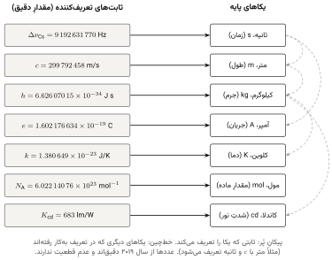
یکاهای فرعی. هر یکای دیگر از ضرب و تقسیمِ یکاهای پایه ساخته میشود و یکای فرعی (به انگلیسی derived unit) نام دارد. دستگاهِ SI همدوس (به انگلیسی coherent) است: در ساختنِ یکاهای فرعی هیچ ضریبِ عددی جز یک ظاهر نمیشود. مثلاً نیرو جرم ضربِ شتاب است و یکایش \(\text{kg}\cdot\text{m/s}^2\)؛ این ترکیب نامِ ویژهٔ نیوتن (N) را دارد و هیچ «ضریبِ تبدیلی» در کار نیست. بیستودو یکای فرعی نامِ ویژه دارند؛ جدول 2.2 آنهایی را آورده که در این کتاب بارها میبینیم.
| یکا و نماد | کمیت | بر حسبِ یکاهای پایه | نمونه در نیروگاهِ P |
|---|---|---|---|
| هرتز، Hz | بسامد | \(\text{s}^{-1}\) | بسامدِ شبکه 50 Hz |
| نیوتن، N | نیرو | \(\text{kg}\,\text{m}\,\text{s}^{-2}\) | نیروی باد روی روتور |
| پاسکال، Pa | فشار، تنش | \(\text{kg}\,\text{m}^{-1}\,\text{s}^{-2}\) | فشارِ هوای 87 767 Pa |
| ژول، J | انرژی، کار، گرما | \(\text{kg}\,\text{m}^{2}\,\text{s}^{-2}\) | انرژیِ اتصالِ کوتاهِ کابل |
| وات، W | توان | \(\text{kg}\,\text{m}^{2}\,\text{s}^{-3}\) | توانِ ماژولِ 550 W |
| کولن، C | بارِ الکتریکی | \(\text{A}\,\text{s}\) | بارِ گذرنده از کابل |
| ولت، V | اختلافِ پتانسیل | \(\text{kg}\,\text{m}^{2}\,\text{s}^{-3}\,\text{A}^{-1}\) | ولتاژِ رشته |
| اُهم، Ω | مقاومت | \(\text{kg}\,\text{m}^{2}\,\text{s}^{-3}\,\text{A}^{-2}\) | مقاومتِ فیدر |
| زیمنس، S | رسانایی | \(\text{kg}^{-1}\,\text{m}^{-2}\,\text{s}^{3}\,\text{A}^{2}\) | ماتریسِ رسانایی (فصلِ ۶) |
| فاراد، F | ظرفیتِ خازنی | \(\text{kg}^{-1}\,\text{m}^{-2}\,\text{s}^{4}\,\text{A}^{2}\) | خازنِ لینکِ DC اینورتر |
| وبر، Wb | شارِ مغناطیسی | \(\text{kg}\,\text{m}^{2}\,\text{s}^{-2}\,\text{A}^{-1}\) | هستهٔ ترانسفورماتور |
| تسلا، T | چگالیِ شارِ مغناطیسی | \(\text{kg}\,\text{s}^{-2}\,\text{A}^{-1}\) | فاصلهٔ هواییِ ژنراتور |
| هانری، H | القاییدگی | \(\text{kg}\,\text{m}^{2}\,\text{s}^{-2}\,\text{A}^{-2}\) | سلفِ صافیِ اینورتر |
| درجهٔ سلسیوس، °C | دمای سلسیوس | \(\text{K}\) (با جابهجاییِ \(273.15\)) | دمای هوا و سلول |
| رادیان، rad | زاویهٔ مسطح | \(\text{m/m} = 1\) | زاویهٔ چرخشِ روتور |
یکاهای غیرِ SI پذیرفتهشده. چند یکا بیرون از SI اند اما بروشورِ SI کاربردشان را در کنارِ SI میپذیرد، چون در زندگیِ روزمره و صنعت جاافتادهاند: دقیقه (min)، ساعت (h)، روز (d)، درجهٔ زاویه (°)، هکتار (ha)، لیتر (L)، تن (t) و الکترونولت (eV). از همینجا روشن است که کیلوواتساعت (kWh) یکایی درست و پذیرفتنی است: حاصلضربِ کیلووات (یکای SI) در ساعت (یکای پذیرفتهشده). یکاهایی مثلِ بار (bar)، اینچ، پوند یا اسببخار در برگههای دادهٔ سازندگان هنوز دیده میشوند؛ آنها را همان لحظهٔ ورود به محاسبه به SI تبدیل میکنیم و منبعِ عددِ اولیه را نگه میداریم (بخش 2.2.4).
مثال 2.2 (اُهم بر حسبِ یکاهای پایه) پرسش. نشان دهید \(1\ \Omega = 1\ \text{kg}\,\text{m}^{2}\,\text{s}^{-3}\,\text{A}^{-2}\).
پاسخ. از تعریفها پیش میرویم. وات ژول بر ثانیه است و ژول نیوتن-متر:
\[ \text{W} = \frac{\text{N}\,\text{m}}{\text{s}} = \frac{(\text{kg}\,\text{m}\,\text{s}^{-2})\,\text{m}}{\text{s}} = \text{kg}\,\text{m}^{2}\,\text{s}^{-3} \]
ولت وات بر آمپر است (چون \(P = VI\))، پس \(\text{V} = \text{kg}\,\text{m}^{2}\,\text{s}^{-3}\,\text{A}^{-1}\). و اُهم ولت بر آمپر است (چون \(R = V/I\)):
\[ \Omega = \frac{\text{V}}{\text{A}} = \text{kg}\,\text{m}^{2}\,\text{s}^{-3}\,\text{A}^{-2}. \]
چرا مفید است؟ هر وقت در فرمولی شک کردید، همهچیز را به یکاهای پایه برگردانید؛ دو طرفِ یک معادلهٔ درست باید ترکیبِ یکسانی بدهند. این همان «تحلیلِ ابعادی» است که در بخش 2.3.1 نظاممند میشود.
- هفت یکای پایهٔ SI را با نماد بنویسید. کدام یک تنها یکای پایهای است که پیشوند در نامش هست؟
- چرا تعریفِ کیلوگرم با ثابتِ پلانک بهتر از تعریف با یک جسمِ فلزی است؟
- ژول و وات را بر حسبِ یکاهای پایه بنویسید. اختلافشان در کدام یکای پایه است و این اختلاف چه معنایی دارد؟
- چرا kWh یکایی پذیرفتنی است اما «کیلووات بر ساعت» (kW/h) برای انرژی غلط است؟
- ولت را از رابطهٔ «انرژی بر بار» (\(V = W/Q\)) به یکاهای پایه برگردانید و با جدول 2.2 مقایسه کنید.
- «همدوس» بودنِ SI یعنی چه؟ یک یکای ناهمدوس مثال بزنید.
- کدام یکاهای جدول 2.2 در محاسبهٔ گرمایشِ کابل در فصلِ ۶ بهکار رفتند؟
- دمای 25 °C چند کلوین است؟ اختلافِ دمای 20 °C چند کلوین است؟
2.2.3 پیشوندها و قاعدههای نوشتن
پیشوندها. کمیتهای نیروگاه از میکروولتِ خروجیِ یک حسگرِ تابش تا تراواتساعتِ انرژیِ عمرِ نیروگاه گستردهاند: هجده مرتبهٔ بزرگی. بهجای نوشتنِ صفرهای بسیار، پیشوند بهکار میبریم (جدول 2.3 و شکل 2.2). هر پیشوند یک توانِ ده است و به یکا چسبیده نوشته میشود.
| پیشوند | نماد | ضریب | نمونه |
|---|---|---|---|
| پیکو | p | \(10^{-12}\) | ظرفیتِ پراکندهٔ سیمپیچ (pF) |
| نانو | n | \(10^{-9}\) | زمانِ کلیدزنیِ نیمههادی (ns) |
| میکرو | µ | \(10^{-6}\) | خروجیِ پیرانومتر (µV) |
| میلی | m | \(10^{-3}\) | سیگنالِ حسگر (mA) |
| کیلو | k | \(10^{3}\) | توانِ رشته (kW) |
| مگا | M | \(10^{6}\) | توانِ نیروگاه (MW) |
| گیگا | G | \(10^{9}\) | انرژیِ سالانه (GWh) |
| ترا | T | \(10^{12}\) | انرژیِ عمر (TWh) |
دستگاهِ SI امروز ۲۴ پیشوند دارد، از کوئکتو (\(10^{-30}\)) تا کوئتا (\(10^{30}\))؛ چهار پیشوندِ دو سرِ این گستره در سالِ ۲۰۲۲ افزوده شدند. پیشوندهای «سانتی» (\(10^{-2}\))، «دسی» (\(10^{-1}\))، «دکا» (\(10^{1}\)) و «هکتو» (\(10^{2}\)) در مهندسیِ برق کمکاربردند و بیشتر در cm و hPa (هکتوپاسکال، یکای رایجِ فشارِ هوا) دیده میشوند.
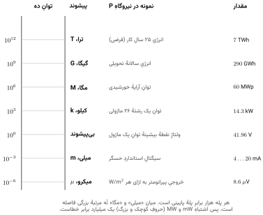
قاعدههای نوشتن. این قاعدهها سلیقه نیستند؛ هر کدام جلوی یک خطای واقعی را میگیرد.
- کوچک و بزرگ بودنِ حرف معنا دارد. mW (میلیوات) و MW (مگاوات) یک میلیارد برابر فاصله دارند؛ ms میلیثانیه است و mS میلیزیمنس؛ K کلوین است و پیشوندِ کیلو k کوچک است. پس «550 Kw» و «33KV» غلطاند و درستشان 550 kW و 33 kV است.
- میانِ عدد و یکا یک فاصله. 60 MW، نه 60MW. این قاعده برای °C و % هم برقرار است: 25 °C و 15 %. استثنا فقط درجه، دقیقه و ثانیهٔ زاویه است: 30°.
- نماد جمع بسته نمیشود و نقطه ندارد. 5 MW، نه «5 MWs» یا «5 MW.» در میانِ جمله. «sec» و «hr» نماد نیستند؛ نماد s و h است.
- یک پیشوند، و توان روی کلِ یکای پیشونددار. km² یعنی \((\text{km})^2 = 10^{6}\ \text{m}^2\)، نه کیلو-مترمربع. پیشوندِ دوتایی ممنوع است: «mµm» غلط است، nm درست.
- استثنای کیلوگرم. چون کیلوگرم خودش پیشوند دارد، پیشوندها به گرم میچسبند: mg، نه «µkg».
- ضرب و تقسیم صریح باشد. N m یا N·m برای گشتاور؛ بیش از یک خطِ کج در یک یکا نیاید: m/s²، نه «m/s/s». و kW/h یکای انرژی نیست؛ «کیلووات بر ساعت» آهنگِ تغییرِ توان است (مثلاً شیبِ افزایشِ توان) و با kWh یکسره فرق دارد.
- اطلاعات را به یکا نچسبانید. V DC یا «Vdc» یکا نیست؛ نوعِ ولتاژ را در نمادِ کمیت بگذارید: \(V_\text{DC} = 1500\ \text{V}\). همینطور Wp («وات-پیک») از نظرِ SI یکای جداگانهای نیست، بلکه وات در شرایطِ آزمونِ استاندارد است؛ صنعتِ خورشیدی آن را برای جدا کردنِ ظرفیتِ DC از ظرفیتِ AC بهکار میبرد. این کتاب MWp را فقط بهعنوانِ برچسبِ ظرفیتِ DC بهکار میبرد و در محاسبه آن را \(P_\text{STC}\) بر حسبِ وات مینویسد.
- جداکنندهٔ هزارگان فاصلهٔ باریک است، نه ویرگول. 289 812 MWh یا 289,812 MWh؟ در متنِ فارسی ویرگول با «،» اشتباه میشود و در بسیاری از کشورها ویرگول ممیز است. این کتاب در ریاضی فاصلهٔ باریک (\(289\,812\)) و در خروجیِ برنامهها ویرگول را بهکار میبرد، و ممیز همیشه نقطه است.
- عدد در متنِ فارسی. شمارشهای سادهٔ متن با رقمِ فارسی میآیند («۵۹ فصل») و کمیتهای دارای یکا با رقمِ لاتین، چپبهراست (60 MW). این قراردادِ کتاب است تا یک کمیت هرگز میانِ دو جهتِ نوشتن شکسته نشود. در نوشتهٔ فارسیِ رایج، ممیز «٫» است؛ هنگامِ کپی کردنِ عدد از یک سندِ فارسی به نرمافزار، ممیز و رقمها را وارسی کنید: بسیاری از نرمافزارها «۲٫۵» را عدد نمیشناسند.
مثال 2.3 (نُه غلطِ نگارشی در یک یادداشتِ کارگاهی) پرسش. این یادداشت در کارگاهِ نیروگاه نوشته شده است: «اینورتر Kw 2500، ولتاژِ ورودی 1500Vdc، تلفاتِ کابل 50 kW/h، بادِ میانگین 7.1 m/sec در 100 mts، ظرفیتِ باتری 40MWH، زمانِ قطع 10 mS، فشار 877 HPa، کابلِ 240 mm2.» همهٔ خطاها را پیدا و درستش را بنویسید.
پاسخ.
| نوشته | مشکل | درست |
|---|---|---|
| Kw 2500 | عدد پس از یکا؛ K بزرگ؛ w کوچک | 2500 kW |
| 1500Vdc | فاصله؛ اطلاعات چسبیده به یکا | \(V_\text{DC} = 1500\ \text{V}\) |
| 50 kW/h | آهنگِ تغییرِ توان بهجای انرژی | 50 kWh (اگر انرژی منظور است) |
| 7.1 m/sec | sec نماد نیست | 7.1 m/s |
| 100 mts | نمادِ ساختگی | 100 m |
| 40MWH | فاصله؛ H هانری است | 40 MWh |
| 10 mS | S زیمنس است | 10 ms |
| 877 HPa | H پیشوند نیست | 877 hPa |
| 240 mm2 | توان باید بالانویس باشد | 240 mm² |
چرا اینقدر سختگیری؟ هر یک از اینها روزی کسی را گمراه میکند: «10 mS» در برگهٔ تنظیمِ حفاظت ممکن است بهجای ده میلیثانیه، بهعنوانِ یک رسانایی خوانده شود یا در نرمافزاری که یکا را میفهمد خطا بدهد؛ «50 kW/h» در قراردادِ اتصال ممکن است حدِ شیبِ تغییرِ توان باشد و هیچ ربطی به تلفات نداشته باشد. وارسیِ معقول بودن: نوشتهٔ درست را باید بتوان بیابهام در برنامهٔ بخش 2.2.4 وارد کرد؛ همهٔ ستونِ سومِ جدول 2.4 این آزمون را میگذرانند.
- 5 mm² چند مترِ مربع است؟ (یادتان باشد توان روی پیشوند هم اثر میکند.)
- فرقِ mW، MW و Mw چیست؟ کدام یکی بیمعناست؟
- چرا kW/h را نباید بهجای kWh نوشت؟ برای کدام کمیت kW/h یا MW/min درست است؟
- در جملهٔ «ولتاژِ 33KV و جریانِ 920A» چند خطا هست؟
- Wp در این کتاب چه معنایی دارد و چرا در محاسبه بهجای آن \(P_\text{STC}\) مینویسیم؟
- 1 GWh چند kWh است؟ 1 µs چند ثانیه؟
- فشارِ 877.67 hPa را بر حسبِ kPa و Pa بنویسید.
- چرا در این کتاب کمیتهای دارای یکا با رقمِ لاتین نوشته میشوند، حتی در میانِ متنِ فارسی؟
2.2.4 تبدیلِ یکا با ضریبِ واحد
شهود. ضرب کردنِ هر عدد در یک، آن را عوض نمیکند. کسرِ \(\dfrac{1000\ \text{m}}{1\ \text{km}}\) برابرِ یک است، چون صورت و مخرجش یک طولاند. پس میتوانیم هر کمیت را در چنین کسری ضرب کنیم بی آنکه مقدارش عوض شود؛ فقط یکایش عوض میشود. این روشِ ضریبِ واحد (به انگلیسی unit-factor method) است و تنها روشی است که در این کتاب برای تبدیل بهکار میبریم، چون یکاها را هم مثلِ عدد ساده میکند و اگر کسر را وارونه بنویسید، یکای نتیجه خودش اشتباه را فریاد میزند.
روش. (۱) کمیت را با یکایش بنویسید. (۲) کسرهایی برابرِ یک پشتِ سرِ هم بگذارید، طوری که یکای ناخواسته یک بار در صورت و یک بار در مخرج بیاید. (۳) یکاها را مثلِ نمادهای جبری ساده کنید. (۴) عددها را ضرب کنید. (۵) وارسی کنید که یکای باقیمانده همان است که میخواستید.
\[ 7.10\ \frac{\text{m}}{\text{s}} \times \frac{1\ \text{km}}{1000\ \text{m}} \times \frac{3600\ \text{s}}{1\ \text{h}} = 25.56\ \frac{\text{km}}{\text{h}} \tag{2.2}\]
متر یک بار بالا و یک بار پایین آمده و حذف شده؛ ثانیه هم. اگر بهاشتباه \(\tfrac{1\ \text{h}}{3600\ \text{s}}\) را نوشته بودید، یکای نتیجه \(\text{km}\,\text{h}/\text{s}^2\) میشد که آشکارا تندی نیست. یک میانبُرِ بهیادماندنی از همین میآید: برای تبدیلِ متر بر ثانیه به کیلومتر بر ساعت، در \(3.6\) ضرب کنید.
توانها و پیشوندها. وقتی یکا توان دارد، ضریبِ تبدیل هم به همان توان میرسد:
\[ 240\ \text{mm}^2 \times \left(\frac{1\ \text{m}}{1000\ \text{mm}}\right)^{2} = 240\times10^{-6}\ \text{m}^2 = 2.40\times10^{-4}\ \text{m}^2 . \]
خطای رایج این است که فقط یک بار بر هزار تقسیم شود و نتیجه هزار برابر بزرگتر از واقع شود. همین برای حجم سه بار تکرار میشود: \(1\ \text{cm}^3 = 10^{-6}\ \text{m}^3\) و چگالیِ آلومینیومِ \(2.70\ \text{g/cm}^3\) برابرِ \(2700\ \text{kg/m}^3\) است.
مثال 2.4 (سه کمیتِ نیروگاهِ P در یکاهای مختلف) پرسش. از سالِ ساختگیِ بستهٔ داده (1.0.0، سناریوی S0) سه میانگین را داریم: تندیِ باد در ارتفاعِ 100 m، تابشِ دریافتیِ سالانه روی سطحِ افقی، و فشارِ هوا. (الف) تندی را بر حسبِ کیلومتر بر ساعت، گره و مایل بر ساعت بنویسید. (ب) تابشِ سالانه را به مگاژول بر مترمربع، به «شدتِ تابشِ میانگینِ شبانهروزی» و به «میانگینِ روزانه» برگردانید. (پ) فشار را به کیلوپاسکال، پاسکال، بار و پوند بر اینچِ مربع (psi) بنویسید.
پاسخ. برنامهٔ companion/ch02/examples.py میانگینها را از دادهٔ ساعتی میگیرد و با کتابخانهٔ یکای همراه تبدیل میکند:
data: Plant P Reference Data Pack 1.0.0, scenario S0 (no-BESS)
mean wind speed at 100 m: 7.103 m/s = 25.57 km/h = 13.81 kn = 15.89 mph
annual GHI: 1947.2 kWh/m2 = 7010 MJ/m2
as a mean irradiance over 8760 h: 222.3 W/m2
as a daily mean: 5.335 kWh/m2 per day
mean station pressure: 877.67 hPa = 87.767 kPa = 87767 Pa = 0.8777 bar = 12.73
psiبخشِ (ب) با دست. تابشِ دریافتی انرژی بر واحدِ سطح است. با \(1\ \text{kWh} = 3.6\ \text{MJ}\): \(1947.2 \times 3.6 = 7010\ \text{MJ/m}^2\). برای «شدتِ تابشِ میانگین» انرژی را بر زمان تقسیم میکنیم:
\[ \bar{G} = \frac{1947.2\ \text{kWh/m}^2}{8760\ \text{h}} = 0.2223\ \text{kW/m}^2 = 222.3\ \text{W/m}^2 . \]
این عدد میانگینِ شب و روز است؛ میانگینِ ساعتهای روشن بسیار بیشتر است. و میانگینِ روزانهٔ \(1947.2/365 = 5.335\ \text{kWh/m}^2\) را گاهی «ساعتهای آفتابِ کامل» مینامند، چون برابرِ تعدادِ ساعتهایی است که اگر شدتِ تابش همیشه \(1\ \text{kW/m}^2\) بود، همان انرژی را میداد.
وارسی. \(25.57/3.6 = 7.10\) (درست). یک گره \(1852\ \text{m/h}\) است، پس \(13.81 \times 1852 / 3600 = 7.10\) (درست). یک بار 100 kPa است و فشارِ ساختگاهِ P در ارتفاعِ 1200 m حدودِ \(0.88\) بار است؛ معقول، چون فشار با ارتفاع کم میشود (فصلِ ۴).
یکاهای غیرِ SI در برگههای داده. سازندگانِ بسیاری، بهویژه در تجهیزاتِ مکانیکی، هنوز یکاهای امپریال (انگلیسی-آمریکایی) بهکار میبرند. خوشبختانه تعریفِ امروزیِ این یکاها بر پایهٔ SI و دقیق است:
\[ \begin{aligned} 1\ \text{in} &= 25.4\ \text{mm}, & 1\ \text{ft} &= 0.3048\ \text{m},\\ 1\ \text{lb} &= 0.453\,592\,37\ \text{kg}, & 1\ \text{kn} &= 1852\ \text{m/h} \end{aligned} \]
که همه دقیقاند؛ بقیه از اینها ساخته میشوند: یک پوند-نیرو وزنِ یک پوند جرم در شتابِ گرانشِ استاندارد (\(9.806\,65\ \text{m/s}^2\)) است، یعنی حدودِ \(4.448\ \text{N}\)؛ یک psi حدودِ \(6.895\ \text{kPa}\). انرژی گاهی با واحدهای حرارتی بیان میشود: یک کالریِ ترموشیمیایی دقیقاً \(4.184\ \text{J}\) است و یک تُنِ معادلِ نفت (toe) در آمارِ انرژی معمولاً \(41.868\ \text{GJ}\) تعریف میشود؛ این دومی قرارداد است، نه ثابتِ طبیعت، پس همیشه تعریفِ بهکاررفته را بنویسید.
مثال 2.5 (انرژیِ نیروگاهِ P در یکاهای گوناگون) پرسش. انرژیِ سالانهٔ نیروگاهِ P (289.8 GWh، غربالگریِ فصلِ ۱) را بر حسبِ MWh، TWh، ترازول، پتاژول و تُنِ معادلِ نفت بنویسید. یک ماژولِ 550 W که یک ساعت با توانِ کامل کار کند، چند کیلوژول تولید کرده است؟
پاسخ.
289.8 GWh = 289,800 MWh = 0.2898 TWh
= 1,043 TJ = 1.043 PJ
= 24,918 toe (1 toe = 41.868 GJ)
one module, 550 W for 1 h = 1,980 kJ = 0.55 kWhتفسیر. همان انرژی را میتوان «۲۵ هزار تُن نفت» هم بیان کرد، اما این جمله انرژیِ گرمایی نفت را با انرژیِ الکتریکی برابر میگذارد. یک نیروگاهِ حرارتی برای تولیدِ همین برق، به سبب بازدهِ تبدیل، دو تا سه برابرِ این مقدار سوخت مصرف میکند. پس «معادلِ نفت» بدونِ ذکرِ مبنا (گرمایی یا جایگزینیِ برق) گمراهکننده است. این همان درسِ آغازِ فصل است: یکا لازم است اما کافی نیست؛ مبنا هم باید نوشته شود.
مثال 2.6 (گشتاورِ روتور و گشتاورِ پیچ) پرسش. (الف) توربینِ WT-5.0-150 (ساختگی) در توانِ نامیِ 5 MW با تندیِ چرخشیِ فرضیِ 10 rpm میچرخد. گشتاورِ محورِ روتور چقدر است؟ (ب) نقشهٔ نصبِ یک فلنجِ برج گشتاورِ سفت کردنِ پیچ را 2950 ft·lbf داده است. آچارِ گشتاورِ کارگاه بر حسبِ N·m مدرج است. عددِ تنظیم چیست؟
پاسخِ (الف). توان حاصلضربِ گشتاور در تندیِ زاویهای است، \(P = T\omega\)، و \(\omega\) باید بر حسبِ رادیان بر ثانیه باشد، نه دور بر دقیقه:
WT-5.0-150 at rated power 5 MW (synthetic) and 10 rpm (assumed rotor speed)
omega = 10 x 2 pi / 60 = 1.0472 rad/s
torque = P / omega = 4.77 MN m = 4,775 kN m
check: 5.000 MWپاسخِ (ب). با کتابخانهٔ یکا (بخشِ بعد)، \(2950\ \text{ft}\cdot\text{lbf} = 3999.66\ \text{N}\cdot\text{m}\)؛ یعنی نقشه در اصل \(4000\ \text{N}\cdot\text{m}\) بوده که به امپریال گرد شده است. هشدار: گشتاورِ سفت کردنِ پیچهای سازهای کمیتی ایمنیمحور است؛ عددِ نهایی را دستورالعملِ سازنده و رویهٔ تأییدشدهٔ نصب تعیین میکند، نه تبدیلِ ما. کارِ ما این است که مطمئن شویم تبدیل درست انجام شده و منبعِ عدد ثبت شده است.
وارسی. گشتاورِ میلیون نیوتنمتری برای محورِ کُندگردِ یک توربینِ چندمگاواتی معقول است: همین بزرگیِ گشتاور است که جعبهدنده یا ژنراتورِ قطرِ بزرگ را لازم میکند (فصلِ ۸ و ۱۱).
2.2.4.1 تبدیل با کد: کمیتهایی که یکایشان را همراه دارند
دقیقترین راه برای پرهیز از خطای یکا این است که عدد هرگز بییکا راه نرود. کتابخانهٔ همراهِ کتاب یک «کمیت» (Quantity، بهاختصار Q) دارد که عدد و یکا را با هم نگه میدارد. درونش عدد همیشه به یکاهای همدوسِ SI ذخیره میشود و کنارِ آن، بُعدِ کمیت (توانهای هفت کمیتِ پایه) نگهداری میشود. جمع کردنِ دو کمیت فقط وقتی مجاز است که بُعدشان یکی باشد؛ ضرب و تقسیم همیشه مجاز است و بُعدِ نتیجه را خودش میسازد:
from plantp.units import Q, DimensionError, check
p = Q(60, "MW") # a power
e = p * Q(8760, "h") # power x time = energy
print(e.to("GWh")) # 525.6 GWh
print(Q(7.10, "m/s").to("km/h")) # 25.56 km/h
print(Q(2950, "ft lbf").to("N m")) # bolt torque, imperial drawing
try:
Q(60, "MW") + Q(192.5, "GWh") # power + energy: not allowed
except DimensionError as err:
print("refused:", err)
check(Q(5, "kWh"), "J") # passes silently: kWh is an energyخروجی:
525.6 GWh
25.56 km/h
3999.66 N m
refused: cannot add MW [L^2 M T^-3] and GWh [L^2 M T^-2]سطرِ چهارم مهمترین است: جمعِ توان و انرژی رد میشود و پیامِ خطا هر دو بُعد را نام میبرد. در بخش 2.5.6 خواهیم دید این «نگهبان» کدام خطاهای یک برآوردِ واقعی را خودکار میگیرد و کدام را نمیتواند بگیرد.
- 36 km/h چند متر بر ثانیه است؟ 15 m/s چند کیلومتر بر ساعت؟
- 2.5 mm² و 4 mm² را بر حسبِ مترِ مربع بنویسید.
- چگالیِ مس 8.96 g/cm³ است. آن را بر حسبِ kg/m³ بنویسید.
- 1 MWh چند ژول است؟ 1 GJ چند کیلوواتساعت؟
- یک برگهٔ داده ارتفاعِ برج را 328 ft داده است. این چند متر است؟ آیا با ارتفاعِ توپیِ 100 m سازگار است؟
- اگر کسی در معادلهٔ 2.2 بهجای \(3600/1\) کسرِ \(1/3600\) را بگذارد، یکا و عددِ نتیجه چه میشود؟ چطور خطا را از یکا تشخیص میدهید؟
- چرا «معادلِ نفت» بدونِ ذکرِ مبنا گمراهکننده است؟
- \(\omega\) را برای 15 rpm بر حسبِ rad/s حساب کنید. چرا رادیان در یکای نتیجهٔ \(P = T\omega\) ظاهر نمیشود؟
2.2.5 توان و انرژی: آهنگ و مقدار
شهود. شیرِ آبی را تصور کنید. «چند لیتر در ثانیه» میریزد آهنگ است؛ «چند لیتر» در سطل جمع شده مقدار است. اگر شیر دو ساعت با آهنگِ ثابتِ نیم لیتر در ثانیه باز باشد، سطل \(0.5 \times 7200 = 3600\) لیتر آب دارد. توان (به انگلیسی power) آهنگِ انتقال یا تبدیلِ انرژی است و انرژی (به انگلیسی energy) مقدارِ آن. نیروگاه را با توان (مگاوات) میسازند، اما با انرژی (مگاواتساعت) پول درمیآورد. شاید هیچ خطایی در گفتوگوهای انرژی به اندازهٔ قاطی کردنِ این دو رایج نباشد.
تعریف. اگر توان ثابت باشد، انرژی حاصلضربِ توان در مدت است، \(E = P\,t\). اگر توان تغییر کند، انرژی مساحتِ زیرِ نمودارِ توان است:
\[ E = \int_{t_1}^{t_2} p(t)\,\mathrm{d}t \;\approx\; \sum_{k} P_k\,\Delta t \tag{2.3}\]
در دادهٔ ساعتی، \(P_k\) میانگینِ توان در ساعتِ \(k\) و \(\Delta t = 1\ \text{h}\) است؛ پس انرژیِ هر ساعت بر حسبِ مگاواتساعت، همان عددِ میانگینِ توان بر حسبِ مگاوات است. این تساویِ عددی راحت است اما خطرناک، چون یکای دو عدد فرق دارد و در دادهٔ دهدقیقهای یا پانزدهدقیقهای دیگر برقرار نیست (مثال 2.8).
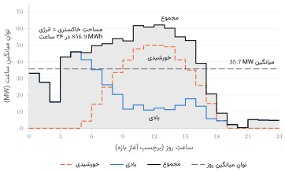
یکاهای انرژی. یکای SI انرژی ژول است: یک وات در یک ثانیه. صنعتِ برق واتساعت را ترجیح میدهد:
\[ 1\ \text{kWh} = 1000\ \text{W} \times 3600\ \text{s} = 3.6\times10^{6}\ \text{J} = 3.6\ \text{MJ}. \]
و پلههای بعدی هر کدام هزار برابرند: MWh، GWh، TWh. یک خانوار ممکن است در ماه چند صد کیلوواتساعت مصرف کند؛ نیروگاهِ P در یک ساعتِ پرباد دهها مگاواتساعت تولید میکند.
مثال 2.7 (انرژیِ یک روزِ تابستانی) پرسش. شکل 2.3 توانِ نیروگاهِ P را در روزِ تابستانیِ بستهٔ داده (انتشارِ 1.0.0، سناریوی S0، مدلِ غربالگریِ فصلِ ۱، دادهٔ ساختگی) نشان میدهد. انرژیِ روزانهٔ هر منبع، توانِ میانگین و «ساعتهای بارِ کامل» را بیابید.
پاسخ. انرژی جمعِ ۲۴ توانِ میانگینِ ساعتی ضربِ یک ساعت است:
day 2023-06-23 (data pack 1.0.0, summer subset), hourly means
PV: peak 50.0 MW, energy 436.3 MWh, mean power 18.2 MW
wind: peak 46.0 MW, energy 420.6 MWh, mean power 17.5 MW
sum: peak 62.1 MW, energy 856.9 MWh
full-load hours of the day: PV 8.73 h (on 50 MW AC), wind 7.01 h (on 60 MW)تفسیر. بیشینهٔ مجموع 62.1 MW است اما توانِ میانگین فقط 35.7 MW؛ نسبتِ این دو نشان میدهد چرا ظرفیتِ اتصالِ 100 MW در این روز نیمهخالی است. «ساعتهای بارِ کامل» تعدادِ ساعتهایی است که اگر نیروگاه با توانِ نامی کار میکرد، همان انرژی را میداد: خورشیدی معادلِ 8.73 h از 24 h. وارسی: خورشیدی در شب صفر است و در ظهر به سقفِ 50 MW اینورترها میرسد؛ انرژیِ 436 MWh یعنی حدودِ نُه ساعت با توانِ کامل، که برای یک روزِ صافِ تابستانی در عرضِ ۳۴ درجه معقول است.
بازههای کوتاهتر از یک ساعت. کنتورهای فروشِ برق و سامانههای پایشِ نیروگاه معمولاً توان یا انرژی را در بازههای پانزدهدقیقهای یا دهدقیقهای ثبت میکنند. اگر داده توانِ میانگینِ هر بازه باشد، انرژی \(\sum P_k\,\Delta t\) است با \(\Delta t = 0.25\ \text{h}\) یا \(1/6\ \text{h}\)؛ اگر داده انرژیِ هر بازه باشد، فقط جمع میشود. فرهنگِ داده باید بگوید کدام است.
مثال 2.8 (چهار ربعِ یک ساعت) پرسش. کنتورِ نقطهٔ اتصال در چهار ربعِ یک ساعت توانِ میانگینِ 80، 84، 90 و 86 MW ثبت کرده است. انرژیِ این ساعت چقدر است؟ اگر کسی این چهار عدد را جمع کند و «مگاواتساعت» بنامد، چه خطایی کرده است؟
پاسخ.
four 15-minute mean powers: 80 MW, 84 MW, 90 MW, 86 MW
energy = sum(P x 0.25 h) = 85 MWh
wrong: sum(P) = 340 'MWh' (four times too much)
mean power of the hour = 85 MW -> energy of the hour 85 MWh
ten-minute data: E = sum(P) x (1/6) h; hourly data: E = sum(P) x 1 hدرس. «جمعِ ستونِ توان» فقط در دادهٔ ساعتی به انرژی بر حسبِ مگاواتساعت میرسد. در دادهٔ پانزدهدقیقهای چهار برابر و در دادهٔ دهدقیقهای شش برابر بیشتر از واقع درمیآید. محافظ: هر ستونِ داده یکایش را در سرستون داشته باشد (MW یا MWh)، و برنامه پیش از جمع زدن \(\Delta t\) را از برچسبهای زمانی حساب کند، نه اینکه فرضش کند (فصلِ ۵).
2.2.5.1 ضریبِ ظرفیت، ساعتهای بارِ کامل و تولیدِ ویژه
سه سنجهٔ رایج، انرژیِ سالانه را با ظرفیت مقایسه میکنند:
\[ \text{CF} = \frac{E}{P_\text{ref}\,T},\qquad h_\text{FL} = \frac{E}{P_\text{ref}} = \text{CF}\cdot T,\qquad Y_\text{sp} = \frac{E}{P_\text{STC}} \tag{2.4}\]
که \(E\) انرژی در دورهٔ \(T\) است (برای یک سالِ غیرِکبیسه \(T = 8760\ \text{h}\))، \(P_\text{ref}\) توانِ مرجعی است که انتخاب میکنیم، \(h_\text{FL}\) ساعتهای بارِ کامل و \(Y_\text{sp}\) تولیدِ ویژه بر حسبِ کیلوواتساعت بر کیلووات-پیک. یکای \(h_\text{FL}\) و \(Y_\text{sp}\) در واقع ساعت است (\(\text{kWh}/\text{kW} = \text{h}\)) و \(\text{CF}\) بییکاست. نکتهٔ اصلی در \(P_\text{ref}\) است: یک انرژی با مرجعهای مختلف ضریبهای ظرفیتِ متفاوتی میدهد و همهٔ آنها درستاند، به شرطِ آنکه مبنا گفته شود.
مثال 2.9 (یک انرژی، چند ضریبِ ظرفیت) پرسش. برای سالِ ساختگیِ بستهٔ داده (انتشارِ 1.0.0، سناریوی S0)، تولیدِ ویژهٔ آرایهٔ خورشیدی، ساعتهای بارِ کاملِ آن و ضریبِ ظرفیتش را بر مبنای DC و بر مبنای AC حساب کنید. همین سنجهها را برای مزرعهٔ بادی بدهید. ویژگیهای واحدِ باتریِ S1 را هم بر حسبِ مدت و نرخِ C بیان کنید.
پاسخ.
PV energy 97.3 GWh/yr (Plant P Reference Data Pack 1.0.0, scenario S0 (no-
BESS))
specific yield = 97,304 MWh / 60 MWp = 1,622 kWh/kWp
full-load hours on AC = 97,304 MWh / 50 MW = 1,946 h
capacity factor on DC basis = 0.185; on AC basis = 0.222
wind: 192.5 GWh/yr, 3,209 full-load hours, CF 0.366
BESS (S1): 40 MWh / 20 MW = 2.0 h duration; 20 MW / 40 MWh = 0.5 C;
usable 10-90 % window: 0.8 x 40 MWh = 32 MWh| سنجه | مبنا | مقدار |
|---|---|---|
| ضریبِ ظرفیتِ خورشیدی | ظرفیتِ DC 60 MWp | 0.185 |
| ضریبِ ظرفیتِ خورشیدی | ظرفیتِ AC 50 MW | 0.222 |
| ضریبِ ظرفیتِ بادی | ظرفیتِ نامیِ 60 MW | 0.366 |
| ضریبِ ظرفیتِ اتصال | سقفِ صادراتِ 100 MW | 0.331 |
تفسیر. ضریبِ ظرفیتِ خورشیدیِ «۰٫۱۸۵» و «۰٫۲۲۲» هر دو درستاند؛ اولی با ظرفیتِ پنلها مقایسه میکند و دومی با ظرفیتِ اینورترها. اگر سازندهای عددِ مبنای AC را کنارِ عددِ مبنای DC رقیب بگذارد، بیست درصد «برتری» از هیچ ساخته است. تولیدِ ویژهٔ 1622 kWh/kWp با ضریبِ ظرفیتِ DC یک چیز را میگویند: \(1622/8760 = 0.185\). باتری: 40 MWh انرژی و 20 MW توان یعنی دو ساعت تخلیه با توانِ کامل؛ «نرخِ C» نسبتِ توان به انرژی است، اینجا 0.5 C. و چون بازهٔ مجازِ وضعیتِ شارژ ۱۰ تا ۹۰ درصد است (فرضِ A-009)، فقط 32 MWh از آن قابلِ استفاده است. وارسی: ضریبِ ظرفیت باید میانِ صفر و یک باشد؛ هست.
آهنگِ تغییرِ توان. قراردادهای اتصال گاهی شیبِ تغییرِ توان (به انگلیسی ramp rate) را محدود میکنند: چند مگاوات در دقیقه، یا چند درصدِ ظرفیت در دقیقه. یکایش MW/min است و نه انرژی است و نه توان؛ مشتقِ توان نسبت به زمان است. «10 % per min» برای نیروگاهی با سقفِ 100 MW یعنی 10 MW/min؛ باز هم مبنای درصد باید گفته شود (ظرفیتِ نامی، توانِ لحظهای، یا سقفِ اتصال). فصلهای ۲۰ و ۲۸ این را بهتفصیل بررسی میکنند.
- یک توربینِ 5 MW اگر شش ساعت با توانِ کامل کار کند، چه انرژیای تولید میکند؟ بر حسبِ MWh و GJ بنویسید.
- در دادهٔ دهدقیقهای، توانِ میانگینِ شش بازهٔ یک ساعت ۱۲، ۱۲، ۱۸، ۱۸، ۱۵ و ۱۵ مگاوات است. انرژیِ آن ساعت چقدر است؟
- چرا تولیدِ ویژه (\(\text{kWh/kWp}\)) یکای «ساعت» دارد؟
- اگر تولیدِ سالانهٔ یک آرایهٔ 10 MWp 17 GWh باشد، تولیدِ ویژه و ضریبِ ظرفیتِ مبنای DC چقدر است؟
- باتریِ S1 اگر با 10 MW تخلیه شود، انرژیِ قابلِ استفادهاش چند ساعت دوام میآورد؟
- «ضریبِ ظرفیتِ نیروگاهِ هیبریدی» بدونِ ذکرِ مبنا چه ابهامی دارد؟ دستکم سه مبنای ممکن بنویسید.
- 10 % per min برای یک مزرعهٔ بادیِ 60 MW چند مگاوات بر دقیقه است؟
- در شکل 2.3، چرا مساحتِ زیرِ منحنی انرژی است؟ یکای مساحت را از یکای محورها بسازید.
2.2.6 کمیتهای جریانِ مستقیم و متناوب
جریانِ مستقیم. در مدارِ DC (فصلِ ۶) ولتاژ و جریان جهتِ ثابت دارند و توان ساده است: \(P = VI\). یکاها ولت، آمپر و واتاند.
جریانِ متناوب. در شبکهٔ AC، ولتاژ و جریان پنجاه بار در ثانیه جهت عوض میکنند (فصلِ ۷). چهار نکتهٔ یکایی را از همین حالا باید دانست:
- مقدارِ مؤثر و بیشینه. عددی که روی تجهیزاتِ AC نوشته میشود («230 V»، «33 kV») مقدارِ مؤثر (به انگلیسی root-mean-square, RMS) است، نه بیشینه. برای موجِ سینوسی \(V_\text{peak} = \sqrt{2}\,V_\text{RMS}\)؛ پس شبکهٔ 230 V تا حدودِ 325 V بالا میرود. عایق باید بیشینه را تحمل کند؛ گرما با مقدارِ مؤثر حساب میشود.
- ولتاژِ خط و فاز. در سامانهٔ سهفاز، «33 kV» ولتاژِ میانِ دو فاز (خط به خط) است. ولتاژِ هر فاز نسبت به نقطهٔ خنثی \(\sqrt{3}\) برابر کمتر است: \(33/\sqrt{3} = 19.05\ \text{kV}\).
- سه نوع توان. توانِ اکتیو \(P\) (وات) کارِ مفید و انرژیِ فروختنی است؛ توانِ راکتیو \(Q\) (ولتآمپرِ راکتیو، var) میانِ منبع و میدانهای مغناطیسی و الکتریکی رفتوبرگشت میکند؛ توانِ ظاهری \(S\) (ولتآمپر، VA) حاصلضربِ ولتاژ و جریانِ مؤثر است و گرمای تجهیزات را تعیین میکند. هر سه از نظرِ بُعد یکساناند، اما یکاهای جدا دارند تا هرگز با هم اشتباه نشوند. نسبتِ \(P/S\) ضریبِ توان است. به همین دلیل ظرفیتِ ترانسفورماتور را با MVA میدهند، نه MW.
- توانِ سهفاز. \(P = \sqrt{3}\,V_\text{LL}\,I_\text{L}\cos\varphi\)، که \(V_\text{LL}\) ولتاژِ خط به خط، \(I_\text{L}\) جریانِ خط و \(\cos\varphi\) ضریبِ توان است. انرژیِ اکتیو با kWh و انرژیِ راکتیو با kvarh اندازهگیری میشود.
مثال 2.10 (جریانِ شبکهٔ جمعآوری) پرسش. شبکهٔ جمعآوریِ نیروگاهِ P با ولتاژِ نامیِ 33 kV (فرضِ SR-04) کار میکند. اگر یک فیدرِ آن 50 MW را با ضریبِ توانِ \(0.95\) ببرد، توانِ ظاهری، توانِ راکتیو و جریانِ خط چقدر است؟ همین توان در ولتاژِ 132 kV خطِ خروجی چه جریانی دارد؟
پاسخ.
230 V rms -> peak 325 V; 33 kV line-to-line -> 19.05 kV line-to-neutral
50 MW at power factor 0.95: S = 52.63 MVA, Q = 16.43 Mvar
line current at 33 kV: I = P / (sqrt(3) V_LL pf) = 920.8 A
same power at 132 kV: 230.2 Aتفسیر. با بالا بردنِ ولتاژ از 33 به 132 kV (چهار برابر)، جریان چهار برابر کم میشود و تلفاتِ \(RI^2\) شانزده برابر؛ این دلیلِ وجودِ ترانسفورماتورِ پستِ نیروگاه است (فصلهای ۲۳ و ۲۵). وارسی: \(S = P/\text{PF} = 50/0.95 = 52.63\ \text{MVA}\) و \(Q = \sqrt{S^2 - P^2}\)؛ همان \(16.43\ \text{Mvar}\). خطای رایج: فراموش کردنِ \(\sqrt{3}\)، یا گذاشتنِ ولتاژِ فاز بهجای ولتاژِ خط در همین فرمول؛ هر دو جریان را \(\sqrt{3}\) برابر غلط میدهند.
- مقدارِ بیشینهٔ ولتاژِ سینوسیِ 400 V (مؤثر) چقدر است؟
- ولتاژِ فاز به خنثیِ شبکهٔ 132 kV چقدر است؟
- چرا ظرفیتِ ترانسفورماتور را با MVA بیان میکنند و نه MW؟
- یک کنتور در ماه 10 GWh و 3 Gvarh ثبت کرده است. ضریبِ توانِ میانگینِ ماه چقدر است؟
- W، VA و var یک بُعد دارند. چرا با یک یکا نوشته نمیشوند؟
- اگر در مثال 2.10 ولتاژِ فاز بهجای ولتاژِ خط گذاشته شود، جریان چند برابر غلط درمیآید؟
2.2.7 دامهای رایجِ یکا در انرژیهای تجدیدپذیر
بیشترِ خطاهای یکا در پروژههای بادی و خورشیدی تکراریاند. جدول 2.6 و جدول 2.7 بیست دامِ رایج را با نمونه، پیامد و محافظ جمع کردهاند. این دو جدول بعدها در فهرستِ وارسیِ برگهٔ محاسبه (بخش 2.5.5) هم بهکار میآیند.
| دام | نمونه | پیامد | محافظ |
|---|---|---|---|
| MWp در برابرِ MW | ظرفیتِ 60 MWp پنل با 50 MW اینورتر یکی گرفته شود | خطای ۲۰ درصدی در تولید یا ضریبِ ظرفیت | مبنای DC یا AC کنارِ هر ظرفیت |
| شدتِ تابش در برابرِ تابشِ دریافتی | W/m² و Wh/m² جابهجا | خطای ابعادی؛ گاهی هزار برابر | نمادِ \(G\) برای توان، \(H\) برای انرژی |
| روزانه در برابرِ سالانه | 5.3 kWh/m² «سالانه» خوانده شود | تولید ۳۶۵ برابر کم | دوره را در یکا بنویسید: kWh/(m² d) |
| تابشِ افقی، صفحهٔ آرایه، مستقیم | GHI بهجای تابشِ صفحهٔ شیبدار | چند تا بیست درصد خطا | نامِ کامل در سرستون |
| توان در برابرِ انرژی | «تلفات 5 MW در سال» | جمله بیمعنا | MW برای آهنگ، MWh برای مقدار |
| دادهٔ کوتاهبازه | جمعِ توانِ ربعساعتی بی ضربِ \(\Delta t\) | انرژی چهار برابر | \(\Delta t\) را از برچسبِ زمان حساب کنید |
| مکعبِ میانگین | \(\bar v^3\) بهجای میانگینِ \(v^3\) | توانِ باد حدودِ نصف | سریزمانی یا توزیعِ کامل (مثال 2.11) |
| ارتفاعِ اندازهگیری | تندیِ 60 m در منحنیِ توانِ توپیِ 100 m | تولید حدودِ ۱۴ درصد کم | ارتفاع در نامِ ستون |
| یکای تندی | km/h، گره، mph بهجای m/s | تا ۴۷ برابر خطا در \(v^3\) | تبدیل در لحظهٔ ورود |
| درصد در برابرِ واحدِ درصد | «ضریبِ عملکرد از ۸۰ به ۸۵ درصد: ۵ درصد بهتر» | افزایشِ واقعی ۶٫۲۵ درصد است | «واحدِ درصد» را جدا بنویسید |
| دام | نمونه | پیامد | محافظ |
|---|---|---|---|
| مبنای ضریبِ ظرفیت | DC، AC، سقفِ اتصال | مقایسههای نادرست | مبنا کنارِ عدد |
| ساعتهای سال | ۸۷۸۴ در سالِ غیرِکبیسه | خطای ۰٫۲۷ درصد | تعدادِ ساعت را از داده بشمارید |
| سلسیوس در برابرِ کلوین | \(p/(RT)\) با \(T\) بر حسبِ سلسیوس | چگالی چند برابر غلط | دمای مطلق با تابعِ جدا |
| هکتوپاسکال در برابرِ پاسکال | \(877\) بهجای \(87\,767\) | صد برابر خطا | پیشوند در سرستون |
| ناخالص در برابرِ خالص | تولید با صادرات یکی گرفته شود | درآمدِ بیشبرآورد | محلِ اندازهگیری را بنویسید |
| جهتِ باد | «از» با «به سوی» یکی گرفته شود | چیدمانِ توربین وارونه | قراردادِ «از»، ساعتگرد از شمال |
| زمان | وقتِ محلی با UTC؛ آغاز با پایانِ بازه | جابهجاییِ یک تا چند ساعت | ISO 8601 با اختلافِ ساعت |
| مقیاسهای بزرگ | «بیلیون» در منابعِ قدیمی گاهی \(10^{12}\) | هزار برابر خطا | توانِ ده را بنویسید |
| تُن | تُنِ متریک در برابرِ تُنِ آمریکایی | حدودِ ۱۰ درصد خطا | t یعنی 1000 kg |
| آمپرساعت در برابرِ واتساعت | ظرفیتِ باتری بی ولتاژ | انرژیِ نامعلوم | \(E = Q\,V_\text{nom}\) با ذکرِ ولتاژ |
دامِ مکعبِ میانگین. این دام آنقدر مهم است که مثالِ جداگانه دارد. توانِ باد با مکعبِ تندی متناسب است (فصلِ ۱۱): \(P_\text{w} = \tfrac12\,\rho_\text{air}\,A_\text{r}\,v^3\). میانگینِ مکعبها با مکعبِ میانگین برابر نیست: اگر تندی نیمی از زمان ۴ و نیمی ۱۰ متر بر ثانیه باشد، میانگینش ۷ است و \(7^3 = 343\)، اما میانگینِ مکعبها \((64 + 1000)/2 = 532\) است. ساعتهای پرباد سهمی بسیار بیشتر از وزنِ زمانیشان در انرژی دارند. نسبتِ این دو را ضریبِ الگوی انرژی (به انگلیسی energy pattern factor) مینامند:
\[ K_\text{e} = \frac{\overline{v^3}}{\bar{v}^{\,3}} \;\ge 1 . \tag{2.5}\]
مثال 2.11 (میانگینِ تندی کافی نیست) پرسش. با تندیهای ساعتیِ ارتفاعِ توپیِ بستهٔ داده (1.0.0، ساختگی) ضریبِ الگوی انرژی را حساب کنید. چگالیِ توانِ باد (\(\tfrac12\rho v^3\) بر واحدِ سطح، با \(\rho = 1.225\ \text{kg/m}^3\)) را یک بار با تندیِ میانگین و یک بار درست حساب کنید. سپس تولیدِ سالانهٔ مزرعه را یک بار با گذاشتنِ تندیِ میانگین در منحنیِ توان و یک بار ساعتبهساعت برآورد کنید.
پاسخ.
hub-height speeds of Plant P Reference Data Pack 1.0.0, scenario S0 (no-BESS)
mean speed 7.103 m/s; (mean speed)^3 = 358.3 m3/s3; mean of cubes = 646.4
m3/s3
energy pattern factor = mean(v^3) / mean(v)^3 = 1.804
power density at 1.225 kg/m3: from the mean speed 219 W/m2; correct 396 W/m2
through the rotor (A = 17,671 m2): 3.88 MW vs 7.00 MW of wind power
power curve at the mean speed: 1758 kW per turbine -> 162.6 GWh/yr for the
farm
power curve hour by hour: 192.5 GWh/yr (the mean-speed shortcut is -16 %)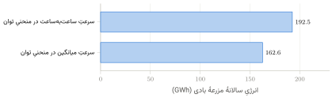
تفسیر. ضریبِ الگوی انرژیِ 1.80 یعنی چگالیِ توانِ واقعی تقریباً دو برابرِ چیزی است که از تندیِ میانگین به دست میآید. در تولیدِ مزرعه اختلاف کمتر است (منفی ۱۶ درصد)، چون منحنیِ توان در تندیهای بالا به سقفِ توانِ نامی میرسد و تندیهای بسیار زیاد را «نمیبیند». اما هر دو روشِ میانبُر کمبرآورد میکنند و در این ساختگاه جهتِ خطا یکی است، چون مکعب همیشه محدب است و منحنیِ توان در بخشِ پرتکرارِ زیرِ تندیِ نامی هم محدب است. این قاعدهٔ همیشگی نیست: نزدیکِ تندیِ نامی منحنیِ توان مقعر میشود، و در ساختگاهی با تندیِ میانگینِ نزدیکِ تندیِ نامی، میانبُرِ منحنیِ توان ممکن است بیشبرآورد کند. محافظ: هرگز میانگینِ تندی را در فرمولی غیرخطی نگذارید؛ یا سریزمانیِ کامل را بهکار ببرید، یا توزیعِ تندی را (فصلهای ۳ و ۱۳).
مثال 2.12 (ارتفاع، زمان و سالِ کبیسه) پرسش. سه دامِ دیگرِ جدول را با دادهٔ بستهٔ داده بسنجید: (الف) اگر تندیِ ارتفاعِ 60 m در منحنیِ توانِ ارتفاعِ توپی گذاشته شود، تولید چقدر کم میشود؟ (ب) اگر سریزمانیِ ساعتیِ تولیدِ خورشیدی یک ساعت جابهجا شود (مثلاً دادهٔ «پایانِ بازه» بهجای «آغازِ بازه» خوانده شود)، چه چیزی عوض میشود و چه چیزی نه؟ (پ) اگر ضریبِ ظرفیت با ۸۷۸۴ ساعت حساب شود، چقدر خطا دارد؟
پاسخ.
mean speed: 60 m 6.508 m/s, 100 m 7.103 m/s (ratio 1.091)
farm energy with 60 m speeds in the hub-height curve: 165.4 GWh vs 192.5 GWh
(-14 %)
PV hourly series shifted by one hour: correlation 0.951; mean absolute
difference 5.6 MW in daylight hours (annual energy unchanged)
8760 h in 2023; 8784 h in a leap year (2024): CF with the wrong hours is -0.27
% offتفسیر. (الف) نُه درصد اختلافِ تندی میانِ دو ارتفاع چهارده درصد اختلافِ تولید میدهد؛ حساسیتِ تولید به تندی بیش از یک است (بخش 2.4.5). (ب) جابهجاییِ زمانی انرژیِ سالانه را عوض نمیکند، پس آزمونِ «جمعِ سالانه» آن را نمیگیرد؛ اما هر مقایسهٔ ساعتبهساعت (با کنتور، با قیمتِ ساعتی، با سقفِ اتصال، با شارژِ باتری) را خراب میکند: میانگینِ اختلافِ ساعتیِ 5.6 MW در ساعتهای روز بزرگ است. (پ) خطای ۰٫۲۷ درصدی کوچک است، اما یک خطای سامانمند است و دلیلی برای پذیرفتنش نیست. درس: آزمونِ جمعهای سالانه لازم است اما برای یافتنِ خطاهای زمانی کافی نیست.
مثال 2.13 (درصد و واحدِ درصد) پرسش. گزارشی میگوید «با شستشوی بیشترِ پنلها، ضریبِ عملکردِ DC از ۸۰ به ۸۵ درصد رسید، یعنی ۵ درصد بهبود». جمله را دقیق کنید. اگر تولیدِ خورشیدی با ضریبِ ۸۵ درصد 97.3 GWh باشد، بهبودِ واقعی چند گیگاواتساعت است؟
پاسخ. ضریب ۵ واحدِ درصد (به انگلیسی percentage points) بالا رفته است. افزایشِ نسبی \(0.85/0.80 - 1 = 6.25\,\%\) است. تولید با ضریب متناسب است، پس با ضریبِ ۸۰ درصد تولید \(97.3 \times 0.80/0.85 = 91.6\ \text{GWh}\) بوده و بهبود \(5.7\ \text{GWh}\) است. وارسی: \(5.7/91.6 = 6.2\,\%\) (درست). محافظ: برای اختلافِ دو درصد بنویسید «واحدِ درصد» و برای تغییرِ نسبی «درصد»؛ و هر دو را عدد بدهید.
- اگر تندیِ باد یکسوم از زمان ۳، یکسوم ۷ و یکسوم ۱۱ متر بر ثانیه باشد، \(\bar v\)، \(\overline{v^3}\) و \(K_\text{e}\) را حساب کنید.
- چرا ضریبِ الگوی انرژی هرگز کمتر از یک نیست؟ کِی دقیقاً یک است؟
- چرا خطای «مکعبِ میانگین» در تولیدِ مزرعه کمتر از خطایش در چگالیِ توانِ باد است؟
- گزارشی «تابشِ سالانه 5.6 kWh/m²» داده است. چه چیزی احتمالاً اشتباه است و چطور میفهمید؟
- ضریبِ در دسترس بودن از ۹۶ به ۹۸ درصد رسیده است. افزایش چند واحدِ درصد و چند درصد است؟
- یک باتری 280 Ah با ولتاژِ نامیِ 3.2 V چند واتساعت انرژیِ نامی دارد؟
- چرا آزمونِ «جمعِ انرژیِ سالانه» جابهجاییِ یکساعتهٔ سریزمانی را نمیگیرد؟ چه آزمونی آن را میگیرد؟
- سه دام از جدول 2.6 و جدول 2.7 را نام ببرید که نگهبانِ ابعادی (کد) نمیتواند بگیرد، چون بُعدِ عددها درست است.
2.3 ب. استدلالِ ابعادی، عددها و قراردادها
2.3.1 بُعد و همگنیِ ابعادی
شهود. نمیتوان سیب را با پرتقال جمع کرد، و نمیتوان متر را با ثانیه جمع کرد. اما میتوان متر را بر ثانیه تقسیم کرد و تندی ساخت. این مشاهدهٔ ساده ابزاری بسیار نیرومند است: پیش از آنکه حتی یک عدد در فرمولی بگذاریم، میتوانیم بفهمیم فرمول ممکن است درست باشد یا قطعاً غلط است.
بُعد و یکا. بُعد (به انگلیسی dimension) نوعِ یک کمیت است، مستقل از یکایی که با آن بیانش میکنیم. طولِ یک کابل یک متر باشد یا سه فوت، بُعدش طول است. بُعدهای هفت کمیتِ پایه را با نمادهای قراردادیِ راستحرف مینویسیم: طول \(\mathsf{L}\)، جرم \(\mathsf{M}\)، زمان \(\mathsf{T}\)، جریان \(\mathsf{I}\)، دما \(\Theta\)، مقدارِ ماده \(\mathsf{N}\) و شدتِ نور \(\mathsf{J}\)؛ بُعدِ هر کمیتِ دیگر حاصلضربی از توانهای اینهاست. بُعدِ کمیتِ \(Q\) را با \(\dim Q\) یا \([Q]\) نشان میدهیم. چند نمونه از کمیتهای این کتاب در جدول 2.8 آمده است.
| کمیت | نماد | بُعد | یکای SI |
|---|---|---|---|
| تندی | \(v\) | \(\mathsf{L\,T^{-1}}\) | m/s |
| چگالیِ هوا | \(\rho_\text{air}\) | \(\mathsf{M\,L^{-3}}\) | kg/m³ |
| نیرو | \(F\) | \(\mathsf{M\,L\,T^{-2}}\) | N |
| انرژی | \(E\) | \(\mathsf{M\,L^{2}\,T^{-2}}\) | J |
| توان | \(P\) | \(\mathsf{M\,L^{2}\,T^{-3}}\) | W |
| شدتِ تابش | \(G\) | \(\mathsf{M\,T^{-3}}\) | W/m² |
| تابشِ دریافتی | \(H\) | \(\mathsf{M\,T^{-2}}\) | J/m² |
| ولتاژ | \(V\) | \(\mathsf{M\,L^{2}\,T^{-3}\,I^{-1}}\) | V |
| مقاومتِ ویژه | \(\rho_\text{el}\) | \(\mathsf{M\,L^{3}\,T^{-3}\,I^{-2}}\) | Ω m |
| ظرفیتِ گرماییِ ویژه | \(c\) | \(\mathsf{L^{2}\,T^{-2}}\,\Theta^{-1}\) | J/(kg K) |
| بازده، ضریبِ ظرفیت | \(\eta\)، \(\text{CF}\) | \(1\) (بیبُعد) | — |
اصلِ همگنیِ ابعادی. در هر معادلهٔ فیزیکیِ درست:
- دو طرفِ تساوی یک بُعد دارند؛
- فقط کمیتهای همبُعد با هم جمع، تفریق یا مقایسه میشوند؛
- آرگومانِ توابعِ نمایی، لگاریتمی و مثلثاتی، و خودِ توانها، بیبُعداند: در \(e^{-t/\tau}\) نسبتِ \(t/\tau\) بیبُعد است؛ در \(\ln(r_2/r_1)\) هم؛ و \(\sin(\omega t)\) فقط وقتی معنا دارد که \(\omega t\) زاویه (بیبُعد) باشد؛
- مشتقگیری نسبت به زمان یک \(\mathsf{T^{-1}}\) به بُعد میافزاید و انتگرالگیری یک \(\mathsf{T}\)؛ همانطور که انرژی انتگرالِ توان است (معادلهٔ 2.3).
آنچه این اصل میگوید و نمیگوید. اگر معادلهای ابعادی ناهمگن باشد، قطعاً غلط است. اما اگر همگن باشد، فقط شاید درست است: ضریبهای بیبُعد (مثلِ \(\tfrac12\) یا \(2\pi\)) و جابهجاییِ کمیتهای همبُعد (مثلاً ولتاژِ فاز بهجای ولتاژِ خط) از چشمِ این آزمون پنهان میمانند. پس همگنی شرطِ لازم است، نه کافی.
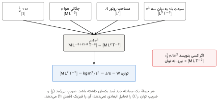
مثال 2.14 (چهار فرمول زیرِ ذرهبینِ ابعاد) پرسش. کدام فرمولها ابعادی درستاند؟ (الف) توانِ باد \(\tfrac12\rho_\text{air} A_\text{r} v^3\)؛ (ب) همان با \(v^2\)؛ (پ) گرمای لازم برای بالا بردنِ دمای یک ماژول \(Q = m\,c\,\Delta T\)؛ (ت) چگالیِ هوا از قانونِ گازِ کامل \(\rho_\text{air} = p/(R_\text{d}T)\) با \(R_\text{d}\) ثابتِ گازِ هوای خشک بر حسبِ J/(kg K).
پاسخ با دست. (الف) توان (درست) (شکل 2.5):
\[ \mathsf{M\,L^{-3}}\cdot\mathsf{L^{2}}\cdot\mathsf{L^{3}\,T^{-3}} = \mathsf{M\,L^{2}\,T^{-3}} \]
(ب) \(\mathsf{M\,L\,T^{-2}}\)، یعنی نیرو؛ برای توان غلط (نادرست) (این عبارت در واقع با نیروی باد بر روتور همبُعد است). (پ) انرژی (درست):
\[ \mathsf{M}\cdot\mathsf{L^{2}\,T^{-2}}\,\Theta^{-1}\cdot\Theta = \mathsf{M\,L^{2}\,T^{-2}} \]
(ت) فشار، \(\mathsf{M\,L^{-1}\,T^{-2}}\)، تقسیم بر \(\mathsf{L^{2}\,T^{-2}}\) (حاصلضربِ \(R_\text{d}\) در \(T\)) میشود \(\mathsf{M\,L^{-3}}\)، یعنی چگالی (درست).
پاسخ با کد. کتابخانهٔ یکا همین وارسیها را خودکار انجام میدهد؛ چون هر کمیت بُعدش را همراه دارد، فقط کافی است بپرسیم نتیجه با «وات» یا «نیوتن» همبُعد است یا نه:
1/2 rho A v^3 -> [L^2 M T^-3] = power: 10.82 MW
1/2 rho A v^2 -> [L M T^-2] is NOT a power (it is a force)
m c dT for a 28 kg module, c = 900 J/(kg K), 40 K: 1.01 MJ [L^2 M T^-2]
p / (R T) = 1.0546 kg/m3 [L^-3 M]وارسی. چگالیِ 1.05 kg/m³ برای ارتفاعِ 1200 m معقول است: کمتر از مقدارِ سطحِ دریا (1.225 kg/m³)، چون فشار کمتر است (فصلِ ۴).
مثال 2.15 (لگاریتم و توان باید بیبُعد باشند) پرسش. دو مدلِ رایج برای تغییرِ تندیِ باد با ارتفاع (فصلهای ۴ و ۱۳) اینهایند:
\[ \frac{v(z)}{v(z_\text{ref})} = \frac{\ln(z/z_0)}{\ln(z_\text{ref}/z_0)} \]
\[ \frac{v(z)}{v(z_\text{ref})} = \left(\frac{z}{z_\text{ref}}\right)^{\alpha} \]
که \(z_0\) «طولِ زبری» و \(\alpha\) «نمای برش» است. (الف) نشان دهید هر دو ابعادی سازگارند. (ب) با میانگینِ تندی در 60 و 100 m از بستهٔ داده، \(\alpha\) و \(z_0\) را بیابید. (پ) نسبتِ تندیها برای \(z_0 = 0.03\ \text{m}\) چه میشد؟ (ت) نسبتِ سرعتِ نوکِ پره را هم از نظرِ ابعادی بررسی کنید.
پاسخ. (الف) در هر دو، ارتفاعها بر هم تقسیم شدهاند و آرگومانِ لگاریتم یا پایهٔ توان بیبُعد است. «لگاریتمِ صد متر» معنا ندارد؛ «لگاریتمِ صد متر بر سه سانتیمتر» دارد. (ب و پ):
tip-speed ratio at 10 rpm, R = 75 m, v = 10 m/s: lambda = omega R / v = 7.85
units: (rad/s) m / (m/s) = rad = 1, dimensionless
log profile with z0 = 0.03 m: v(100)/v(60) = ln(100/0.03)/ln(60/0.03) = 1.0672
data pack means: v(100)/v(60) = 7.103/6.508 = 1.0914
power-law exponent alpha = ln(1.0914)/ln(100/60) = 0.171
log-law roughness length that fits the ratio: z0 = 0.225 mتفسیر. نسبتِ سرعتِ نوک \(\lambda = \omega R/v\) (فصلِ ۱۱) هم بیبُعد است: رادیان بر ثانیه ضربِ متر، تقسیم بر متر بر ثانیه. اعدادِ بیبُعد ارزشمندند، چون مستقل از دستگاهِ یکا یک معنا دارند: یک توربین با \(\lambda \approx 8\) در هر کشوری و با هر یکایی همان رفتار را دارد. محدودیت: \(\alpha\) و \(z_0\) اینجا از دادهٔ ساختگی آمدهاند و فقط نشان میدهند که فرمولها چطور بهکار میروند؛ برش در ساختگاهِ واقعی با زمان، جهت و پایداریِ جو تغییر میکند (فصلِ ۱۳).
- بُعدِ گشتاور و بُعدِ انرژی را بنویسید. یکساناند؟ چرا گشتاور را با N m و انرژی را با J مینویسیم؟
- بُعدِ مقاومتِ ویژه را از \(R = \rho_\text{el} L/A\) به دست آورید و با جدول 2.8 مقایسه کنید.
- کسی مینویسد افتِ ولتاژِ یک فیدر \(\Delta V = 2\rho_\text{el} L I A\) است. با ابعاد نشان دهید غلط است.
- چرا \(e^{-t}\)، وقتی \(t\) بر حسبِ ثانیه است، بیمعناست؟ شکلِ درست چیست؟
- آیا معادلهٔ ابعادی درست \(E = m c^2/2\) میتواند غلط باشد؟ این دربارهٔ حدودِ تحلیلِ ابعادی چه میگوید؟
- ثابتِ زمانیِ مدارِ \(RC\) (فصلِ ۶) \(\tau = RC\) است. نشان دهید بُعدش زمان است.
- در \(\ln(z/z_0)\)، اگر \(z\) را به فوت و \(z_0\) را به متر بنویسیم چه میشود؟
- یک عددِ بیبُعد از نیروگاهِ P نام ببرید که در فصلهای ۱ یا ۶ دیدید.
2.3.2 روشِ ریلی: شکلِ رابطه از ابعاد
شهود. اگر بدانیم یک کمیت به کدام کمیتهای دیگر وابسته است، اما ندانیم چطور، گاهی ابعاد بهتنهایی شکلِ رابطه را تعیین میکنند. این ترفند را روشِ ریلی (به انگلیسی Rayleigh’s method) مینامند و شکلِ کلیترش قضیهٔ پی باکینگهام است.
روش. (۱) فرض کنید کمیتِ هدف حاصلضربی از توانهای کمیتهای مؤثر است، ضربِ یک ثابتِ بیبُعد. (۲) بُعدِ دو طرف را بنویسید. (۳) برای هر بُعدِ پایه یک معادله بنویسید: توانِ آن بُعد در دو طرف برابر است. (۴) دستگاهِ معادلههای خطی را حل کنید. (۵) ثابت را از آزمایش یا نظریه بگیرید؛ ابعاد آن را نمیدهند.
مثال 2.16 (چرا توانِ باد با مکعبِ تندی میرود؟) پرسش. فرض کنید توانِ موجود در باد فقط به چگالیِ هوا، مساحتِ روتور و تندیِ باد وابسته است: \(P = k\,\rho^{a} A^{b} v^{c}\). توانهای \(a\)، \(b\) و \(c\) را بیابید. همین را برای نیروی پَسا روی یک جسم با اندازهٔ \(D\) تکرار کنید: \(F = k\,\rho^{a} v^{b} D^{c}\).
پاسخ. بُعدِ دو طرف:
\[ \mathsf{M\,L^{2}\,T^{-3}} = (\mathsf{M\,L^{-3}})^{a}\,(\mathsf{L^{2}})^{b}\,(\mathsf{L\,T^{-1}})^{c} \]
برای \(\mathsf{M}\): \(a = 1\). برای \(\mathsf{T}\): \(-c = -3\) پس \(c = 3\). برای \(\mathsf{L}\): \(-3a + 2b + c = 2\) پس \(b = 1\). برنامه همین دستگاه را با ماتریس حل میکند (فصلِ ۳):
wind power P = k rho^a A^b v^c; match L, M, T:
L: -3a + 2b + c = 2; M: a = 1; T: -c = -3
solution a = 1, b = 1, c = 3 -> P = k rho A v^3
drag force F = k rho^a v^b D^c:
solution a = 1, b = 2, c = 2 -> F = k rho v^2 D^2تفسیر. بی آنکه یک آزمایش انجام دهیم، فهمیدیم توانِ باد با مکعبِ تندی و با مساحت (پس با مجذورِ قطرِ روتور) متناسب است. این دو نتیجه قلبِ طراحیِ توربیناند: دو برابر شدنِ تندی توان را هشت برابر و دو برابر شدنِ قطر توان را چهار برابر میکند. ثابتِ \(k\) را ابعاد نمیدهند؛ نظریه نشان میدهد \(k = \tfrac12 C_p\) است که \(C_p\) ضریبِ توانِ روتور است و هرگز از \(16/27 \approx 0.593\) (حدِ بتز، فصلِ ۱۱) بیشتر نمیشود.
محدودیت. روش فقط وقتی کار میکند که همهٔ کمیتهای مؤثر را درست انتخاب کرده باشیم. اگر گرانرویِ هوا هم مهم باشد، یک عددِ بیبُعدِ دیگر (عددِ رینولدز) وارد میشود و ابعاد بهتنهایی دیگر شکلِ یکتا نمیدهند؛ اینجا قضیهٔ پی لازم است.
اعدادِ بیبُعد در نیروگاه. بسیاری از مهمترین سنجههای این کتاب بیبُعدند: بازده \(\eta\)، ضریبِ ظرفیت، ضریبِ عملکرد (PR)، ضریبِ توانِ روتور \(C_p\)، نسبتِ سرعتِ نوک \(\lambda\)، ضریبِ توانِ الکتریکی \(\cos\varphi\)، و عددِ رینولدز. بیبُعد بودن مزیت است: مقایسه میانِ نیروگاههای بزرگ و کوچک، میانِ کشورها و میانِ دستگاههای یکا را ممکن میکند. اما یک عددِ بیبُعد هم مبنا دارد؛ «بازدهٔ اینورتر» در بارِ کامل یا بارِ جزئی؟ «ضریبِ ظرفیت» بر کدام توانِ مرجع؟ بیبُعد بودن ما را از نوشتنِ مبنا بینیاز نمیکند.
- فرض کنید دورهٔ نوسانِ آونگ فقط به طولِ آن \(\ell\) و شتابِ گرانش \(g\) بستگی دارد. با روشِ ریلی شکلِ رابطه را بیابید.
- با روشِ ریلی نشان دهید انرژیِ جنبشیِ جسمی به جرمِ \(m\) و تندیِ \(v\) باید با \(m v^2\) متناسب باشد. ضریبِ \(\tfrac12\) از کجا میآید؟
- اگر قطرِ روتور از 150 m به 170 m برسد و همهچیزِ دیگر ثابت بماند، توانِ باد چند درصد بیشتر میشود؟
- چرا روشِ ریلی نمیتواند ضریبِ \(C_p\) را بدهد؟
- سه عددِ بیبُعد از این کتاب نام ببرید و برای هر کدام بگویید مبنایش چیست.
- اگر توانِ باد به گرانرویِ هوا \(\mu\) (با بُعدِ \(\mathsf{M\,L^{-1}\,T^{-1}}\)) هم وابسته بود، چرا دستگاهِ ریلی دیگر جوابِ یکتا نداشت؟
2.3.3 رقمهای بامعنا و گرد کردن
شهود. گزارشی میگوید نیروگاهی «289 812.4371 MWh» در سال تولید خواهد کرد. این عدد ده رقم دارد و ادعا میکند تولید را تا دهمهزارمِ مگاواتساعت، یعنی تا صد واتساعت، میداند. در حالی که عدمِ قطعیتِ برآورد (بخش 2.4.5) حدودِ ده گیگاواتساعت است. هفت رقم از ده رقم سروصداست. عددی که بیش از دانشِ ما رقم دارد، دقتِ کاذب (به انگلیسی false precision) دارد و خواننده را گمراه میکند.
رقمهای بامعنا. رقمهای بامعنا (به انگلیسی significant figures) رقمهاییاند که اطلاع حمل میکنند:
- همهٔ رقمهای غیرِصفر بامعنایند: 289.8 چهار رقم دارد.
- صفرهای میانِ رقمهای دیگر بامعنایند: 1052 چهار رقم.
- صفرهای پیشِ نخستین رقمِ غیرِصفر بامعنا نیستند، فقط جای ممیز را نشان میدهند: 0.0035 دو رقم دارد.
- صفرهای پایانیِ پس از ممیز بامعنایند: 0.0500 سه رقم دارد و میگوید ما تا دهمهزارم را میدانیم.
- صفرهای پایانیِ یک عددِ صحیح مبهماند: 290000 دو رقم دارد یا شش؟ برای رفعِ ابهام نمادِ علمی بنویسید: \(2.90\times10^{5}\) (سه رقم) یا یکای بزرگتر: 290 GWh.
قاعدههای حساب. در ضرب و تقسیم، نتیجه به اندازهٔ کمرقمترین عامل رقمِ بامعنا دارد؛ در جمع و تفریق، به اندازهٔ کماعشارترین جمله رقمِ اعشار. اینها قاعدههای سرانگشتیاند؛ راهِ درست گزارشِ عدمِ قطعیت است (بخش 2.4.5) که خودش تعدادِ رقمها را تعیین میکند. دو توصیهٔ عملی:
- در مراحلِ میانی گرد نکنید. دو یا سه «رقمِ نگهبان» بیشتر نگه دارید و فقط نتیجهٔ نهایی را گرد کنید. گرد کردنِ پیاپی خطا انباشته میکند؛ نمونهاش را در بخش 2.5.6 میبینیم: میانگینِ روزانه به 5.335 گرد و دوباره در ۳۶۵ ضرب شد و 1947.3 بهجای 1947.2 درآمد.
- قاعدهٔ گرد کردن را بدانید. گرد کردنِ «نیم به بالا» در جمعهای بزرگ کمی سوگیری به بالا دارد؛ بسیاری از نرمافزارها، از جمله پایتون، «نیم به زوج» گرد میکنند: \(2.5 \to 2\) و \(3.5 \to 4\).
عدد در رایانه. رایانه بیشترِ عددهای اعشاری را دقیق نمیشناسد، چون آنها را در مبنای دو ذخیره میکند و 0.1 در مبنای دو، مثلِ \(1/3\) در مبنای ده، تمامنشدنی است. نتیجهٔ این ریزخطاها معمولاً بیاهمیت است، اما دو جا مهم میشود: (۱) مقایسهٔ برابری؛ هرگز ننویسید «اگر \(x = 0.3\)»، بلکه «اگر \(|x - 0.3|\) از یک حدِ کوچک کمتر بود»؛ (۲) گرد کردنِ عددِ مرزی مثلِ 2.675 که در حافظه کمی کمتر از مقدارِ نوشتهشده است. فصلِ ۵ این را کامل میکند.
مثال 2.17 (چند رقم گزارش کنیم؟) پرسش. (الف) 289 812.4371 MWh را با سه و چهار رقمِ بامعنا بنویسید. (ب) 0.0500 و 9.996 را با سه رقم بنویسید. (پ) چرا پایتون \(0.1 + 0.2\) را برابرِ \(0.3\) نمیداند؟ (ت) اگر عدمِ قطعیتِ گستردهٔ برآوردِ تولید حدودِ 20 GWh باشد، نتیجه را چطور گزارش کنیم؟
پاسخ. تابعهای round_sig و format_sig کتابخانهٔ همراه:
289812.4371 MWh to 4 s.f.: 289800 MWh; to 3 s.f.: 290000 MWh
0.0500 has 3 s.f.: 0.0500; 9.996 to 3 s.f.: 10.0
0.1 + 0.2 in binary floating point = 0.30000000000000004
round(2.5) = 2, round(3.5) = 4 (Python rounds half to even)
round(2.675, 2) = 2.67 (2.675 is stored as 2.67499999999999982236)(ت) وقتی عدمِ قطعیت در رقمِ دهگانِ گیگاواتساعت است، رقمِ یکانِ گیگاواتساعت آخرین رقمی است که ارزشِ نوشتن دارد: «290 GWh با عدمِ قطعیتِ گستردهٔ 20 GWh» (قاعدهٔ دقیق در مثال 2.34). درس: در سرِ کار، تعدادِ رقمها را عدمِ قطعیت تعیین میکند، نه ماشینحساب.
- هر یک از این عددها چند رقمِ بامعنا دارد؟ 0.00420، 42.0، 4200، \(4.20\times10^{3}\).
- \(12.3 \times 4.5678\) را با تعدادِ رقمِ مناسب بنویسید. \(12.3 + 4.5678\) را هم.
- چرا در مراحلِ میانیِ یک محاسبه گرد نمیکنیم؟ یک مثال از این فصل بیاورید.
- «نیم به زوج» عددهای 0.5، 1.5، 2.5 و 3.5 را به چه گرد میکند؟ چرا این روش در جمعهای بزرگ سوگیری ندارد؟
- ظرفیتِ 60 MW نیروگاه چند رقمِ بامعنا دارد؟ آیا این پرسش برای یک عددِ تعریفشده (نه اندازهگیریشده) معنا دارد؟
- چرا در برنامه نباید دو عددِ اعشاری را با «مساوی» مقایسه کرد؟
2.3.4 رواداری و انباشتِ رواداری
شهود. هیچ قطعهای دقیقاً به اندازهٔ نقشه ساخته نمیشود. ماژولی که در برگهٔ داده 1134 mm پهنا دارد، در واقع ممکن است 1133 یا 1135 mm باشد. طراح باید از پیش بگوید چه انحرافی پذیرفتنی است و طرحش را طوری بچیند که با بدترین ترکیبِ پذیرفتنی هم کار کند.
تعریفها. اندازهٔ اسمی اندازهای است که طراح در نقشه مینویسد. حدهای مجاز بزرگترین و کوچکترین اندازهٔ پذیرفتنیاند و رواداری (به انگلیسی tolerance) فاصلهٔ میانِ آنها یا نیمفاصلهشان است: «1134 ± 2 mm» یعنی هر پهنایی میانِ 1132 و 1136 mm پذیرفته است. رواداری میتواند دوطرفه (±)، یکطرفه (مثلاً «0 تا +5 W» برای توانِ ماژول، که فقط میتواند بیشتر از اسمی باشد) یا حدی (حداقل یا حداکثر) باشد.
سه مفهومِ نزدیک و متفاوت. رواداری یک قرارداد است: تصمیمِ طراح دربارهٔ آنچه پذیرفتنی است. خطا فاصلهٔ اندازهٔ واقعیِ یک قطعه از اسمی است: یک واقعیت که هرگز دقیق نمیدانیم. عدمِ قطعیت (بخش 2.4.5) دانشِ ما از آن واقعیت است. یک قطعه با رواداری میخواند اگر اندازهٔ واقعیاش در حدها باشد؛ اما ما فقط اندازهگیری را میبینیم، و اندازهگیری خودش عدمِ قطعیت دارد. این گره را در بخش 2.4.5.6 باز میکنیم.
انباشتِ رواداری. وقتی چند قطعه پشتِ سرِ هم میآیند، رواداریهایشان روی هم انباشته میشوند (به انگلیسی tolerance stack-up). سه روشِ برآورد:
\[ t_\text{WC} = \sum_i t_i ,\qquad\qquad t_\text{RSS} = \sqrt{\sum_i t_i^2} \tag{2.6}\]
بدترین حالت (\(t_\text{WC}\)) فرض میکند همهٔ قطعهها همزمان در یک حدِ خود باشند: محافظهکارانه و تضمینی، اما برای قطعههای زیاد بسیار بدبینانه. ریشهٔ مجموعِ مربعات (\(t_\text{RSS}\)) فرض میکند انحرافها مستقل و تصادفیاند و یکدیگر را تا حدی خنثی میکنند؛ اما یک فرضِ پنهان هم دارد: هر \(t_i\) باید با یک احتمالِ یکسان، مثلاً سه انحرافِ معیارِ یک فرایندِ نرمالِ متمرکز، تعریف شده باشد. روشِ سوم مونتکارلو است: هزاران مجموعه قطعهٔ تصادفی بسازید و توزیعِ نتیجه را ببینید (بخش 2.4.5.5).
مثال 2.18 (طولِ یک میزِ خورشیدی) پرسش. روی هر میزِ نصبِ نیروگاهِ P، ۱۳ ماژولِ PVM-550 کنارِ هم با ۱۲ فاصلهٔ گیره نصب میشوند. پهنای ماژول 1134 mm (برگهٔ دادهٔ ساختگی) با رواداریِ فرضیِ ±2 mm، و فاصلهٔ گیره 20 ± 1 mm (فرضی) است. ریلِ نگهدارنده 15 050 ± 5 mm طول دارد. (الف) طولِ اسمیِ ردیف و رواداریِ آن را به سه روش بیابید. (ب) آیا ماژولها در بدترین حالت از ریل بیرون میزنند؟ (پ) چرا روشِ ریشهٔ مجموعِ مربعات در اینجا خوشبینانه است؟
پاسخ.
table length = 13 x 1134 mm + 12 x 20 mm = 14,982 mm
tolerances: module width +-2 mm (assumed), gap +-1 mm (assumed)
worst case: +-38 mm; root-sum-square: +-8.0 mm
Monte Carlo, uniform parts, 200,000 tables: std 4.62 mm; 99.73 % of tables
within -13.6 .. +13.7 mm
rail 15,050 +-5 mm: nominal end clearance 68 mm in total, worst case 25 mm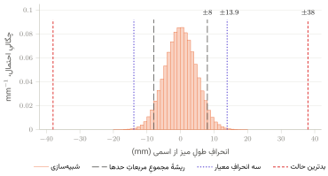
تفسیر. (الف) طولِ اسمی 14 982 mm؛ بدترین حالت ±38 mm؛ ریشهٔ مجموعِ مربعات ±8 mm. (ب) فاصلهٔ آزادِ اسمی 68 mm است و در بدترین حالت (ردیف 38 mm بلندتر، ریل 5 mm کوتاهتر) هنوز 25 mm میماند؛ پس طرح حتی با بدترین حالت کار میکند و نیازی به فرضِ آماری نیست. (پ) شبیهسازی نشان میدهد ۹۹٫۷۳ درصدِ میزها در ±13.7 mm اند، نه ±8 mm. علت: شبیهسازی فرض کرده هر قطعه یکنواخت در گسترهٔ رواداریاش پخش است (فرایندی که بیهدف همهٔ گستره را پر میکند)، در حالی که فرمولِ ریشهٔ مجموعِ مربعات فرض میکند حدِ رواداری سه انحرافِ معیار از یک توزیعِ نرمال است (فرایندی خوب کنترلشده). انحرافِ معیارِ توزیعِ یکنواخت \(t/\sqrt{3}\) است، نه \(t/3\)؛ پس اگر کارخانه فقط «در رواداری» بسازد و نه «در مرکزِ رواداری»، روشِ آماری بیش از حد خوشبین است. درس: پیش از بهکار بردنِ \(t_\text{RSS}\) بپرسید توزیعِ واقعیِ قطعهها چیست؛ این پرسش را توانِ فرایند (فصلِ ۴) پاسخ میدهد.
وارسی. با ۲۵ جزء، \(t_\text{RSS}\) باید خیلی کمتر از \(t_\text{WC}\) باشد (\(\sqrt{25} = 5\) برابر برای جزءهای برابر)؛ اینجا \(38/8 \approx 4.8\) (درست).
کِی کدام روش؟ وقتی خطا گران یا خطرناک است (تداخلِ قطعههای ایمنی، فاصلهٔ عایقی، جاگذاریِ پیچهای سازهای)، یا تعدادِ قطعهها کم است، بدترین حالت را بهکار ببرید. وقتی تعدادِ قطعهها زیاد است، فرایندِ ساخت پایدار و متمرکز است و اندکی ردِ قطعه در مونتاژ پذیرفتنی است، روشِ آماری طرح را ارزانتر میکند. در هر حال، فرضِ روش را در برگهٔ محاسبه بنویسید. فصلِ ۴ رواداریهای نقشه، انطباقها و توانِ فرایند را کامل میکند.
- «550 W با رواداریِ 0 W تا +5 W» یعنی چه؟ چرا سازنده رواداریِ منفی نمیدهد؟
- فرقِ رواداری، خطا و عدمِ قطعیت را با مثالِ پهنای ماژول توضیح دهید.
- چهار قطعهٔ پشتِ سرِ هم هر کدام ±0.5 mm رواداری دارند. انباشت را به دو روشِ فرمولی حساب کنید.
- چرا روشِ ریشهٔ مجموعِ مربعات برای دو قطعه تقریباً همان بدترین حالت را میدهد و برای صد قطعه خیلی کمتر؟
- در مثال 2.18 اگر رواداریِ ماژول ±4 mm بود، آیا طرح در بدترین حالت هنوز کار میکرد؟
- چه پیشفرضی باید درست باشد تا بتوان به \(t_\text{RSS}\) اعتماد کرد؟
2.3.5 قراردادهای مختصات، جهت، علامت و زمان
شهود. «باد از جنوب میوزد» و «باد به جنوب میوزد» یک کلمه فرق دارند و دو جهتِ مخالف را میگویند. «توانِ منفی در نقطهٔ اتصال» در یک نرمافزار یعنی نیروگاه برق میفروشد و در نرمافزارِ دیگر یعنی میخرد. «ساعتِ ۱۲» در دادهٔ یک کنتور ممکن است ساعتِ ۱۱ تا ۱۲ باشد و در دادهٔ دیگری ۱۲ تا ۱. هیچکدام از اینها «غلط» نیست؛ هر کدام یک قرارداد است. خطا وقتی رخ میدهد که دو قرارداد بیصدا با هم قاطی شوند. پس قاعدهٔ این بخش ساده است: قرارداد را انتخاب کنید، بنویسید، و در هر مرزِ داده وارسی کنید.
2.3.5.1 مختصات و جهت
محورها. در کارهای ساختگاه، دستگاهِ مختصاتِ راستگردِ شرق-شمال-بالا (به انگلیسی East-North-Up, ENU) رایج است: محورِ \(x\) به سوی شرق، \(y\) به سوی شمال، \(z\) رو به بالا. نقشههای مهندسی ممکن است مبدأ و جهتِ دیگری داشته باشند (مختصاتِ کارگاهی، شبکهٔ نقشهبرداری)؛ هر نقشه باید دستگاهش را بگوید (فصلهای ۱۴ و ۲۹).
سه شمال. شمالِ جغرافیایی (به سوی قطبِ زمین)، شمالِ مغناطیسی (آنچه قطبنما نشان میدهد) و شمالِ شبکهٔ نقشه (جهتِ محورِ \(y\) در یک تصویرِ نقشهبرداری) چند درجه با هم فرق دارند و این فرق با مکان و زمان تغییر میکند. بادنمای دکل اگر با قطبنما جهت داده شود و اصلاح نشود، همهٔ جهتهای باد را با یک خطای ثابت ثبت میکند؛ یک خطای سامانمند کلاسیک (بخش 2.4.1).
سمت (به انگلیسی azimuth). قراردادِ نیروگاهِ P (فرضِ A-023): سمت از شمالِ جغرافیایی، ساعتگرد، بر حسبِ درجه سنجیده میشود؛ شمال صفر، شرق ۹۰، جنوب ۱۸۰، غرب ۲۷۰. آرایهای که رو به جنوب است سمتِ ۱۸۰ درجه دارد. هشدار: برخی نرمافزارهای خورشیدی سمت را از جنوب میسنجند (جنوب صفر، شرق منفی)؛ پیش از وارد کردنِ هر عدد، قراردادِ نرمافزار را بخوانید.
جهتِ باد. در هواشناسی و مهندسیِ باد، جهتِ باد جهتی است که باد از آن میآید، با همان قراردادِ سمت (شکل 2.7). «بادِ ۱۶۳ درجه» از جنوب-جنوبشرق میآید و به سوی شمال-شمالغرب میرود. برای جمع کردن یا میانگین گرفتن، تندی و جهت را به دو مؤلفه تجزیه میکنیم: مؤلفهٔ شرقی \(u\) و مؤلفهٔ شمالیِ \(v_\text{N}\) (جهتِ حرکتِ هوا):
\[ u = -V\sin\theta_\text{w},\qquad v_\text{N} = -V\cos\theta_\text{w} \tag{2.7}\]
که \(V\) تندی و \(\theta_\text{w}\) جهتِ «از» است. علامتِ منفی از همان «از» میآید: بادی که از جنوب (\(\theta_\text{w} = 180^\circ\)) میآید، به سوی شمال حرکت میکند و \(v_\text{N}\) مثبت دارد.
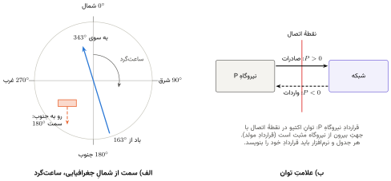
مثال 2.19 (مؤلفههای باد و میانگینِ جهت) پرسش. (الف) نخستین ساعتِ بستهٔ داده (1.0.0، ساختگی) بادِ 4.44 m/s از 163° دارد. باد به کدام سو میرود و مؤلفههایش چیست؟ (ب) میانگینِ دو جهتِ 350° و 10° چیست؟
پاسخ.
first hour of the data pack: 4.44 m/s from 163 deg (FROM, clockwise from
north)
blows towards 343 deg; components u (east) = -1.298 m/s, v (north) = +4.246
m/s
check: sqrt(u^2 + v^2) = 4.44 m/s
directions 350 and 10 deg: arithmetic mean 180 deg (wrong); vector mean 0 degتفسیر. (الف) \(u\) منفی (به سوی غرب) و \(v_\text{N}\) مثبت (به سوی شمال)؛ باد به سوی 343° میرود، یعنی شمال-شمالغرب (درست). (ب) میانگینِ حسابیِ ۳۵۰ و ۱۰ میشود ۱۸۰ (جنوب!)، در حالی که هر دو جهت تقریباً شمالاند. جهت کمیتی دایرهای است: ۳۶۰ و صفر یکیاند. میانگینِ درست میانگینِ برداری است: میانگینِ سینوسها و کسینوسها، سپس زاویهٔ حاصل. درس: میانگینگیری از جهت با فرمولِ معمولی یکی از رایجترین خطاهای پردازشِ دادهٔ باد است و در گلِ باد (فصلِ ۱۳) و چیدمانِ توربینها (فصلِ ۱۴) اثر میگذارد.
2.3.5.2 علامتِ توان
قراردادِ مولد و قراردادِ مصرفکننده. وقتی میگوییم «توانِ نقطهٔ اتصال \(+40\ \text{MW}\) است»، باید گفت مثبت یعنی کدام جهت. قراردادِ مولد توانِ بیرونرونده از دستگاه را مثبت میگیرد؛ قراردادِ مصرفکننده توانِ درونرونده را. قراردادِ نیروگاهِ P (فرضِ A-024): توانِ اکتیو در نقطهٔ اتصال با جهتِ صادرات (از نیروگاه به شبکه) مثبت است. مصرفِ شبانهٔ تجهیزاتِ کمکی وقتی نیروگاه تولید ندارد، پس منفی است. علامتِ توانِ راکتیو قراردادِ جداگانهای میخواهد که در فصلهای ۷ و ۲۷ تعیین میشود؛ تا آن زمان آن را در دفترِ مجهولها نگه میداریم. همین پرسش برای باتری هم هست: «توانِ باتری \(+20\)» یعنی شارژ یا دشارژ؟ در این کتاب دشارژ مثبت است (باتری مثلِ یک مولد دیده میشود)، و هر جدولِ باتری این را تکرار میکند.
2.3.5.3 زمان
منطقهٔ زمانی. همهٔ برچسبهای زمانِ بستهٔ داده وقتِ استانداردِ محلی با اختلافِ ثابتِ +04:00 از زمانِ هماهنگشدهٔ جهانی (UTC) اند، بی تغییرِ ساعتِ تابستانی (فرضِ A-003). ساعتِ تابستانی، اگر در کشوری اجرا شود، سالی دو بار یک ساعت تکراری یا گمشده میسازد؛ دادهٔ ساعتیای که بیاعتنا به آن ذخیره شود، دو بار در سال خراب است (فصلِ ۵).
برچسبِ بازه. دادهٔ ساعتی میانگینِ یک بازه است، اما فقط یک برچسبِ زمان دارد. این برچسب ممکن است آغازِ بازه باشد (بستهٔ داده: «01:00» یعنی ۱ تا ۲) یا پایانِ آن (بسیاری از کنتورها: «02:00» یعنی ۱ تا ۲). شکل 2.8 این را نشان میدهد. مثال 2.12 نشان داد که جابهجاییِ یکساعته جمعِ سالانه را عوض نمیکند ولی هر مقایسهٔ ساعتی را خراب میکند.
نوشتنِ زمان. این کتاب و بستهٔ داده زمان را به شکلِ استانداردِ ISO 8601 مینویسند: 2023-01-01T01:00:00+04:00، یعنی سال-ماه-روز، حرفِ T، ساعت:دقیقه:ثانیه و اختلاف با UTC. این شکل سه مزیت دارد: بیابهام است (روز و ماه جابهجا نمیشوند)، بهترتیبِ حروف مرتب میشود (پس نامِ پروندهها را هم با تاریخِ همین شکل بنویسید)، و منطقهٔ زمانی را همراه دارد. تقویمِ رسمیِ ایران و افغانستان (هجریِ شمسی) در گزارشها جای خود را دارد، اما دادهٔ ماشینی با یک تقویم و یک قالب ذخیره میشود و تبدیل فقط هنگامِ نمایش انجام میشود.
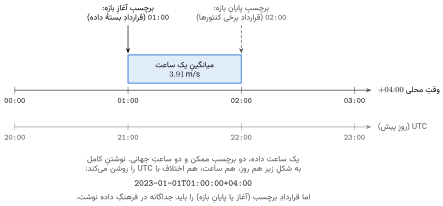
مثال 2.20 (یک برچسب، سه خوانش) پرسش. کنتورِ نقطهٔ اتصال سطری با برچسبِ «2023-06-23 13:00، 61.2 MWh» فرستاده است و فرهنگِ دادهٔ کنتور میگوید برچسبها «پایانِ بازه، به وقتِ UTC» اند. این سطر با کدام سطرِ بستهٔ داده مقایسه میشود؟
پاسخ. «پایانِ بازه در ۱۳:۰۰» یعنی بازهٔ ۱۲:۰۰ تا ۱۳:۰۰ به وقتِ UTC. به وقتِ محلیِ +04:00 این بازه ۱۶:۰۰ تا ۱۷:۰۰ است، و در قراردادِ «آغازِ بازه»ِ بستهٔ داده برچسبش 2023-06-23T16:00:00+04:00 میشود. دو خطای ممکن: اگر منطقهٔ زمانی نادیده گرفته شود، چهار ساعت خطا؛ اگر قراردادِ برچسب نادیده گرفته شود، یک ساعت. وارسی: در ساعتِ ۱۶ تا ۱۷ بعدازظهرِ تابستان توانِ خورشیدی باید کاهشی باشد؛ مقایسهٔ شکلِ روزانهٔ کنتور با مدل بهترین آزمونِ همترازیِ زمانی است.
2.3.5.4 برگهٔ قراردادهای نیروگاهِ P
همهٔ این قراردادها را یک جا ثبت میکنیم. جدول 2.9 نخستین نسخهٔ «برگهٔ قراردادها»ست که با شمارهٔ PLP-GEN-SPC-0001 وارد پروندهٔ نیروگاه میشود (بخش 2.11).
| موضوع | قراردادِ نیروگاهِ P | شناسه |
|---|---|---|
| یکاها | SI؛ kWh تا GWh برای انرژی؛ یکا در سرستونِ هر داده | A-026 |
| ظرفیتِ خورشیدی | MWp فقط برچسبِ ظرفیتِ DC؛ در محاسبه \(P_\text{STC}\) | A-026 |
| سمت | از شمالِ جغرافیایی، ساعتگرد، درجه | A-023 |
| جهتِ باد | جهتِ «از»، با همان قراردادِ سمت؛ میانگینِ برداری | A-023 |
| علامتِ توانِ اکتیو | در نقطهٔ اتصال صادرات مثبت؛ دشارژِ باتری مثبت | A-024 |
| علامتِ توانِ راکتیو | تعیین در فصلهای ۷ و ۲۷ | U-015 |
| زمان | ISO 8601 با +04:00، بی ساعتِ تابستانی؛ برچسبِ آغازِ بازه | A-003، A-025 |
| ضریبِ ظرفیت | هر فناوری بر ظرفیتِ AC خودش، نیروگاه بر سقفِ اتصال؛ ساعتها از داده | A-027 |
| اعداد | ممیز نقطه؛ نتیجه با رقمهای متناسب با عدمِ قطعیت | — |
- باد از 270° با تندیِ 8 m/s میوزد. \(u\) و \(v_\text{N}\) را حساب کنید.
- میانگینِ برداریِ جهتهای 80°، 90° و 100° چیست؟ میانگینِ حسابی چطور؟ چرا اینجا برابرند و در مثال 2.19 نه؟
- آرایهای در نرمافزاری که سمت را از جنوب میسنجد سمتِ \(-20^\circ\) دارد. در قراردادِ نیروگاهِ P سمتش چیست؟
- اگر بادنمای دکل با قطبنما جهت داده شده و اختلافِ شمالِ مغناطیسی و جغرافیایی ۵ درجه باشد، چه نوع خطایی در دادهٔ جهت پدید میآید؟
- در قراردادِ مولد، توانِ نقطهٔ اتصال در شبی بیباد چه علامتی دارد؟ چرا؟
2023-03-21T00:00:00+04:00به وقتِ UTC چه زمانی است؟- چرا نامِ پروندهها را با تاریخِ «سال-ماه-روز» مینویسیم و نه «روز-ماه-سال»؟
- دادهٔ یک کنتور برچسبِ پایانِ بازه دارد. برای همترازی با بستهٔ داده، برچسبها را چطور جابهجا میکنید؟
2.3.6 آزمونهای معقول بودن و حالتهای حدی
شهود. مهندسِ باتجربه پیش از دیدنِ جوابِ یک محاسبه، بزرگیِ آن را حدس میزند. اگر جواب ده برابر حدسش باشد، جواب را باور نمیکند تا علتِ اختلاف را بیابد. این عادت ارزانترین و کارآمدترین محافظِ مهندسی است، و به ریاضیاتِ پیشرفته نیاز ندارد؛ به حسِ عدد نیاز دارد، که با تمرین ساخته میشود.
پنج آزمون.
- برآوردِ مرتبهٔ بزرگی (به انگلیسی order-of-magnitude estimate): با عددهای گرد و ساده پاسخ را تا ضریبِ دو یا سه تخمین بزنید.
- کرانها: پاسخ باید در محدودهٔ ممکنِ فیزیکی باشد: ضریبِ ظرفیت میانِ صفر و یک؛ بازده کمتر از یک؛ ضریبِ توانِ روتور کمتر از \(16/27\)؛ توانِ خورشیدی کمتر از شدتِ تابش ضربِ مساحت؛ انرژیِ صادراتی کمتر از سقفِ اتصال ضربِ ساعتهای سال.
- حالتهای حدی: فرمول را در حالتهایی بیازمایید که جوابشان را میدانید: تندیِ صفر باید توانِ صفر بدهد؛ طولِ صفرِ کابل افتِ صفر؛ بازدهِ یک تلفاتِ صفر.
- روند: اگر ورودی زیاد شود، خروجی باید در جهتِ درست تغییر کند. تابشِ بیشتر، تولیدِ بیشتر؛ کابلِ ضخیمتر، افتِ کمتر.
- پایستگی و تقارن: انرژیِ ورودی باید با انرژیِ خروجی بهاضافهٔ تلفات برابر باشد؛ جمعِ سهمها باید کل را بدهد؛ دو جزءِ همسان باید نتیجهٔ یکسان بدهند.
یک آزمونِ ششم هم هست که باید با احتیاط بهکار رود: مقایسه با مقدارهای رایج. اینکه ضریبِ ظرفیتِ خورشیدیِ زمیننصب معمولاً بیست و چند درصد است، کمک میکند خطای بزرگ را ببینیم؛ اما «رایج» شاهد نیست، و پروژهای که از میانگین بهتر یا بدتر است لزوماً غلط نیست. مقدارِ رایج پرسش میسازد، نه پاسخ.
مثال 2.21 (نیروگاهِ P در سی ثانیه) پرسش. پیش از هر مدل، تولیدِ سالانهٔ نیروگاهِ P را با عددهای گرد تخمین بزنید و کرانِ بالای انرژیِ صادراتی را بدهید. سپس با نتیجهٔ مدلِ غربالگریِ فصلِ ۱ مقایسه کنید.
پاسخ.
order-of-magnitude estimate before any model:
PV: 60 MWp x 1600 kWh/kWp = 96 GWh
wind: 60 MW x 8760 h x 0.35 = 184 GWh
sum ~ 280 GWh
upper bound: 100 MW x 8760 h = 876 GWh (export limit all year)
screening model of chapter 1: 289.8 GWh (+4 % from the estimate)تفسیر. تخمینِ سیثانیهای فقط ۴ درصد با مدل فاصله دارد؛ این تصادف نیست، چون هر دو از فرضهای مشابه (بازدهِ AC خورشیدی حدودِ 1600 kWh/kWp، ضریبِ ظرفیتِ بادیِ حدودِ ۰٫۳۵) میآیند. ارزشِ تخمین در پیدا کردنِ خطاهای بزرگ است: اگر مدل 29 GWh یا 2900 GWh داده بود، تخمین فوراً آن را رد میکرد. اما تخمین نمیتواند خطای دهدرصدی را بیابد؛ برای آن وارسیِ مستقل لازم است (بخش 2.5.5).
مثال 2.22 (چهار ادعا، چهار کران) پرسش. کدام ادعا ناممکن است؟ (الف) «مزرعهٔ بادیِ 60 MW ما سالانه 600 GWh تولید میکند.» (ب) «ضریبِ توانِ روتورِ ما در تندیِ 8 m/s برابرِ 0.62 است.» (پ) «ماژولِ 550 W در شدتِ تابشِ 1000 W/m² 600 W تولید کرد.» (ت) «با افزایشِ مقطعِ کابل از 240 به 300 mm²، افتِ ولتاژ بیشتر شد.»
پاسخ. (الف) کرانِ بالا \(60\ \text{MW} \times 8760\ \text{h} = 525.6\ \text{GWh}\) است (بخش 2.2.4.1)؛ 600 GWh یعنی ضریبِ ظرفیتِ \(1.14\): ناممکن. (ب) بیشتر از حدِ بتز \(0.593\): ناممکن برای روتورِ آزاد. (پ) مساحتِ ماژول \(2.278 \times 1.134 = 2.583\ \text{m}^2\) است و تابشِ رسیده \(2583\ \text{W}\)؛ بازدهِ \(600/2583 = 23.2\,\%\) از نظرِ فیزیکی ناممکن نیست، اما با بازدهِ 21.29 % برگهٔ داده و رواداریِ +5 W نمیخواند: مشکوک؛ یا اندازهگیری خطا دارد یا شرایط استاندارد نبوده (مثلاً سلول سردتر از 25 °C). (ت) خلافِ روند؛ افت با \(1/A\) کم میشود: غلط، مگر جریان یا طول هم تغییر کرده باشد. درس: آزمونِ کران سه پاسخ دارد: «ناممکن»، «مشکوک» و «سازگار»؛ دومی پرسش میسازد، نه حکم.
- بدونِ ماشینحساب: انرژیِ سالانهٔ یک آرایهٔ 10 MWp در ساختگاهی مشابهِ نیروگاهِ P چند گیگاواتساعت است؟
- یک گزارش ضریبِ ظرفیتِ اتصالِ نیروگاهِ P را 0.41 داده است. با کدام کران یا آزمون آن را میسنجید؟
- فرمولِ تلفاتِ فیدر \(P_\text{loss} = R_\text{c} I^2\) را با سه حالتِ حدی بیازمایید.
- چرا «مقدارِ رایج» شاهد نیست؟ مثالی بزنید که پروژهای درست، از مقدارِ رایج دور باشد.
- جمعِ تولیدِ ماهانهٔ یک گزارش 291.2 GWh و عددِ سالانهٔ همان گزارش 289.8 GWh است. کدام آزمون شکست خورده و چه چیزی را باید وارسی کرد؟
- اگر با دو برابر کردنِ تعدادِ توربینها تولید بیش از دو برابر شود، چه چیزی مشکوک است؟
2.4 پ. اندازهگیری و سوابقِ عدمِ قطعیت
2.4.1 واژگانِ اندازهگیری
شهود. فرض کنید تندیِ باد را با دو بادسنجِ کنارِ هم اندازه میگیرید. یکی 7.12 m/s نشان میدهد و دیگری 7.31 m/s. تندیِ «واقعی» چقدر است؟ پاسخِ صادقانه این است: نمیدانیم، اما میتوانیم بگوییم چقدر مطمئنیم. همهٔ این بخش دربارهٔ همین «چقدر» است. برای حرف زدن دربارهٔ آن، به واژگانی دقیق نیاز داریم؛ واژگانی که مرجعِ بینالمللیاش واژهنامهٔ بینالمللیِ اندازهشناسی (VIM، بخش 2.10) است. در فارسیِ روزمره «دقت» برای همهچیز بهکار میرود؛ در این کتاب واژهها را مثلِ جدول 2.10 جدا میکنیم.
| واژه | معنا | نمونه در نیروگاهِ P |
|---|---|---|
| کمیتِ مورد اندازهگیری (measurand) | کمیتی که میخواهیم بدانیم، با تعریفِ کامل | میانگینِ دهدقیقهایِ تندیِ افقیِ باد در 100 m |
| نتیجهٔ اندازهگیری | بهترین برآورد بههمراهِ عدمِ قطعیت | 7.25 ± 0.06 m/s |
| خطا (error) | اختلافِ مقدارِ اندازهگیریشده با مقدارِ واقعی؛ هرگز دقیق معلوم نیست | — |
| خطای سامانمند | بخشی از خطا که در تکرار ثابت میماند یا قابلِ پیشبینی تغییر میکند | بادنمای ۵ درجه چرخیده |
| خطای تصادفی | بخشی که در تکرار بهطورِ پیشبینیناپذیر تغییر میکند | نوسانِ خوانشِ حسگرِ دما |
| صحت (accuracy) | نزدیکیِ یک نتیجه به مقدارِ واقعی (مفهومی کیفی) | — |
| درستی (trueness) | نزدیکیِ میانگینِ نتیجههای بسیار به مقدارِ مرجع | پس از کالیبراسیون بهتر میشود |
| دقت (precision) | نزدیکیِ نتیجههای تکراری به یکدیگر | پراکندگیِ ده خوانش |
| تکرارپذیری | دقت با همان ابزار، کاربر و شرایط، در زمانِ کوتاه | ده خوانشِ پیاپی |
| تجدیدپذیری | دقت با ابزار، کاربر، مکان یا زمانِ متفاوت | دو آزمایشگاه، یک ماژول |
| تفکیکپذیری (resolution) | کوچکترین تغییری که نمایشگر نشان میدهد | رقمِ آخرِ 0.1 A |
| گسترهٔ اندازهگیری | بازهای که ابزار در آن با مشخصاتِ اعلامشده کار میکند | بادسنج تا 50 m/s |
| حساسیت | تغییرِ خروجی به ازای تغییرِ ورودی | 8.62 µV به ازای 1 W/m² |
| رانش (drift) | تغییرِ آهستهٔ پاسخِ ابزار با زمان | فرسودگیِ یاتاقانِ بادسنج |
| پسماند (hysteresis) | پاسخِ متفاوت در افزایش و کاهشِ ورودی | حسگرِ رطوبت |
| زمانِ پاسخ | زمانی که ابزار برای رسیدن به مقدارِ تازه لازم دارد | دماسنجِ پشتِ ماژول |
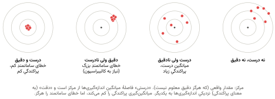
دو نکتهٔ کلیدی. (۱) میانگینگیری خطای تصادفی را کم میکند، خطای سامانمند را هرگز. ده هزار خوانش با بادنمای چرخیده، میانگینی بسیار «دقیق» اما همچنان نادرست میدهند (شکل 2.9، هدفِ دوم). خطای سامانمند را فقط با مقایسه با مرجع (کالیبراسیون) یا با دانستنِ سازوکارِ خطا میتوان یافت و اصلاح کرد. (۲) کمیتِ مورد اندازهگیری باید کامل تعریف شود. «تندیِ باد» کافی نیست: در چه ارتفاعی؟ میانگینِ چه بازهای؟ مؤلفهٔ افقی یا کل؟ پیش از اصلاحِ اثرِ سایهٔ دکل یا پس از آن؟ نیمی از اختلافهای میانِ دو گزارش از اینجا میآید که دو کمیتِ متفاوت را با یک نام خواندهاند.
مثال 2.23 (خطاهای یک بادسنج) پرسش. این پدیدهها روی دادهٔ بادسنجِ فنجانیِ دکلِ نیروگاهِ P اثر میگذارند. هر کدام کدام نوعِ خطا را میسازد و با میانگینگیری کم میشود یا نه؟ (الف) یخزدگیِ فنجانها در یک صبحِ زمستانی؛ (ب) تلاطمِ باد؛ (پ) سایهٔ دکل وقتی باد از پشتِ دکل میوزد؛ (ت) گرد کردنِ ثبتکننده به 0.1 m/s؛ (ث) فرسودگیِ یاتاقان در دو سال.
پاسخ. (الف) سامانمند و موقت: تندی را کم نشان میدهد یا صفر؛ میانگینگیری کمکی نمیکند؛ باید با دمای هوا و مقایسه با بادسنجِ دیگر پرچمگذاری شود (بخش 2.4.6). (ب) تغییرپذیریِ واقعیِ باد است، نه خطا؛ اما میانگینِ دهدقیقهای را نامطمئنتر میکند؛ با بازهٔ طولانیتر کم میشود. (پ) سامانمند و وابسته به جهت؛ میانگینگیری کم نمیکند؛ با چیدمانِ بازوی نصب و حذفِ بخشِ آسیبدیدهٔ جهتها کنترل میشود (فصلِ ۱۳). (ت) تفکیکپذیری: خطای هر خوانش حداکثر ±0.05 m/s است و در میانگینِ خوانشهای بسیار تا حدِ زیادی خنثی میشود. (ث) رانشِ آهسته و سامانمند؛ فقط با کالیبراسیونِ دوباره یا مقایسه با بادسنجِ مرجع دیده میشود. درس: پیش از میانگین گرفتن بپرسید خطا از کدام نوع است.
- فرقِ «صحت»، «درستی» و «دقت» را با مثالِ دو بادسنج توضیح دهید.
- چرا میانگینِ ده هزار خوانش خطای سامانمند را کم نمیکند؟
- کمیتِ مورد اندازهگیریِ «توانِ نیروگاه» را کامل تعریف کنید: کجا، چه بازهای، چه نوع توانی، با چه علامتی؟
- تفکیکپذیریِ 0.01 A یعنی ابزار تا 0.01 A درست است؟ چرا نه؟
- برای رانش و پسماند هر کدام یک نمونه از ابزارهای نیروگاه بزنید.
- دو آزمایشگاه توانِ یک ماژول را 552.1 و 548.4 W اندازه گرفتهاند. این اختلاف به تکرارپذیری مربوط است یا تجدیدپذیری؟
2.4.2 خواندنِ مشخصاتِ دقتِ ابزار
قالبهای رایج. برگهٔ دادهٔ ابزار دقت را به یکی از این شکلها میدهد:
- درصدِ عددِ خواندهشده بهاضافهٔ چند رقم: «±(1.5 % + 5 digits)»؛ «رقم» یعنی واحدِ آخرین رقمِ نمایشگر در گسترهٔ انتخابشده.
- درصدِ تمامِ مقیاس: «±0.5 % FS»؛ یعنی خطای مطلقِ ثابت در کلِ گستره، که در عددهای کوچک درصدِ بزرگی از خوانش میشود.
- ردهٔ دقت: یک عدد که در استانداردِ آن ابزار تعریف شده است. نمونهها: کنتورهای انرژیِ الکتریکی در ردههایی مثلِ 0.2S و 0.5S ساخته میشوند که استانداردِ IEC 62053-22 تعریفشان میکند؛ حسگرهای تابش (پیرانومترها) در ردههای A، B و C از استانداردِ ISO 9060 دستهبندی میشوند (بخش 2.10). عددِ رده خلاصهٔ مجموعهای از آزمونها و حدهاست، نه یک «درصدِ خطا» در همهٔ شرایط؛ حدهای دقیق و شرایطشان در متنِ استاندارد است.
در هر سه، عددِ برگهٔ داده معمولاً حدِ خطا است، نه انحرافِ معیار. اگر توزیعی گفته نشده باشد، آن را نیمپهنای یک توزیعِ مستطیلی میگیریم و عدمِ قطعیتِ استاندارد را \(a/\sqrt{3}\) مینویسیم (بخش 2.4.5).
مثال 2.24 (یک ابزار، شش خوانش) پرسش. آمپرمترِ انبریِ DC کارگاه در گسترهٔ 600.0 A دقتِ فرضیِ «±(1.5 % of reading + 5 digits)» دارد و رقمِ آخرش 0.1 A است. حدِ خطا را برای خوانشهای 600، 343، 100، 34.3، 10 و 3 A بیابید. اگر بخواهیم جریانِ یک رشته (حدودِ 13 A) را بسنجیم، این گستره مناسب است؟
پاسخ.
clamp meter, 600.0 A range, +-(1.5 % of reading + 5 digits), digit 0.1 A
(assumed spec)
reading 600.0 A: limit +- 9.50 A = +- 1.58 % of reading; u = 5.48 A
reading 343.0 A: limit +- 5.64 A = +- 1.65 % of reading; u = 3.26 A
reading 100.0 A: limit +- 2.00 A = +- 2.00 % of reading; u = 1.15 A
reading 34.3 A: limit +- 1.01 A = +- 2.96 % of reading; u = 0.59 A
reading 10.0 A: limit +- 0.65 A = +- 6.50 % of reading; u = 0.38 A
reading 3.0 A: limit +- 0.55 A = +-18.17 % of reading; u = 0.31 A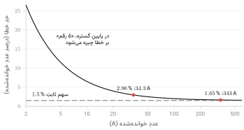
تفسیر. در بالای گستره خطای نسبی نزدیکِ همان 1.5 % است، اما در 3 A به 18 % میرسد، چون «۵ رقم» یعنی 0.5 A ثابت (شکل 2.10). برای جریانِ یک رشته (13 A) حدِ خطا حدودِ 5 % است: برای مقایسهٔ رشتهها با هم (که اختلافشان ممکن است ۲ یا ۳ درصد باشد) ناکافی. قاعده: گسترهٔ ابزار را طوری انتخاب کنید که خوانش در یکسومِ بالایی گستره باشد، و پیش از اندازهگیری بپرسید: «آیا حدِ خطای ابزار از اثری که دنبالش هستم کوچکتر است؟» این همان پرسشی است که فصلِ ۶ برای اندازهگیریِ ولتاژِ رشته پرسید.
گستره، اشباع و تفکیکپذیریِ تبدیل. هر ابزار بیرون از گسترهاش یا اشباع میشود (عددِ سقف را نشان میدهد) یا رفتارش تعریفنشده است. اشباعِ بیصدا خطرناک است، چون داده «عادی» به نظر میرسد: بادسنجی که در طوفان در عددِ سقف میماند، بیشینهٔ تندی را کمبرآورد میکند. در سامانههای پایش، سیگنالِ حسگر اغلب به حلقهٔ جریانِ ۴ تا ۲۰ میلیآمپر تبدیل و سپس با یک مبدلِ آنالوگ به دیجیتال خوانده میشود. هر دو بر تفکیکپذیری اثر دارند:
مثال 2.25 (از میلیآمپر تا درجهٔ سلسیوس) پرسش. یک فرستندهٔ دما گسترهٔ −40 تا +60 °C را به 4 تا 20 mA تبدیل میکند (فرضی). (الف) خوانشِ 12.00 mA چند درجه است؟ (ب) اگر ثبتکننده جریان را با تفکیکپذیریِ 0.01 mA بخواند، تفکیکپذیریِ دما چیست؟ (پ) چرا گسترهٔ سیگنال از 4 شروع میشود و نه صفر؟ (ت) مبدلهای ۱۲ و ۱۶ بیتی روی گسترهٔ 0 تا 2000 W/m² چه گامی دارند؟
پاسخ. رابطهٔ خطی: \(T = T_\text{min} + \dfrac{I - 4\ \text{mA}}{16\ \text{mA}}\,(T_\text{max} - T_\text{min})\).
temperature transmitter, 4-20 mA = -40..+60 degC (assumed)
12.00 mA -> 10.0 degC; 4.00 mA -> -40.0 degC; 20.00 mA -> 60.0 degC
sensitivity 6.25 degC per mA; 0.01 mA resolution = 0.0625 degC
0 mA is outside 4-20 mA: a broken wire is detected (live zero)
16-bit converter over 0..2000 W/m2: step = 2000 / 65536 = 0.0305 W/m2
12-bit converter over the same range: step = 0.488 W/m2تفسیر. (پ) «صفرِ زنده»: اگر سیم قطع شود، جریان صفر میشود که بیرون از گسترهٔ معتبر است و سامانه میفهمد حسگر خراب است؛ اگر گستره از صفر شروع میشد، سیمِ قطع با دمای −40 °C اشتباه میشد. (ت) مبدلِ ۱۶ بیتی گامی بسیار ریزتر از عدمِ قطعیتِ خودِ پیرانومتر دارد؛ پس تفکیکپذیریِ مبدل محدودیتِ اصلی نیست. اما مبدلِ ۱۲ بیتی گامِ نیم وات بر مترمربع دارد که در صبح و عصر محسوس است. درس: زنجیرِ اندازهگیری از حسگر تا پرونده چند حلقه دارد و هر حلقه تفکیکپذیری و خطای خودش را میافزاید.
2.4.2.1 کنتورهای فروش و زنجیرِ اندازهگیری
انرژیِ فروختهشدهٔ نیروگاهِ P را کنتورِ فروش در نقطهٔ اتصال میسنجد. کنتور ولتاژ و جریانِ 132 kV را مستقیم نمیبیند؛ ترانسفورماتورِ جریان (CT) و ترانسفورماتورِ ولتاژ (VT) آنها را به سطحِ کوچکِ قابلِ اندازهگیری میآورند. هر حلقهٔ این زنجیر خطای خودش را دارد و خطای انرژی ترکیبی از همه است. اینکه کدام رده لازم است، کنتور کجا نصب شود، چه کسی آن را کالیبره و پلمب کند و نتیجهاش چطور برای تسویه پذیرفته شود را قراردادِ اتصال، قواعدِ بازار و مرجعِ اندازهگیریِ قانونی تعیین میکنند، نه طراح (فصلهای ۲۳، ۳۴ و ۵۵ تا ۵۷).
مثال 2.26 (زنجیرِ کنتورِ فروش) پرسش. فرض کنید هر سه حلقهٔ زنجیر حدِ خطای 0.2 % دارند (مقدارِ آموزشی). حدِ خطای انرژیِ اندازهگیریشده را به دو روشِ بدترین حالت و ریشهٔ مجموعِ مربعات بیابید و آن را به گیگاواتساعتِ سالانه و پولِ سالانه (با قیمتِ ساختگیِ ۴۵ واحد پول بر مگاواتساعت) برگردانید.
پاسخ.
revenue metering chain: CT 0.2 %, VT 0.2 %, meter 0.2 % (teaching limits)
worst case 0.6 %; root-sum-square 0.35 %
on 289.8 GWh/yr: worst case 1.74 GWh, RSS 1.00 GWh per year
at 45 currency units per MWh (fictional): 45,175 units per yearتفسیر. حدودِ یک گیگاواتساعت در سال، یعنی حدودِ ۴۵ هزار واحد پول، فقط از عدمِ قطعیتِ اندازهگیری. این عدد کوچک به نظر میرسد، اما در طولِ عمرِ نیروگاه و در هر دو سوی قرارداد جمع میشود؛ به همین دلیل کنتورِ فروش در هر دو طرف (فروشنده و خریدار) گاهی تکرار میشود و ردهٔ دقتش در قرارداد میآید. وارسی: روشِ ریشهٔ مجموعِ مربعات برای سه جزءِ برابر \(\sqrt3 \approx 1.73\) برابرِ یک جزء است: \(0.35\) (درست). محدودیت: اینجا ردهٔ دقت را حدِ خطای ثابت گرفتیم؛ در واقع خطای کنتور به بار، ضریبِ توان، دما و هارمونیکها بستگی دارد و حدهای واقعی در استاندارد و گواهیِ آزمونِ هر کنتور است.
نمونهبرداری و میانگینگیری. ثبتکنندهٔ دکلِ باد معمولاً هر ثانیه یک نمونه میگیرد و هر ده دقیقه میانگین، انحرافِ معیار، کمینه و بیشینه را ذخیره میکند. نسبتِ انحرافِ معیار به میانگین، شدتِ تلاطم است که در طراحیِ توربین و سنجشِ بار بهکار میرود (فصلهای ۱۱ و ۱۳). دو نکته: (۱) نمونهبرداری باید آنقدر تند باشد که تغییراتِ مهم را از دست ندهد؛ نمونهبرداریِ کُند از پدیدهای تند میتواند الگوهای جعلی بسازد (پدیدهٔ «همنامی»، فصلِ ۵). (۲) میانگینِ دهدقیقهای و میانگینِ ساعتی دو کمیتِ متفاوتاند؛ اگر دو منبعِ داده بازههای متفاوت دارند، پیش از مقایسه همبازهشان کنید.
- ولتمتری با دقتِ «±(0.5 % + 2 digits)» در گسترهٔ 1000.0 V، 1091.0 V را نشان میدهد. حدِ خطا و عدمِ قطعیتِ استاندارد چقدر است؟
- چرا خطای نسبیِ یک مشخصهٔ «درصدِ تمامِ مقیاس» در پایینِ گستره بزرگ میشود؟
- «ردهٔ 0.2S» یک کنتور یعنی خطایش در همهٔ شرایط کمتر از 0.2 % است؟ توضیح دهید.
- فرستندهای 0 تا 50 m/s را به 4 تا 20 mA تبدیل میکند. جریانِ 9.60 mA چه تندیای است؟
- چرا اشباعِ بیصدا از قطعِ آشکارِ حسگر خطرناکتر است؟
- اگر حدِ خطای هر حلقهٔ زنجیرِ کنتور 0.5 % باشد، ریشهٔ مجموعِ مربعات چقدر است؟
- چه کسی تعیین میکند کنتورِ فروشِ نیروگاه کدام رده باشد؟ طراح، سازنده یا کسِ دیگر؟
- چرا میانگینِ دهدقیقهای و ساعتیِ تندیِ باد را بیهمبازه کردن مقایسه نمیکنیم؟
2.4.3 کالیبراسیون
شهود. خطای سامانمند را با میانگینگیری نمیتوان یافت؛ تنها راه مقایسه با مرجعی است که بهتر از ابزارِ ما میدانیم چقدر درست است. این مقایسهٔ مستند، کالیبراسیون (به انگلیسی calibration؛ در واژهگزینیِ فرهنگستان «واسنجی») نام دارد.
تعریف. کالیبراسیون عملیاتی است که در شرایطِ مشخص، (۱) رابطهٔ میانِ مقدارهایی را که یک مرجع با عدمِ قطعیتِ معلوم فراهم میکند و نشانههای ابزار برقرار میکند، و (۲) این رابطه را برای به دست آوردنِ نتیجه از نشانههای بعدی بهکار میبرد. سه مفهوم را نباید با کالیبراسیون یکی گرفت:
- تنظیم (به انگلیسی adjustment): دست بردن در ابزار تا نشانهاش به مرجع نزدیک شود. کالیبراسیون اندازه میگیرد؛ تنظیم تغییر میدهد. پس از تنظیم، ابزار باید دوباره کالیبره شود.
- وارسیِ عملکرد (به انگلیسی verification): مقایسه با یک حد و گفتنِ «میخواند یا نمیخواند».
- آزمونِ سلامت: مقایسهٔ سریع با ابزارِ دیگر در محل، بی زنجیرِ مستند؛ مفید است اما کالیبراسیون نیست.
گواهیِ کالیبراسیون دستکم اینها را دارد: شناسهٔ یکتای ابزار (سازنده، مدل، شمارهٔ سریال)؛ روش و شرایطِ کالیبراسیون (دما، جهت، گستره)؛ نتیجهها با عدمِ قطعیتِ گستردهٔ هر نقطه و ضریبِ پوشش؛ بیانیهٔ ردیابیپذیری (اینکه مرجعها به کدام استانداردهای ملی وصلاند)؛ تاریخ؛ نام و امضای آزمایشگاه و، اگر آزمایشگاه برای این کالیبراسیون اعتبار دارد، نشانِ اعتباردهی. گواهی معمولاً تاریخِ انقضا ندارد؛ فاصلهٔ کالیبراسیونِ دوباره را کاربر بر پایهٔ رانشِ ابزار، شدتِ کاربرد و پیامدِ خطا تعیین میکند، و قرارداد یا استاندارد ممکن است آن را الزامی کند.
پیش و پس. وقتی ابزاری پس از مدتی کار برای کالیبراسیونِ دوباره فرستاده میشود، نتیجهٔ پیش از تنظیم (as found) و پس از تنظیم (as left) هر دو ثبت میشوند. اولی بسیار مهم است: نشان میدهد دادهٔ گذشته با چه خطایی گرفته شده است. اگر بادسنجی پس از دو سال 3 % کمتر از مرجع نشان دهد، دو سال دادهٔ باد باید بازبینی شود.
تابعِ تبدیلِ فردی و عمومی. خروجیِ بادسنجِ فنجانی پالس است و بسامدش با تندی تقریباً خطی است: \(v = b\,f + a\). سازنده یک تابعِ تبدیلِ عمومی برای همهٔ بادسنجهای یک مدل میدهد؛ کالیبراسیون یک تابعِ فردی برای همان بادسنج. شیب و عرض از مبدأ را از نقطههای تونلِ باد با کمترین مربعات به دست میآوریم (فصلِ ۳):
\[ b = \frac{\sum_i (f_i - \bar f)(v_i - \bar v)}{\sum_i (f_i - \bar f)^2},\qquad a = \bar v - b\,\bar f,\qquad s_\text{fit} = \sqrt{\frac{\sum_i r_i^2}{n - 2}} \tag{2.8}\]
که \(r_i = v_i - (b f_i + a)\) باقیماندهها و \(n\) تعدادِ نقطههاست. \(n - 2\) در مخرج است چون دو پارامتر از همین داده برآورد شدهاند.
مثال 2.27 (کالیبراسیونِ بادسنج در تونلِ باد) پرسش. بادسنجِ دکلِ نیروگاهِ P در یک تونلِ باد در یازده نقطه کالیبره شده است (نقطهها ساختگیاند). گواهی عدمِ قطعیتِ گستردهٔ تندیِ مرجع را 0.05 m/s با \(k = 2\) داده است. (الف) خطِ کالیبراسیون را برازش کنید و باقیماندهها را ببینید. (ب) خوانشِ 152.0 Hz را به تندی برگردانید. (پ) اگر بهجای تابعِ فردی، تابعِ عمومیِ فرضیِ \(v = 0.0480\,f\) بهکار رود، چه خطایی در تندی و در توانِ باد پدید میآید؟
پاسخ.
cup anemometer, wind-tunnel calibration (synthetic points)
f (Hz): 80 105 130 155 180 205 230 255 280 305 330
v_ref (m/s): 3.92 5.08 6.22 7.40 8.55 9.73 10.86 12.01 13.19 14.34 15.47
least-squares line: v = 0.04626 f + 0.2229 m/s
residual standard deviation 12.6 mm/s; largest residual 22.5 mm/s
reading 152.0 Hz -> 7.254 m/s with this calibration
generic transfer function v = 0.0480 f (assumed): 7.296 m/s (+0.6 %, +2 % in
v^3)
u(v) = sqrt(certificate 0.025^2 + fit 0.013^2) = 0.028 m/s (field effects not
included)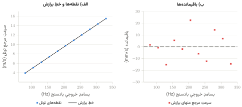
تفسیر. (الف) باقیماندهها حدودِ ده میلیمتر بر ثانیهاند و بیالگو بالا و پایینِ صفر پخش شدهاند (شکل 2.11، ب)؛ این نشانهٔ خوبی است که رابطهٔ خطی کافی است. اگر باقیماندهها یک قوس میساختند (منفی در دو سر، مثبت در میان)، مدلِ خطی کم بود. (پ) تابعِ عمومی 0.6 % بیشتر نشان میدهد، و چون توانِ باد با مکعبِ تندی میرود، حدودِ 2 % در چگالیِ توان. این برای سنجشِ منبعی که تأمینِ مالیِ نیروگاه بر آن تکیه دارد بزرگ است. محدودیت: عدمِ قطعیتِ \(u(v)\) اینجا فقط تونلِ باد را میبیند. در میدان، تلاطم، زاویهٔ جریان، دما، سایهٔ دکل و نصب سهمهای بزرگتری میافزایند (فصلِ ۱۳).
مثال 2.28 (حساسیتِ فردیِ پیرانومتر) پرسش. خروجیِ یک پیرانومترِ نیروگاهِ P 7.10 mV است. گواهیِ کالیبراسیونِ آن حساسیتِ 8.62 µV به ازای 1 W/m² را داده است (ساختگی). شدتِ تابش چقدر است؟ اگر کسی حساسیتِ «اسمیِ» 9.00 µV را از کاتالوگ بردارد، چه خطایی میکند؟
پاسخ.
pyranometer output 7.10 mV; individual sensitivity 8.62 uV per W/m2
(certificate)
G = 7100 uV / 8.62 = 823.7 W/m2
with the nominal 9.00 uV per W/m2 instead: 788.9 W/m2 (-4.2 %)تفسیر. چهار درصد کمبرآوردِ سامانمند، تنها با یک عددِ اشتباه در پیکربندیِ ثبتکننده. این خطا را هیچ میانگینگیریای نمیگیرد، و چون همهٔ ساعتها را یکسان کوچک میکند، در شکلِ روزانهٔ داده هم دیده نمیشود. محافظ: حساسیتِ فردیِ هر حسگر با شمارهٔ سریالِ آن در فرادادهٔ ثبتکننده ذخیره شود و در هر بازدید با گواهی مقایسه شود (بخش 2.4.6).
2.4.4 ردیابیپذیری
تعریف. نتیجهٔ یک اندازهگیری ردیابیپذیر (به انگلیسی metrologically traceable) است اگر بتوان آن را از راهِ یک زنجیرِ پیوستهٔ مستند از کالیبراسیونها به یک مرجع (معمولاً تعریفهای SI) ربط داد، بهطوری که هر حلقه عدمِ قطعیتِ اعلامشده داشته باشد (شکل 2.12).
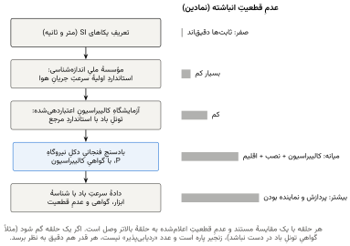
حلقههای زنجیر. در بالای زنجیر تعریفهای SI هستند. مؤسسههای ملیِ اندازهشناسی استانداردهای اولیهٔ کشور را نگه میدارند و توانِ اندازهگیریِ خود را در مقایسههای بینالمللی نشان میدهند؛ یک ترتیبِ شناختِ متقابل میانِ آنها سبب میشود گواهیِ یک کشور در کشورِ دیگر پذیرفته شود. آزمایشگاههای کالیبراسیون مرجعهایشان را با استانداردهای ملی کالیبره میکنند. برای اینکه نشان دهند روش، کارکنان، تجهیزات و ارزیابیِ عدمِ قطعیتشان قابلِ اعتماد است، از یک نهادِ اعتباردهی بر پایهٔ استانداردِ ISO/IEC 17025 (بخش 2.10) اعتبار میگیرند؛ اعتبار برای کمیت و گسترهٔ مشخص است، نه برای «همهٔ کارها». ترتیبِ شناختِ متقابلِ نهادهای اعتباردهی هم گواهیِ اعتباردار را میانِ کشورها قابلِ پذیرش میکند. پایینِ زنجیر، ابزارِ میدانیِ نیروگاه است.
سه بدفهمی.
- «ردیابیپذیر» یعنی «دقیق»؟ نه. یعنی عدمِ قطعیتش معلوم و مستند است. بادسنجی ارزان با عدمِ قطعیتِ بزرگ ولی مستند ردیابیپذیر است؛ بادسنجی گران بی گواهی نیست.
- «کالیبره شده» یعنی «ردیابیپذیر»؟ فقط اگر کالیبراسیون خودش به زنجیر وصل باشد. مقایسه با «بادسنجِ خوبِ همکار» زنجیر نمیسازد.
- «گواهیِ سازنده» کافی است؟ بسته به آن است که سازنده آن کمیت را در آزمایشگاهی اعتباردار کالیبره کرده باشد یا نه. گواهیای که فقط میگوید «ابزار با مشخصات میخواند» وارسیِ عملکرد است، نه کالیبراسیون.
اندازهشناسیِ قانونی. برخی اندازهگیریها، مثلِ کنتورِ فروشِ برق، فقط فنی نیستند؛ پول بر پایهٔ آنها جابهجا میشود و قانون الزاماتشان را تعیین میکند: تأییدِ نوع، آزمونِ اولیه، پلمب، بازرسیِ دورهای. این الزامات در هر کشور توسطِ مرجعِ رسمیِ آن کشور تعیین میشود و در ایران، افغانستان و تاجیکستان باید در فصلهای ۵۵ تا ۵۷ از منابعِ رسمی تأیید شوند. این کتاب هیچ الزامِ کشوری را از پیش فرض نمیکند.
مثال 2.29 (حلقهٔ گمشده) پرسش. دکلِ اندازهگیریِ ساختگاهِ نیروگاهِ P یازده ماه داده دارد. در بازبینیِ پرونده معلوم میشود گواهیِ کالیبراسیونِ بادسنجِ اصلیِ ارتفاعِ 100 m گم شده و فقط تابعِ تبدیلِ عمومی در ثبتکننده وارد شده است. بادسنجِ دیگری در 80 m با گواهیِ کامل هست. پیامد چیست و چه میتوان کرد؟
پاسخ. زنجیرِ ردیابیپذیریِ بادسنجِ 100 m پاره است: نمیدانیم خطای سامانمندش چقدر است (مثال 2.27 نشان داد تابعِ عمومی میتواند نیم درصد خطا در تندی و دو درصد در توان بدهد). گزینهها: (۱) گواهی را از سازنده یا آزمایشگاه دوباره بگیرید؛ گواهیها با شمارهٔ سریال بایگانی میشوند. (۲) بادسنج را پیاده و کالیبراسیونِ پساز-کار (as found) کنید؛ اگر رانش کم باشد، همان تابع را برای گذشته میتوان بهکار برد، با عدمِ قطعیتِ بیشتر. (۳) دادهٔ 100 m را با بادسنجِ 80 m در دورههای مناسب مقایسه کنید؛ این ردیابیپذیری نمیسازد، اما سازگاری را میسنجد. (۴) در برآوردِ انرژی، عدمِ قطعیتِ تندی را افزایش دهید و این را در گزارش بنویسید. درس: وامدهنده و مشاورِ مستقلِ او (فصلِ ۱) همین پرسش را میپرسند؛ بهای یک گواهیِ گمشده ممکن است ماهها تأخیر یا تولیدِ تضمینشدهٔ کمتر باشد.
- فرقِ کالیبراسیون و تنظیم چیست؟ چرا پس از تنظیم باید دوباره کالیبره کرد؟
- چرا نتیجهٔ «پیش از تنظیم» برای دادهٔ گذشته مهم است؟
- شش جزءِ اصلیِ یک گواهیِ کالیبراسیون را نام ببرید.
- چرا باقیماندههای بیالگو نشانهٔ خوبیاند؟ باقیماندهٔ قوسی چه میگوید؟
- چرا در معادلهٔ 2.8 مخرجِ \(s_\text{fit}\) برابرِ \(n - 2\) است؟
- «اعتبارِ ISO/IEC 17025» یک آزمایشگاه برای کالیبراسیونِ دماسنج، کالیبراسیونِ بادسنجِ آن را هم پوشش میدهد؟
- «ردیابیپذیر» یعنی «دقیق»؟ با مثال پاسخ دهید.
- چه کسی الزاماتِ کنتورِ فروشِ برق را در یک کشور تعیین میکند؟ این کتاب چرا آن را از پیش نمیگوید؟
2.4.5 عدمِ قطعیتِ اندازهگیری
شهود. «تندیِ باد 7.25 m/s است» نیمی از حقیقت است. نیمِ دیگر این است: «و با احتمالِ حدودِ ۹۵ درصد، تندیِ واقعی میانِ 7.19 و 7.31 m/s است.» این بازه عدمِ قطعیت (به انگلیسی uncertainty) را بیان میکند: پهنای دانشِ ما دربارهٔ مقدارِ واقعی. نتیجهٔ اندازهگیریِ بیعدمِقطعیت مثلِ نقشهای بیمقیاس است: نمیدانید چقدر به آن تکیه کنید.
خطا و عدمِ قطعیت. خطا اختلافِ نتیجه با مقدارِ واقعی است: عددی با علامت که هرگز نمیدانیمش (اگر میدانستیم، اصلاحش میکردیم). عدمِ قطعیت یک عددِ مثبت است که پراکندگیِ مقدارهای معقول برای کمیت را توصیف میکند. خطاهای سامانمندِ شناختهشده را اصلاح میکنیم (کالیبراسیون)؛ آنچه از دانشِ ناقصِ ما میماند، حتی دربارهٔ خودِ اصلاح، به عدمِ قطعیت تبدیل میشود.
چارچوبِ GUM. راهنمای بینالمللیِ بیانِ عدمِ قطعیت (GUM، بخش 2.10) گامهایی مشخص پیشنهاد میکند که در سراسرِ این کتاب بهکار میبریم:
- مدل: کمیتِ خروجی را تابعی از ورودیها بنویسید: \(y = f(x_1, x_2, \ldots, x_n)\).
- عدمِ قطعیتِ استانداردِ هر ورودی \(u(x_i)\) را ارزیابی کنید: با آمار (نوعِ الف) یا با هر اطلاعِ دیگر (نوعِ ب).
- ضریبِ حساسیت \(c_i = \partial f/\partial x_i\) را بیابید: خروجی چقدر به هر ورودی حساس است.
- ترکیب کنید: عدمِ قطعیتِ استانداردِ ترکیبی \(u_\text{c}(y)\).
- گسترش دهید: \(U = k\,u_\text{c}\) با ضریبِ پوشش \(k\) برای احتمالِ دلخواه.
- گزارش کنید: \(y \pm U\) با \(k\) و احتمال، و بودجهٔ سهمِ هر ورودی.
2.4.5.1 ارزیابیِ نوعِ الف: از تکرار
اگر کمیتی را \(n\) بار در شرایطِ یکسان و مستقل اندازه بگیریم، بهترین برآورد میانگین است و پراکندگیِ تکخوانشها را انحرافِ معیارِ تجربی \(s\) میسنجد. عدمِ قطعیتِ میانگین از عدمِ قطعیتِ یک خوانش کمتر است:
\[ \bar x = \frac1n \sum_{i=1}^{n} x_i ,\qquad s = \sqrt{\frac{1}{n-1}\sum_{i=1}^{n} (x_i - \bar x)^2},\qquad u(\bar x) = \frac{s}{\sqrt n} \tag{2.9}\]
با درجهٔ آزادیِ \(\nu = n - 1\). وقتی \(n\) کوچک است، خودِ \(s\) نامطمئن است و برای احتمالِ ۹۵ درصد بهجای \(k = 2\) از ضریبِ تیِ استیودنت استفاده میکنیم که برای \(n\) کم بزرگتر است (فصلِ ۳).
مثال 2.30 (ده خوانشِ جریانِ یک رشته) پرسش. جریانِ یک رشته در تابشِ پایدار ده بار پشتِ سرِ هم خوانده شده است (ساختگی). بهترین برآورد، عدمِ قطعیتِ استانداردِ آن و عدمِ قطعیتِ گستردهٔ ۹۵ درصد را بیابید.
پاسخ.
ten readings of one string current, same conditions (synthetic), A:
10.43, 10.47, 10.38, 10.42, 10.40, 10.39, 10.37, 10.39, 10.42, 10.41
mean 10.408 A; s = 0.0290 A; u(mean) = s / sqrt(10) = 0.0092 A
degrees of freedom 9; t-factor for 95 % = 2.262; U = 0.021 Aتفسیر. پراکندگیِ تکخوانشها حدودِ 0.03 A است، اما میانگین حدودِ \(\sqrt{10} \approx 3.2\) برابر مطمئنتر است. با نُه درجهٔ آزادی، ضریبِ پوشش \(2.26\) است، نه \(2\). هشدار: این عدمِ قطعیت فقط پراکندگیِ تکرار را میبیند. خطای سامانمندِ آمپرمتر (مثال 2.24) هیچ سهمی در \(s\) ندارد و باید جداگانه، با نوعِ ب، افزوده شود. «تابشِ پایدار» هم یک فرض است: اگر تابش در این مدت کمی تغییر کرده باشد، \(s\) تغییرِ واقعیِ جریان را هم در خود دارد.
2.4.5.2 ارزیابیِ نوعِ ب: از هر دانشِ دیگر
بیشترِ عدمِ قطعیتهای عملی از تکرار نمیآیند: از برگهٔ داده، گواهیِ کالیبراسیون، تفکیکپذیری، تجربه یا داوریِ مهندسی میآیند. ارزیابیِ نوعِ ب این دانش را به یک انحرافِ معیار تبدیل میکند، با فرضِ یک توزیعِ احتمال (شکل 2.13):
- مستطیلی: وقتی فقط میدانیم مقدار میانِ \(\pm a\) است و هیچ جای بازه محتملتر نیست (حدِ خطای برگهٔ داده، گرد کردن): \(u = a/\sqrt3\).
- مثلثی: وقتی مقدارهای نزدیکِ مرکز محتملترند: \(u = a/\sqrt6\).
- نرمال: وقتی منبع عدمِ قطعیتِ گسترده \(U\) با ضریبِ پوشش \(k\) را داده است (گواهیِ کالیبراسیون): \(u = U/k\).
- تفکیکپذیری: نمایشگری با گامِ \(\delta\) مقدار را تا \(\pm\delta/2\) گرد میکند: \(u = \delta/(2\sqrt3)\).
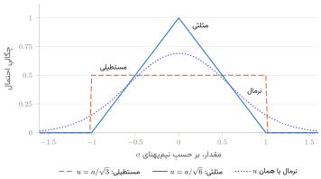
مثال 2.31 (دماسنجی با دو منبعِ عدمِ قطعیت) پرسش. دماسنجِ هوای دکل گامِ نمایشِ 0.1 °C و حدِ خطای ±0.3 °C در برگهٔ داده دارد (فرضی). عدمِ قطعیتِ استاندارد و گسترده را بیابید.
پاسخ.
thermometer: resolution 0.1 degC, data-sheet limit +-0.3 degC (assumed)
resolution: 0.05 / sqrt(3) = 0.0289 K
data sheet: 0.3 / sqrt(3) = 0.1732 K
combined: sqrt(sum of squares) = 0.176 K; U(k=2) = 0.35 Kتفسیر. سهمِ تفکیکپذیری کوچک است و عملاً کلِ عدمِ قطعیت از برگهٔ داده میآید. قاعدهٔ عملی: جزءهایی که کمتر از یکسومِ بزرگترین جزءاند، در ترکیبِ مربعی تقریباً اثری ندارند (\(0.029^2\) در برابرِ \(0.173^2\))؛ وقت را صرفِ جزءِ بزرگ کنید.
2.4.5.3 انتشارِ عدمِ قطعیت
قانونِ انتشار. اگر ورودیها مستقل باشند، عدمِ قطعیتِ ترکیبیِ \(y = f(x_1, \ldots, x_n)\) در تقریبِ مرتبهٔ اول (یعنی وقتی \(f\) در بازهٔ عدمِ قطعیت تقریباً خطی است) چنین است:
\[ u_\text{c}^2(y) = \sum_{i=1}^{n} c_i^2\,u^2(x_i),\qquad c_i = \frac{\partial f}{\partial x_i} \tag{2.10}\]
جملهها مربعی جمع میشوند، نه خطی، چون خطاهای مستقل گاهی یکدیگر را خنثی میکنند. اگر دو ورودی همبسته باشند (مثلاً هر دو با یک ابزار اندازهگیری شدهاند)، جملهٔ \(2c_i c_j u(x_i)u(x_j)r_{ij}\) افزوده میشود که \(r_{ij}\) ضریبِ همبستگی است. برنامهٔ همراه \(c_i\) را با تفاضلِ عددی حساب میکند تا بتوان قانون را روی هر مدلی بهکار برد.
میانبُرِ ضرب و توان. برای مدلهایی به شکلِ \(y = C\,x_1^{p_1} x_2^{p_2}\cdots\) (که در فیزیکِ نیروگاه بسیار رایجاند)، قانونِ انتشار به شکلِ نسبی بسیار ساده میشود:
\[ \left(\frac{u_\text{c}(y)}{y}\right)^2 = \sum_i \left(p_i\,\frac{u(x_i)}{x_i}\right)^2 \tag{2.11}\]
پس توانِ هر ورودی، عدمِ قطعیتِ نسبیِ آن را چند برابر میکند. در توانِ باد، \(v\) توانِ سه دارد: هر درصد عدمِ قطعیت در تندی سه درصد در توان میشود.
بودجهٔ عدمِ قطعیت. جدولی که هر ورودی، مقدار، عدمِ قطعیت، ضریبِ حساسیت، سهمِ \(|c_i|u(x_i)\) و درصدِ سهم از واریانسِ کل را نشان میدهد بودجهٔ عدمِ قطعیت نام دارد. ارزشِ اصلیاش این است که نشان میدهد کجا سرمایهگذاری کنیم: کاهشِ جزءِ بزرگ اثر دارد، کاهشِ جزءِ کوچک تقریباً هیچ.
مثال 2.32 (چگالیِ هوا و عدمِ قطعیتِ «نماینده بودن») پرسش. چگالیِ هوای ساختگاهِ P را از میانگینِ سالانهٔ فشار و دمای بستهٔ داده با \(\rho = p/(R_\text{d}T)\) حساب کنید. (الف) اگر فقط خطای ابزارها را در نظر بگیریم (فشارسنج ±0.5 hPa، دماسنج ±0.3 K، هر دو مستطیلی، فرضی)، عدمِ قطعیتِ چگالی چقدر است؟ (ب) دماسنج در ارتفاعِ 2 m است اما توربین در 100 m کار میکند. اگر برای «نماینده بودنِ» دمای 2 m یک عدمِ قطعیتِ استانداردِ 2 K (فرضی) بیفزاییم، چه میشود؟
پاسخ.
air density rho = p / (R T) at Plant P annual means (data pack 1.0.0)
instrument only: p +-0.5 hPa, T +-0.3 K (assumed limits, rectangular)
input value u(x) c |c|u share
p 8.777e+04 28.9 1.202e-05 0.000347 23.3%
T 289.9 0.173 -0.003637 0.00063 76.7%
R 287.1 0 -0.003674 0 0.0%
y = 1.0546 kg/m3, u_c = 0.000719 kg/m3 (0.07 %), U(k=2) = 0.00144 kg/m3
plus representativeness: 2 m temperature used for 100 m air, u = 2 K (assumed)
input value u(x) c |c|u share
p 8.777e+04 28.9 1.202e-05 0.000347 0.2%
T 289.9 2.01 -0.003637 0.0073 99.8%
R 287.1 0 -0.003674 0 0.0%
y = 1.0546 kg/m3, u_c = 0.00731 kg/m3 (0.69 %), U(k=2) = 0.0146 kg/m3تفسیر. با ابزارها تنها، عدمِ قطعیتِ نسبی 0.07 % است؛ با «نماینده بودن» ده برابر، 0.69 %، و سهمِ دما به 99.8 % واریانس میرسد. این مهمترین درسِ عملیِ عدمِ قطعیت است: بزرگترین جزء اغلب خودِ ابزار نیست، بلکه این است که اندازهگیری چقدر نمایندهٔ چیزی است که واقعاً لازم داریم. دماسنجِ بهتر در 2 m تقریباً هیچ کمکی نمیکند؛ دماسنجی در ارتفاعِ توپی، یا مدلِ تغییرِ دما با ارتفاع (مثال 2.42 و فصلِ ۴)، کمک میکند. وارسی: با میانبُرِ نسبی، \(\sqrt{(0.5/(\sqrt3\cdot 877.67))^2 + (0.3/(\sqrt3\cdot 289.93))^2} \approx 0.07\,\%\) (درست).
مثال 2.33 (چگالیِ توانِ باد) پرسش. چگالیِ توانِ باد \(\tfrac12\rho v^3\) را برای \(\rho = 1.0546\ \text{kg/m}^3\) (با عدمِ قطعیتِ مثال 2.32، ب) و تندیِ 7.10 m/s با عدمِ قطعیتِ نسبیِ 2 % (فرضی) حساب کنید. بودجه را بسازید و با میانبُرِ معادلهٔ 2.11 مقایسه کنید.
پاسخ.
wind power density 0.5 rho v^3 with u(v)/v = 2 % (assumed) and u(rho) from
above
input value u(x) c |c|u share
rho 1.055 0.00731 179 1.31 1.3%
v 7.1 0.142 79.74 11.3 98.7%
y = 188.73 W/m2, u_c = 11.4 W/m2 (6.04 %), U(k=2) = 22.8 W/m2
power-law shortcut: sqrt((1 x 0.69 %)^2 + (3 x 2 %)^2) = 6.04 %تفسیر. تندی 98.7 % واریانس را میسازد: دو درصد عدمِ قطعیت در تندی شش درصد در توان. هر تلاشی برای کاهشِ عدمِ قطعیتِ ارزیابیِ باد باید روی تندی متمرکز شود، و به همین دلیل فصلِ ۱۳ اینقدر به کالیبراسیون، نصب و برش میپردازد. وارسی: میانبُر دقیقاً همان 6.04 % را میدهد.
2.4.5.4 ضریبِ پوشش و گزارش
عدمِ قطعیتِ استاندارد یک انحرافِ معیار است. برای بیانِ یک بازه با احتمالِ مشخص، آن را در ضریبِ پوشش \(k\) ضرب میکنیم:
\[ U = k\,u_\text{c}(y) \tag{2.12}\]
اگر توزیعِ خروجی تقریباً نرمال و درجهٔ آزادی زیاد باشد، \(k = 2\) احتمالِ حدودِ ۹۵ درصد و \(k = 1.96\) دقیقاً ۹۵ درصد میدهد. وقتی درجهٔ آزادیِ مؤثر کم است (چند خوانشِ تکراری)، \(k\) از جدولِ تیِ استیودنت میآید؛ درجهٔ آزادیِ مؤثرِ ترکیب را فرمولِ ولش-ساترثویت میدهد که در کتابخانهٔ همراه هست و فصلِ ۳ توضیحش میدهد.
قاعدهٔ گزارش. (۱) \(U\) را با یک یا دو رقمِ بامعنا بنویسید (این کتاب: دو رقم). (۲) نتیجه را تا همان رقمِ اعشار گرد کنید. (۳) \(k\) و احتمالِ پوشش را بگویید. (۴) اگر عدمِ قطعیت همهٔ منابع را در بر نمیگیرد (مثلاً «فقط منبع، نه مدل»)، این را صریح بگویید.
مثال 2.34 (چهار نتیجه، چهار گزارش) پرسش. نتیجههای مثال 2.30، مثال 2.32، مثال 2.33 و برآوردِ انرژیِ سالانهٔ مثال 2.35 را با قاعدهٔ گزارش بنویسید.
پاسخ.
round U to two significant figures, the result to the same decimal place
annual energy, GWh y = 289.84 U = 20.3 -> 290 +- 20
air density, kg/m3 y = 1.0546 U = 0.0146 -> 1.055 +- 0.015
string current, A y = 10.408 U = 0.0207 -> 10.408 +- 0.021
power density, W/m2 y = 188.73 U = 22.8 -> 189 +- 23پس گزارشها چنیناند: انرژیِ سالانه «290 GWh، \(U = 20\ \text{GWh}\) با \(k = 2\)، فقط عدمِ قطعیتِ منبع، مقدارهای آموزشی»؛ چگالیِ هوا «1.055 kg/m³، \(U = 0.015\ \text{kg/m}^3\)، \(k = 2\)»؛ جریانِ رشته «10.408 A، \(U = 0.021\ \text{A}\)، \(k = 2.26\) برای ۹۵ درصد و نُه درجهٔ آزادی، فقط تکرارپذیری». درس: گزارشِ 289.84 GWh ± 20.3 GWh اشتباه نیست، اما رقمهای اضافهاش ادعای دانشی را دارد که نداریم.
2.4.5.5 مونتکارلو: وقتی فرمول کافی نیست
شهود. قانونِ انتشار (معادلهٔ 2.10) فرض میکند تابع در بازهٔ عدمِ قطعیت تقریباً خطی است. اگر نباشد (منحنیِ توان نزدیکِ تندیِ نامی، یا هر مدلِ پیچیده با سقف و آستانه)، روشِ دیگری لازم است: هزاران بار ورودیها را از توزیعهایشان بهتصادف بکشید، مدل را برای هر بار اجرا کنید و توزیعِ خروجی را مستقیم ببینید. این روشِ مونتکارلو است و مکملِ GUM برای آن جداگانه منتشر شده است (بخش 2.10). مزیتش این است که به مشتق و خطی بودن نیاز ندارد و هر مدلی را که بتوان اجرا کرد میپذیرد؛ بهایش زمانِ محاسبه و این است که نتیجه خودش کمی تصادفی است (و با بذرِ ثابتِ تولیدکنندهٔ عددِ تصادفی، بازتولیدپذیر).
مثال 2.35 (عدمِ قطعیتِ تولیدِ سالانهٔ نیروگاهِ P) پرسش. فرض کنید (مقدارهای آموزشی، فرضِ A-029) کلِ سریزمانیِ تندیِ باد با ضریبِ مقیاسِ نامطمئنِ \(f_v\) با عدمِ قطعیتِ 3 % و تابشِ سالانه با ضریبِ \(f_H\) با عدمِ قطعیتِ 4 % ضرب میشود، هر دو نرمال و مستقل. عدمِ قطعیتِ تولیدِ سالانهٔ نیروگاهِ P (بستهٔ داده 1.0.0، سناریوی S0) را با روشِ مرتبهٔ اول و با مونتکارلو بیابید. حساسیتِ انرژیِ بادی به تندی چقدر است؟ مقداری که با احتمالِ ۹۰ درصد از آن بیشتر میشود (P90) چیست؟
پاسخ. برنامه انرژیِ بادی را برای ۳۱ مقدارِ \(f_v\) میانِ 0.85 و 1.15 با کلِ سریزمانی حساب میکند (شکل 2.14)، سپس دویست هزار بار نمونه میکشد:
annual energy of Plant P Reference Data Pack 1.0.0, scenario S0 (no-BESS),
uncertainty of the resource only
wind: speed scale f_v, u(f_v) = 3 % (assumed); PV: irradiation scale f_H,
u(f_H) = 4 % (assumed)
sensitivity of wind energy to speed: dE/E = 1.62 x dv/v (not 3: rated region
and cut-in)
first-order (GUM) budget:
input value u(x) c |c|u share
f_v 1 0.03 311.7 9.35 85.2%
f_H 1 0.04 97.3 3.89 14.8%
y = 289.84 GWh, u_c = 10.1 GWh (3.49 %), U(k=2) = 20.3 GWh
Monte Carlo, 200,000 draws: mean 289.7 GWh, std 10.1 GWh, 95 % interval 269.5
.. 309.1 GWh
value exceeded with 90 % probability (P90): 276.6 GWh
reported: E = 290 GWh, U(k=2) = 20 GWh (resource only; teaching values)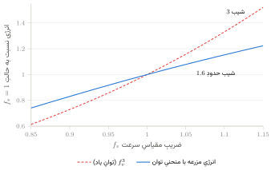
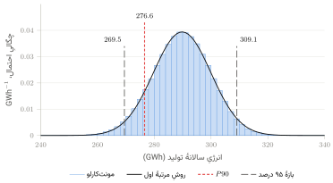
تفسیر. (۱) حساسیتِ انرژیِ مزرعه به تندی ۱٫۶۲ است، نه ۳: منحنیِ توان در تندیهای بالا به سقف میرسد و در تندیهای زیرِ آستانه صفر است، پس انرژی کندتر از مکعبِ تندی رشد میکند. ۳ درصد عدمِ قطعیت در تندی حدودِ ۴٫۹ درصد در انرژیِ بادی میشود. (۲) با وجودِ اینکه عدمِ قطعیتِ نسبیِ تابش بیشتر است، باد ۸۵ درصد واریانس را میسازد، چون هم سهمِ بزرگتری از انرژی دارد و هم حساسیتِ بیشتر. (۳) مونتکارلو و روشِ مرتبهٔ اول اینجا تقریباً یک جواب میدهند (شکل 2.15)، چون رابطه در بازهٔ \(\pm 3\,\%\) تقریباً خطی است. (۴) P90 حدودِ 277 GWh است: عددی که وامدهندهها معمولاً با آن کار میکنند (فصلهای ۱۶ و ۲۱). محدودیت: این فقط عدمِ قطعیتِ منبع با مقدارهای فرضی است؛ عدمِ قطعیتِ مدل، تلفات، در دسترس بودن و تغییرپذیریِ سالبهسال در فصلِ ۱۶ افزوده میشود و بخش 2.8 مثالی را نشان میدهد که در آن دو روش با هم نمیخوانند.
2.4.5.6 ارزیابیِ انطباق: پذیرش با وجودِ عدمِ قطعیت
مسئله. قراردادِ خریدِ اینورتر بازدهِ 98.5 % را در یک نقطهٔ کار تضمین کرده است. آزمونِ پذیرش 98.4 % را با عدمِ قطعیتِ گستردهٔ 0.28 واحدِ درصد نشان میدهد. اینورتر قبول است یا رد؟ پاسخ به قاعدهٔ تصمیم بستگی دارد، و قاعدهٔ تصمیم باید پیش از آزمون در قرارداد نوشته شده باشد. راهنمای JCGM 106 (بخش 2.10) این موضوع را بررسی میکند.
دو قاعدهٔ رایج.
- پذیرشِ ساده: مقدارِ اندازهگیریشده با حد مقایسه میشود و عدمِ قطعیت نادیده میماند. ریسکِ تصمیمِ نادرست میانِ خریدار و فروشنده تقسیم میشود، و هر دو باید آن را آگاهانه پذیرفته باشند.
- پذیرشِ محافظتشده: یک باندِ محافظ به پهنای \(w\) (معمولاً \(w = U\)) کنارِ حد گذاشته میشود. فقط اگر کلِ بازهٔ \(y \pm U\) در سمتِ درست باشد پذیرش، فقط اگر کلِ آن در سمتِ نادرست باشد رد، و در غیرِ این صورت نامعین است. نامعین یعنی «با این اندازهگیری نمیتوان تصمیم گرفت»؛ گامهای بعدی (اندازهگیریِ دقیقتر، آزمونِ تکراری یا قاعدهٔ قراردادی) باید از پیش تعیین شده باشند.
مثال 2.36 (پذیرشِ بازدهِ اینورتر) پرسش. سه اینورتر در نقطهٔ کارِ 1250 kW ورودیِ DC آزموده شدهاند (عددها ساختگی). تحلیلگرِ توان هر کانال را با عدمِ قطعیتِ استانداردِ 0.10 % خوانش اندازه میگیرد (فرضی). (الف) بازده و عدمِ قطعیتِ گسترده را برای هر سه بیابید و با هر دو قاعده تصمیم بگیرید. (ب) اگر دو کانالِ ورودی و خروجی با همبستگیِ 0.8 خطا داشته باشند، چه تغییری میکند؟
پاسخ.
inverter efficiency acceptance: guaranteed eta >= 98.5 % at the test point
power analyser: u = 0.10 % of reading on each channel (assumed, uncorrelated)
T1: eta = 98.40 %, U(k=2) = 0.28 points -> guarded inconclusive, simple reject
T2: eta = 98.80 %, U(k=2) = 0.28 points -> guarded accept, simple accept
T3: eta = 98.10 %, U(k=2) = 0.28 points -> guarded reject, simple reject
acceptance limit with guard band w = U: 98.78 %
T1 with correlation r = 0.8 between channels: U = 0.124 points,
interval 98.28 .. 98.52 % -> guarded inconclusive; acceptance limit now
98.62 %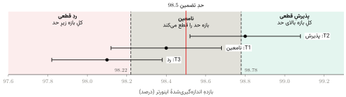
تفسیر. (الف) T1 با قاعدهٔ ساده رد میشود، اما با قاعدهٔ محافظتشده نامعین است: بازهٔ 98.12 تا 98.68 % حد را قطع میکند (شکل 2.16). T2 با هر دو قاعده پذیرفته و T3 با هر دو رد میشود. (ب) با همبستگیِ مثبت میانِ دو کانال، بخشی از خطا در نسبتِ خروجی به ورودی خنثی میشود و \(U\) از 0.28 به 0.12 واحدِ درصد میرسد. بازهٔ T1 به 98.28 تا 98.52 % تنگ میشود و هنوز، بهاندازهٔ دو صدمِ واحدِ درصد، حد را لمس میکند: همچنان نامعین، اما اکنون آشکار است که اینورتر به احتمالِ زیاد زیرِ تضمین است. حدِ پذیرش هم از 98.78 به حدودِ 98.62 % پایین میآید؛ اینورتری با 98.7 % اندازهگیریشده که پیشتر نامعین بود، حالا پذیرفته میشود. اندازهگیریِ هر دو سو با یک تحلیلگرِ کالیبرهشده، تصمیمها را روشنتر میکند. درس: «قبول» یا «رد» خاصیتِ اینورتر نیست؛ خاصیتِ اینورتر، اندازهگیری و قاعدهٔ تصمیم با هم است. قراردادی که قاعده را نگوید، اختلاف میسازد (فصلهای ۳۸ و ۵۰).
- فرقِ خطا و عدمِ قطعیت را در یک جمله بگویید. کدام علامت دارد؟
- شش گامِ چارچوبِ GUM را به ترتیب بنویسید.
- پنج خوانشِ 7.02، 7.10، 7.05، 7.12 و 7.06 m/s داریم. \(\bar x\)، \(s\) و \(u(\bar x)\) را بیابید.
- برگهٔ دادهٔ یک فشارسنج ±1 hPa میگوید. عدمِ قطعیتِ استاندارد چقدر است و چه توزیعی فرض کردهاید؟
- گواهیِ کالیبراسیون \(U = 0.04\ \text{m/s}\) با \(k = 2\) داده است. \(u\) چقدر است؟
- اگر \(P = V I\) و \(u(V)/V = 0.3\,\%\) و \(u(I)/I = 0.4\,\%\) (مستقل)، \(u(P)/P\) چقدر است؟
- چرا در مثال 2.32 دماسنجِ بهتر کمکی نمیکند؟
- چرا حساسیتِ انرژیِ مزرعهٔ بادی به تندی کمتر از ۳ است؟
- کِی مونتکارلو و روشِ مرتبهٔ اول جوابهای متفاوت میدهند؟
- «نامعین» در پذیرشِ محافظتشده یعنی چه و چه کسی باید از پیش بگوید پس از آن چه میشود؟
2.4.6 خاستگاهِ داده و شواهدِ پذیرش
شهود. فرض کنید سه سال بعد، وامدهنده میپرسد: «این تندیِ میانگینِ 7.10 m/s از کجا آمده؟» پاسخِ قانعکننده یک زنجیر است: کدام بادسنج (با شمارهٔ سریال و گواهی)، روی کدام دکل و در چه ارتفاعی، کدام بازهٔ زمانی، با کدام پروندههای خام، با چه قاعدههایی پالایش شده، با کدام برنامه و نسخه به میانگینِ ساعتی رسیده، و چه کسی هر گام را وارسی کرده است. این زنجیر خاستگاهِ داده (به انگلیسی data provenance) است. بی آن، عدد فقط یک ادعاست.
فرادادهٔ خاستگاه. هر مجموعهدادهٔ اندازهگیری دستکم این فراداده (دادهٔ دربارهٔ داده) را لازم دارد:
- چه: کمیتِ مورد اندازهگیری با تعریفِ کامل، یکا، بازهٔ میانگینگیری و قراردادِ برچسبِ زمان؛
- با چه: سازنده، مدل و شمارهٔ سریالِ هر ابزار؛ شمارهٔ گواهیِ کالیبراسیون و تابعِ تبدیلِ بهکاررفته؛
- کجا: مختصات، ارتفاع، جهتِ بازوی نصب، و تغییراتِ آنها در طولِ زمان؛
- کِی: آغاز و پایان، منطقهٔ زمانی، شکافها و تعمیرها؛
- چگونه: نرمافزار و نسخهٔ پردازش، قاعدههای پالایش و پرچمگذاری، اصلاحها و پر کردنِ شکافها؛
- چه کسی: گردآورنده، پردازشگر، بازبین، و تاریخِ هر کار؛
- اثرانگشت: چکیدهٔ رمزنگاشتیِ هر پرونده (پایینتر).
سه قاعدهٔ طلایی. (۱) دادهٔ خام هرگز ویرایش نمیشود. پروندههای خامِ ثبتکننده فقطخواندنی بایگانی میشوند؛ هر اصلاح در پروندهٔ مشتقشده با ثبتِ قاعده انجام میشود. (۲) دادههای مشتقشده بازتولیدپذیرند. باید بتوان با همان پروندههای خام، همان برنامه و همان پیکربندی، دقیقاً همان نتیجه را دوباره ساخت. (۳) هر عددِ گزارش تا پروندهٔ خام ردیابی میشود (شکل 2.17).
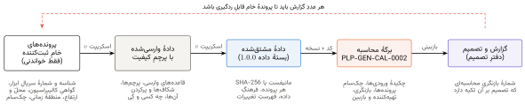
پرچمِ کیفیت. بهجای پاک کردنِ دادههای مشکوک، هر سطر یک پرچمِ کیفیت میگیرد: بستهٔ دادهٔ نیروگاهِ P سه مقدار دارد، «۰ معتبر»، «۱ پرشده» و «۲ مشکوک» (فرهنگِ دادهٔ بسته). پرچم اجازه میدهد هر تحلیلگر خودش تصمیم بگیرد با دادههای مشکوک چه کند و تصمیمش را بنویسد؛ پاک کردن این گزینه را از همه میگیرد. فصلِ ۵ پرچمگذاری را خودکار میکند و فصلهای ۱۲ و ۱۳ قاعدههایش را برای تابش و باد میدهند.
اثرانگشتِ رمزنگاشتی. تابعِ درهمسازی (به انگلیسی hash function) مثلِ SHA-256 از هر پرونده، با هر اندازه، یک چکیدهٔ ۶۴ نویسهای میسازد. سه ویژگی دارد که آن را ابزارِ خاستگاه میکند: (۱) همان پرونده همیشه همان چکیده را میدهد؛ (۲) کوچکترین تغییر (یک رقم، یک فاصله) چکیده را کاملاً عوض میکند؛ (۳) عملاً نمیتوان دو پروندهٔ متفاوت با یک چکیده ساخت. پس اگر چکیدهٔ یک پرونده با چکیدهٔ ثبتشده در مانیفستِ بستهٔ داده بخواند، پرونده دستنخورده است. چکیده محرمانگی نمیدهد و درستیِ داده را هم تضمین نمیکند؛ فقط میگوید پرونده همان است که ثبت شده بود.
مثال 2.37 (آیا پرونده همان است؟) پرسش. پیش از هر محاسبه با دادهٔ ساعتیِ بستهٔ داده، برنامههای این کتاب چکیدهٔ پرونده را با مانیفست مقایسه میکنند. این وارسی را انجام دهید و نشان دهید تغییرِ یک رقم چه میکند.
پاسخ.
file timeseries/plantp_hourly_8760.csv of data pack 1.0.0
SHA-256 in manifest: 0b179863ba8707a5aa76ecc9e2f4d779...
SHA-256 computed: 0b179863ba8707a5aa76ecc9e2f4d779...
identical: True
change one character in the file and the digest changes completely:
digest('7.10') = 2e698a0a347701d1ca1a6017...
digest('7.11') = 9c624979236d064ec134c826...تفسیر. دو چکیده یکساناند، پس پروندهای که برنامه میخواند همان است که بستهٔ دادهٔ 1.0.0 منتشر کرده است. تغییرِ «۷٫۱۰» به «۷٫۱۱» چکیده را از بیخ عوض میکند. کاربرد: برگهٔ محاسبهٔ بخش 2.5.6 چکیدهٔ پروندههای ورودیاش را ثبت میکند؛ اگر سالها بعد کسی محاسبه را تکرار کند و جوابِ دیگری بگیرد، نخستین پرسش این است که آیا چکیدهها هنوز میخوانند.
سلسلهمراتبِ شاهد. فصلِ ۱ پنج وضعیت برای هر عدد تعریف کرد: ساختگی، فرضی، اندازهگیریشده، اعلامِ سازنده و تأییدشدهٔ رسمی. این فصل محتوای هر پله را روشن کرد: «اندازهگیریشده» فقط وقتی شایستهٔ این نام است که خاستگاه، کالیبراسیون و عدمِ قطعیت داشته باشد؛ «اعلامِ سازنده» وقتی ارزشمند است که روشِ آزمون و شرایطش گفته شده باشد؛ و «تأییدشدهٔ رسمی» یعنی مرجعی با اختیارِ قانونی یا قراردادی آن را پذیرفته است.
مثال 2.38 (پنج ورودی، پنج وضعیت) پرسش. وضعیتِ کنونیِ این ورودیهای نیروگاهِ P چیست و چه شاهدی آنها را یک پله بالا میبرد؟ (الف) تندیِ میانگینِ باد 7.10 m/s؛ (ب) منحنیِ توانِ توربین؛ (پ) سقفِ صادراتِ 100 MW؛ (ت) بازدهِ 0.98 اینورتر؛ (ث) چگالیِ هوای 1.055 kg/m³.
پاسخ.
| ورودی | وضعیتِ کنونی | شاهدِ پلهٔ بعد |
|---|---|---|
| تندیِ میانگینِ باد | ساختگی | دکلِ ساختگاه با بادسنجِ کالیبره، دستکم یک سال، خاستگاهِ کامل (فصلِ ۱۳) |
| منحنیِ توان | ساختگی | منحنیِ توانِ سازنده برای چگالیِ ساختگاه، با روشِ آزمونِ استاندارد (فصلِ ۱۱) |
| سقفِ صادرات | فرضی | نامهٔ رسمیِ ظرفیت و موافقتنامهٔ اتصال از بهرهبردارِ شبکه (فصلِ ۲۸) |
| بازدهِ اینورتر | فرضی | برگهٔ دادهٔ سازنده و سپس آزمونِ پذیرش با قاعدهٔ تصمیمِ قراردادی (مثال 2.36) |
| چگالیِ هوا | محاسبه از دادهٔ ساختگی | دما و فشارِ اندازهگیریشده، ترجیحاً نزدیکِ ارتفاعِ توپی |
درس. هیچکدام از ورودیهای اصلیِ نیروگاهِ P هنوز از «فرضی» بالاتر نرفتهاند؛ این برای مرحلهٔ غربالگری طبیعی است و کارِ فصلهای بعد بالا بردنِ آنهاست. چیزی که غیرعادی و خطرناک است، عددِ فرضیای است که بیبرچسب در گزارش بنشیند و «اندازهگیریشده» خوانده شود.
شاهدِ پذیرش. وقتی تجهیز یا سامانهای تحویل گرفته میشود، تصمیمِ پذیرش بر پایهٔ یک گزارشِ آزمون است. گزارشی که بتوان به آن تکیه کرد اینها را دارد: شناسهٔ تجهیز و پیکربندیاش؛ معیارِ پذیرش و منبعِ آن (بندِ قرارداد یا مشخصهٔ فنی)؛ روشِ آزمون؛ ابزارها با شمارهٔ سریال و گواهیِ کالیبراسیونِ معتبر در تاریخِ آزمون؛ شرایطِ محیطی؛ نتیجهها با عدمِ قطعیت؛ قاعدهٔ تصمیم؛ حکم؛ و امضای آزمایشکننده و شاهدانِ طرفها. در پروژهها، برنامهٔ بازرسی و آزمون (فصلِ ۳۸) از پیش میگوید کدام آزمونها نقطهٔ توقفاند (کار بی حضورِ خریدار پیش نمیرود) و کدام نقطهٔ مشاهده. سوابقِ پذیرش بخشی از پروندهٔ داراییاند و تا پایانِ عمرِ نیروگاه، و گاهی بیشتر، نگهداری میشوند (فصلهای ۵ و ۵۳)؛ مدتِ دقیقِ نگهداری را قرارداد، مالک و قانونِ هر کشور تعیین میکنند.
- هفت گروهِ فرادادهٔ خاستگاه را نام ببرید.
- چرا دادهٔ خام هرگز ویرایش نمیشود؟ اگر یک خوانش آشکارا غلط است، با آن چه میکنیم؟
- پرچمِ کیفیت چه برتریای بر پاک کردنِ دادهٔ مشکوک دارد؟
- چکیدهٔ SHA-256 چه چیزی را تضمین میکند و چه چیزی را نه؟
- «اندازهگیریشده» بودنِ یک عدد چه شاهدی میخواهد؟
- نُه جزءِ یک گزارشِ آزمونِ قابلِ اتکا را بشمارید.
- فرقِ «نقطهٔ توقف» و «نقطهٔ مشاهده» در برنامهٔ بازرسی و آزمون چیست؟
- اگر یک عددِ فرضی بیبرچسب در گزارشِ وامدهنده بنشیند، چه خطری دارد؟
2.5 ت. محاسبهٔ بازتولیدپذیر و سوابقِ مهندسی
شهود. یک محاسبهٔ مهندسی فقط برای امروز نوشته نمیشود. سه سال بعد، بازبینِ وامدهنده، مهندسِ بهرهبرداری یا خودِ شما باید بتوانید بفهمید عدد از کجا آمد، دوباره همان را بسازید، و اگر فرضی عوض شد، بدانید کدام نتیجهها هم باید عوض شوند. این بخش ابزارهای این کار را میسازد: دفترِ فرضها، برگهٔ محاسبه، شمارهگذاری و بازنگریِ مدارک، کنترلِ نسخه و وارسیِ مستقل. در پایان همه را روی یک برآوردِ پرخطای نیروگاهِ P بهکار میبندیم.
2.5.1 دفترِ فرضها
چرا دفتر؟ هر محاسبهای در مراحلِ نخستِ پروژه پر از فرض است، و این ایرادی ندارد. ایراد وقتی است که فرضها پنهان باشند: در سلولِ یک صفحهگسترده، در ذهنِ یک مهندس، یا در جملهای که «معمولاً چنین است» آغاز میشود. دفترِ فرضها (فصلِ ۱) فرضها را به اشیای قابلِ ردگیری تبدیل میکند: هر فرض یک شناسه، یک مالک و یک سرنوشت دارد.
ستونهای دفتر. شناسه؛ کمیت؛ مقدار و یکا؛ وضعیتِ شاهد (ساختگی، فرضی، …)؛ منبع یا دلیل؛ فصل یا سندی که فرض را وارد کرد؛ اثر (کدام محاسبهها به آن وابستهاند)؛ حساسیت (اگر غلط باشد چقدر نتیجه عوض میشود)؛ مالک؛ تاریخِ بازبینیِ بعدی؛ و سرنوشت: «باز»، «تأییدشده با شاهدِ …» یا «جایگزینشده با …».
قاعدهها.
- شناسهها هرگز بازاستفاده یا بازشمارهگذاری نمیشوند. فرضِ A-019 اگر کنار رود، شناسهاش با برچسبِ «جایگزینشده» میماند. به همین دلیل شناسههای این فصل از A-023 آغاز میشوند: A-014 تا A-022 را فصلِ ۶ پیشتر ثبت کرده است. شمارهها ترتیبِ ثبتاند، نه ترتیبِ فصلها.
- هر سطر یک فرض. «فرضهای الکتریکی» یک سطر نیست.
- فرض یک فرضیه است، نه حقیقت: برای هر فرض بنویسید چه شاهدی آن را تأیید یا رد میکند و چه کسی مسئولِ گردآوریِ آن است.
- فرضهای پرحساسیت اولویت دارند. اگر فرضی با ۱۰ درصد خطا نتیجه را ۱ درصد تغییر میدهد، دنبالِ شاهدش دویدن اولویت ندارد؛ اگر نتیجه را ۱۰ درصد تغییر میدهد، دارد.
این فصل هشت فرضِ تازه به دفترِ نیروگاهِ P میافزاید (جدول 2.12).
| شناسه | فرض | مقدار | وضعیت | سرنوشت |
|---|---|---|---|---|
| A-023 | قراردادِ سمت و جهتِ باد | از شمالِ جغرافیایی، ساعتگرد؛ جهتِ «از» | فرضی | قرارداد؛ در فصلِ ۱۴ با نقشهبرداری هماهنگ |
| A-024 | علامتِ توانِ اکتیو | صادرات در نقطهٔ اتصال مثبت؛ دشارژِ باتری مثبت | فرضی | قرارداد؛ با قراردادِ اتصال هماهنگ شود |
| A-025 | برچسبِ بازهٔ داده | آغازِ بازه؛ دادههای پایانِ بازه پیش از ورود جابهجا | فرضی | قرارداد |
| A-026 | یکاهای داده | SI؛ یکا در سرستون؛ MWp فقط برچسب | فرضی | قرارداد |
| A-027 | مبنای ضریبِ ظرفیت | هر فناوری بر AC خودش؛ نیروگاه بر سقفِ اتصال؛ ساعتها از داده | فرضی | قرارداد |
| A-028 | چگالیِ هوا در مدلِ غربالگری | منحنیِ توان در 1.225 kg/m³، بی اصلاح | فرضی | محدودیتِ شناختهشده (حدودِ −8.5 % بادی)؛ U-013 |
| A-029 | عدمِ قطعیتِ منبع (آموزشی) | تندی 3 %، تابشِ سالانه 4 %، مستقل | فرضی | با اندازهگیری در فصلهای ۱۲، ۱۳ و ۱۶؛ U-014 |
| A-030 | نظامِ شمارهگذاری و بازنگریِ مدارک | جدول 2.13 | فرضی | با رویهٔ کنترلِ مدارکِ مالک جایگزین شود |
- چرا شناسهٔ یک فرضِ کنارگذاشتهشده دوباره بهکار نمیرود؟
- «فرض یک فرضیه است» یعنی چه؟ برای A-028 بنویسید چه شاهدی آن را کنار میگذارد.
- ستونِ «حساسیت» در دفترِ فرضها به چه کار میآید؟
- سه فرضِ نیروگاهِ P را نام ببرید که قراردادند و سه فرض که ادعا دربارهٔ واقعیت. فرقشان در سرنوشت چیست؟
2.5.2 کالبدِ یک برگهٔ محاسبه
برگهٔ محاسبه (به انگلیسی calculation sheet) سندی است که یک محاسبهٔ مهندسی را چنان ثبت میکند که شخصِ دیگری بتواند آن را بفهمد، وارسی کند و تکرار کند. صرفنظر از ابزار (کاغذ، صفحهگسترده یا برنامه)، این بخشها را دارد:
- سربرگ: شمارهٔ سند، عنوان، بازنگری، وضعیت، تهیهکننده، بازبین، تأییدکننده و تاریخها.
- هدف و دامنه: چه پرسشی را پاسخ میدهد و برای چه کاری نباید بهکار رود.
- ورودیها: هر ورودی با شناسه، مقدار، یکا، وضعیتِ شاهد و منبع (پرونده، سند، شناسهٔ دفترِ فرض).
- فرضها: با ارجاع به دفترِ فرضها، نه رونوشت.
- روش: فرمولها، مدلها و مرجعشان، به ترتیبِ اجرا.
- محاسبه: گامبهگام با یکا در هر گام، یا برنامه با نسخه.
- نتیجهها: با یکا، مبنا و، در صورتِ نیاز، عدمِ قطعیت.
- وارسیها: آزمونهای معقول بودن و وارسیِ مستقل، هر کدام با حکم.
- محدودیتها: آنچه مدل نمیبیند.
- مرجعها و پیوستها: و تاریخچهٔ بازنگری.
جداییِ ورودی، محاسبه و خروجی. مهمترین قاعدهٔ طراحیِ یک محاسبهٔ قابلِ بازبینی این است که هر عدد فقط یک جا وارد شود. در صفحهگسترده یعنی یک برگهٔ «ورودیها» (با یکا و منبعِ هر سلول)، برگههای «محاسبه» که فقط به ورودیها ارجاع میدهند و هیچ عددِ ثابتی در فرمولشان نیست، و یک برگهٔ «نتیجهها». در برنامه یعنی ورودیها در یک پروندهٔ پیکربندی یا بستهٔ داده، محاسبه در تابعهای خالص (که فقط از ورودیهایشان استفاده میکنند) و خروجی در پروندههای جدا. برنامههای همراهِ این کتاب همین ساختار را دارند: بستهٔ داده ورودی است، کتابخانهٔ plantp محاسبه، و پوشهٔ expected خروجی.
مثال 2.39 (هفت نشانهٔ صفحهگستردهٔ خطرناک) پرسش. صفحهگستردهای که برآوردِ تولیدِ یک نیروگاه را میدهد، این ویژگیها را دارد. هر کدام چه خطری دارد و درمانش چیست؟ (الف) فرمولِ =B4*1947.2*0.85*0.98؛ (ب) ستونی با عنوانِ «توان» بی یکا؛ (پ) ردیفهای پنهان؛ (ت) فرمولهایی که با کشیدنِ دستی کپی شدهاند و یکی از آنها به سطرِ اشتباه اشاره میکند؛ (ث) عددی که روی فرمول تایپ شده؛ (ج) نامِ پرونده «برآورد_نهایی_جدید۲»؛ (چ) هیچ نشانی از اینکه چه کسی آن را وارسی کرده.
پاسخ. (الف) ثابتهای پنهان در فرمول: اگر تابش یا ضریبِ عملکرد عوض شود، باید همهٔ فرمولها را پیدا کرد؛ درمان: هر ثابت در برگهٔ ورودی با نام. (ب) یکای نامعلوم؛ درمان: یکا در سرستون. (پ) محاسبهٔ نامرئی؛ درمان: پنهان نکنید، گروهبندی کنید. (ت) خطای کپی، رایجترین خطای صفحهگسترده؛ درمان: وارسیِ نمونهای و مقایسهٔ جمعها با روشِ دیگر. (ث) بازنویسیِ فرمول با عدد، که زنجیرِ محاسبه را بیصدا میبُرد؛ درمان: محافظتِ سلولهای فرمول. (ج) نسخهٔ نامعلوم؛ درمان: شمارهٔ سند و بازنگری (بخش 2.5.3). (چ) بیبازبین؛ درمان: سربرگ با بازبین و برگهٔ پاسخ به نظرها. فصلِ ۵ صفحهگستردهٔ مهندسی را کامل آموزش میدهد.
2.5.3 شمارهگذاری، بازنگری و وضعیتِ مدارک
چرا شماره؟ یک پروژهٔ نیروگاهی هزاران سند دارد: محاسبه، نقشه، مشخصهٔ فنی، گزارش، فهرست. «همان محاسبهٔ کابلِ هفتهٔ پیش» ارجاع نیست. هر سند یک شمارهٔ یکتا میگیرد که هرگز عوض نمیشود، و هر نسخهٔ آن یک بازنگری. نظامِ شمارهگذاری را رویهٔ کنترلِ مدارکِ پروژه تعیین میکند که مالک و پیمانکاران بر آن توافق میکنند؛ جدول 2.13 نظامِ آموزشیِ نیروگاهِ P است (فرضِ A-030).
| جزء | معنا | مقدارهای ممکن |
|---|---|---|
| PLP | پروژه | نیروگاهِ P |
| رشته | بخشِ فنیِ مسئول | GEN عمومی، ELE برق، CIV عمران، MEC مکانیک، CTL کنترل، ENV محیطِزیست، PRJ مدیریتِ پروژه |
| نوع | نوعِ سند | CAL محاسبه، DWG نقشه، SPC مشخصه، REP گزارش، REG دفتر، PRO رویه، LST فهرست |
| شماره | ترتیبِ ثبت | چهار رقم، 0001 تا 9999 |
| بازنگری | نسخه | A، B، … پیش از تأیید؛ 0، 1، … پس از آن |
| وضعیت | کاربردِ مجاز | WIP در دستِ کار، IFR برای بازبینی، IFI برای اطلاع، IFA برای تأیید، APP تأییدشده، IFC برای اجرا، ASB چونساخت، SUP جایگزینشده |
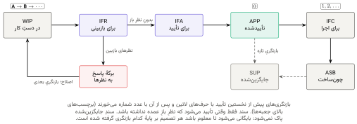
وضعیت مهمتر از بازنگری است. وضعیت میگوید سند برای چه کاری مجاز است. نقشهای با وضعیتِ «برای بازبینی» نباید در کارگاه ساخته شود، هر قدر هم کامل به نظر برسد. گذارهای مجاز در شکل 2.18 آمدهاند و کتابخانهٔ همراه آنها را وارسی میکند: مثلاً از «در دستِ کار» مستقیم به «برای اجرا» نمیتوان رفت، و سندِ «جایگزینشده» هرگز دوباره «تأییدشده» نمیشود.
نامِ پرونده. نامِ پرونده باید از خودِ سند بیاید، نه از احساسِ نویسنده؛ یعنی چیزی مثلِ نامِ زیر، نه «محاسبه_نهایی_اصلاحی۳»:
PLP-GEN-CAL-0002_B_IFR.pdfتاریخ در نامِ پرونده به شکلِ 2026-11-14 میآید، چون بهترتیب مرتب میشود؛ بیفاصله و بینویسههای ویژه، چون برخی سامانهها آنها را نمیپذیرند.
مثال 2.40 (شماره و بازنگری با کد) پرسش. شمارهٔ دوازدهمین محاسبهٔ برقیِ نیروگاهِ P چیست؟ بازنگریِ پس از B چیست و اگر B تأیید شود چه؟ اگر یک ورودیِ محاسبه از 1947.2 به 1947.3 عوض شود، اثرانگشتِ ورودیها چه میشود؟
پاسخ. کتابخانهٔ plantp.records:
from plantp import records as rec
print(rec.doc_number("ELE", "CAL", 12)) # PLP-ELE-CAL-0012
print(rec.next_revision("B")) # C
print(rec.next_revision("B", approve=True)) # 0
print(rec.digest({"P_dc_MWp": 60, "H_kWh_m2": 1947.2})[:16])
print(rec.digest({"P_dc_MWp": 60, "H_kWh_m2": 1947.3})[:16])PLP-ELE-CAL-0012
C
0
f22959441a648c60
6b430ee2d0d18599تفسیر. دو سطرِ آخر نشان میدهند که تغییرِ یک رقم در یک ورودی، اثرانگشتِ کلِ مجموعهٔ ورودیها را عوض میکند. برگهٔ محاسبه این اثرانگشت را ثبت میکند؛ پس اگر کسی ورودیای را بی ثبت عوض کند، ناسازگاری آشکار میشود.
2.5.4 کنترلِ نسخه و بازتولیدپذیری
بازتولیدپذیری. یک محاسبه بازتولیدپذیر است اگر همان ورودیها + همان روش (کد و نسخهاش) + همان محیط (نرمافزار و نسخههایش) = همان نتیجه. هر سه باید ثبت شوند: ورودیها با چکیده، روش با شمارهٔ نسخه، محیط با فهرستِ نسخههای بستهها. برنامههای این کتاب بذرِ تولیدکنندهٔ عددِ تصادفی را هم ثابت میگیرند تا حتی مونتکارلو دقیقاً تکرار شود.
کنترلِ نسخه. سامانهٔ کنترلِ نسخه (فصلِ ۵) هر تغییر را با نویسنده، زمان و دلیل نگه میدارد، تفاوتِ دو نسخه را نشان میدهد، و اجازه میدهد یک خطِ مبنا را برچسب بزنیم و هر وقت خواستیم به آن برگردیم. حتی بی این ابزارها، اصولش را میتوان رعایت کرد: نسخههای قدیم پاک نمیشوند، هر نسخه دلیلِ تغییر دارد، و آنچه منتشر میشود یک برچسبِ انتشار دارد.
نسخهگذاریِ معنادار. بستهٔ دادهٔ نیروگاهِ P شمارههایی به شکلِ 1.0.0 دارد: اصلی.فرعی.اصلاحی. تغییرِ اصلاحی (۱.۰.۰ به ۱.۰.۱) خطایی را درست میکند بی آنکه معنای داده عوض شود؛ تغییرِ فرعی (۱.۰ به ۱.۱) چیزی میافزاید و نتیجههای قبلی را خراب نمیکند؛ تغییرِ اصلی (۱ به ۲) چیزی را چنان عوض میکند که نتیجههای قبلی دیگر قابلِ مقایسه نیستند. هر انتشار یک فهرستِ تغییرات دارد.
مثال 2.41 (سه تغییر در بستهٔ داده) پرسش. هر تغییر کدام بخشِ شمارهٔ بستهٔ داده را بالا میبرد؟ (الف) فرضهای A-014 تا A-030 به پروندهٔ فرضها افزوده میشوند. (ب) یک غلطِ تایپی در توضیحِ یک ستونِ فرهنگِ داده اصلاح میشود. (پ) دادهٔ ساختگیِ باد با یک سال دادهٔ اندازهگیریشدهٔ دکل جایگزین میشود.
پاسخ. (الف) فرعی، 1.1.0: چیزی افزوده شده و هیچ نتیجهٔ قبلی عوض نمیشود. (ب) اصلاحی، 1.0.1: معنای داده عوض نشده. اما توجه: چون چکیدهٔ پروندهٔ فرهنگِ داده عوض میشود، مانیفست هم باید بهروز شود. (پ) اصلی، 2.0.0: همهٔ نتیجههای انرژی عوض میشوند و نتیجههای نسخهٔ ۱ با نسخهٔ ۲ قابلِ مقایسهٔ مستقیم نیستند. به همین دلیل هر مثالِ این کتاب انتشارِ بستهٔ داده را نام میبرد.
2.5.5 بازبینی و وارسیِ مستقل
سه سطح. (۱) وارسیِ خود (تهیهکننده): هر محاسبه پیش از فرستادن با فهرستِ وارسی بازخوانی میشود. (۲) وارسیِ مستقل (بازبین): شخصی صالح که در تهیهٔ محاسبه دخالت نداشته، آن را میآزماید. (۳) تأیید (مسئول): مهندسی که اختیارِ پذیرفتنِ نتیجه برای هدفِ مشخص را دارد، پس از بسته شدنِ نظرها امضا میکند. در کارهای پرپیامد، قانون یا قرارداد ممکن است وارسیِ شخصِ ثالث یا امضای مهندسِ دارای پروانه را الزامی کند.
استقلال یعنی چه؟ بازبینی که فقط همان صفحهگسترده را دوباره اجرا میکند، همان خطاها را دوباره میسازد. وارسیِ مستقل یعنی دستکم یکی از اینها: روشِ دیگر؛ ابزارِ دیگر؛ داده یا مرجعِ دیگر؛ یا آزمونی که با محاسبهٔ اصلی هیچ گامِ مشترکی ندارد. روشهای رایج:
- روشِ جایگزین: همان کمیت از راهِ دیگری (مثلاً انرژیِ سالانهٔ خورشیدی از جمعِ سالانهٔ تابش، نه از سریزمانی).
- محاسبهٔ وارونه: از نتیجه به ورودی برگردید.
- برآوردِ مرتبهٔ بزرگی و کرانها (بخش 2.3.6).
- حالتهای حدی و روند.
- وارسیِ نمونهای: چند سطر یا چند ساعت با دست.
- نگهبانِ ابعادی: محاسبه با کمیتهای دارای یکا.
- فهرستِ وارسیِ دامها: جدول 2.6 و جدول 2.7.
برگهٔ پاسخ به نظرها. بازبین نظرهایش را با شناسه، محل (سطر یا بند)، متن و رده ثبت میکند: عمده (نتیجه یا ایمنی را تغییر میدهد)، جزئی (نتیجه را کمی تغییر میدهد یا روشن نیست)، ویرایشی (نگارش) یا پرسش. تهیهکننده برای هر نظر پاسخ و اقدام مینویسد. نظر فقط وقتی بسته میشود که بازبین پاسخ را بپذیرد؛ نظری که اختلاف بر آن میماند، به تأییدکننده ارجاع میشود. سند با نظرِ عمدهٔ باز تأیید نمیشود.
- ده بخشِ یک برگهٔ محاسبه را بنویسید. کدام یک بیشتر از همه فراموش میشود؟
- چرا ثابتها نباید درونِ فرمولِ صفحهگسترده باشند؟
- شمارهٔ سومین گزارشِ محیطِزیستیِ نیروگاهِ P در نظامِ جدول 2.13 چیست؟
- چرا وضعیتِ یک سند از بازنگریاش مهمتر است؟
- نسخهٔ 1.4.2 یک بستهٔ داده پس از افزودنِ یک ستونِ تازه چه میشود؟ پس از اصلاحِ یک خطای دادهای که همهٔ نتیجهها را عوض میکند چه؟
- بازبینی که همان صفحهگسترده را دوباره اجرا میکند، چرا «مستقل» نیست؟
- فرقِ نظرِ «عمده» و «جزئی» چیست؟ چه کسی نظر را میبندد؟
- سه چیزی که برای بازتولیدپذیری باید ثبت شوند کداماند؟
2.5.6 مثالِ کامل: ممیزیِ یک برآوردِ تولید
این بخش مثالِ اصلیِ فصل است و همهٔ ابزارهای پیشین را کنارِ هم میگذارد. نقشها، مثلِ همهٔ کتاب، با عنوان آمدهاند نه نام: مهندسِ A محاسبه را تهیه میکند، مهندسِ B آن را مستقلاً وارسی میکند و سرپرستِ C آن را تأیید میکند.
مثال 2.42 (یافتن، فهمیدن و اصلاحِ دوازده خطا) پرسش. مهندسِ A برای دروازهٔ غربالگری، برآوردِ تولیدِ سالانهٔ نیروگاهِ P را با شمارهٔ PLP-GEN-CAL-0002، بازنگریِ A، وضعیتِ «برای بازبینی» فرستاده است. دادهٔ مبنا بستهٔ دادهٔ 1.0.0، سناریوی S0 است و از یک «برگهٔ خلاصهٔ ساختگاه» که میانگینها را با یکاهای گوناگون داده استفاده کرده است. (الف) پیشنویس را بازسازی کنید. (ب) خطاها را بیابید و ردهبندی کنید. (پ) محاسبه را اصلاح کنید. (ت) آن را با روشهای دیگر وارسیِ مستقل کنید. (ث) دربارهٔ موضوعی که محاسبه نمیتواند حل کند تصمیم بگیرید. (ج) برگهٔ محاسبهٔ نهایی را با ورودیهای مستند، تاریخچه و نظرها صادر کنید.
گامِ ۱: پیش از نقد، بازسازی. نخستین کارِ بازبین این است که خطا را دقیقاً بازتولید کند: اگر نتواند همان عددهای پیشنویس را بسازد، هنوز نمیداند پیشنویس چه کرده است. برنامهٔ companion/ch02/yield_audit.py پیشنویس را سطر به سطر، با همهٔ خطاهایش، دوباره حساب میکند:
PLP-GEN-CAL-0002 Rev A (IFR) as written by engineer A - reproduced
L1 PV rating P = 50 MW
L2 annual GHI 5.335 kWh/m2/d x 365 = 1947.3 kWh/m2
L3 E_PV = 50 MW x 1947.3 kWh/m2 x 0.85 x 0.98 = 81,104 MWh
L4 temperature: 1 - 0.0035 x ((45+273) - 25) = -0.0255 -> 'negative,
so use 45 - 25 = 20': factor 0.93; E_PV = 75,427 MWh
L5 rho = 877.67 / (287.05 x 16.78) = 0.182 kg/m3 -> 'too low, use 1.225'
L6 wind: sum of hourly curve power x 12 x 0.88 = 192,537,548;
/ 1000 / 1000 = 192.5 MWh
L7 total = 75,427 + 192.5 = 75,619.3 MWh
L8 curtailment at the 100 MW export limit: not relevant
L9 CF = 75,619 MWh / (120 MW x 8784 h) = 7.1740 %
L10 result: annual yield 75,619.2610 MWh, capacity factor 7.1740 %
L11 raising PR_DC from 0.80 to 0.85 raises the PV yield by 5 %
L12 mean wind speed at hub height 7.10 km/hنتیجهٔ پیشنویس، 75 619 MWh و ضریبِ ظرفیتِ 7.17 %، باید پیش از هر چیز زنگِ خطر را به صدا درآورد: تخمینِ سیثانیهای (مثال 2.21) حدودِ 280 GWh بود، یعنی پیشنویس تقریباً چهار برابر کم است. آزمونِ معقول بودن وجودِ خطا را نشان میدهد، اما کجا بودنش را نه.
گامِ ۲: یافتهها. بازبین هر سطر را با فهرستِ دامها (جدول 2.6، جدول 2.7) و نگهبانِ ابعادی میسنجد. جدول 2.14 برگهٔ پاسخ به نظرهاست.
| نظر | سطر | یافته | رده | اصلاح |
|---|---|---|---|---|
| C-01 | L1 | ظرفیتِ AC (50 MW) بهجای ظرفیتِ DC در مدلِ تابش | عمده | 60 MWp؛ سقفِ 50 MW با بُرش |
| C-02 | L3 | «MW × kWh/m²» MWh نیست؛ \(G_\text{STC}\) جا افتاده | جزئی | \(E = P_\text{STC}\,H/G_\text{STC}\cdots\) |
| C-03 | L4 | کلوین منهای سلسیوس در تلاشِ نخست | جزئی | سطر حذف (نظرِ بعد) |
| C-04 | L4 | تلفاتِ دما دو بار شمرده شده؛ در PR هست | عمده | ضریبِ جداگانه حذف |
| C-05 | L5 | هکتوپاسکال و سلسیوس در قانونِ گاز؛ جایگزینیِ بیصدا با 1.225؛ چگالیِ ساختگاه در مدل نیست | عمده | چگالی حساب و اثرش سنجیده شد (گامِ ۵) |
| C-06 | L6 | تقسیم بر \(10^6\) با برچسبِ MWh | عمده | 192 538 MWh |
| C-07 | L7 | جمعِ دو عدد با مقیاسهای متفاوت | عمده | پیامدِ C-06 |
| C-08 | L8 | آیا بُرشِ سقفِ اتصال واقعاً صفر است؟ | پرسش | 13.8 MWh در سال |
| C-09 | L9 | 120 MW ترکیبِ MWp و MW؛ سالِ ۲۰۲۳ ۸۷۶۰ ساعت دارد | عمده | مبنای سقفِ اتصال، ۸۷۶۰ ساعت |
| C-10 | L10 | دقتِ کاذب | ویرایشی | سه رقمِ بامعنا |
| C-11 | L11 | ۵ واحدِ درصد، ۶٫۲۵ درصد است | جزئی | اصلاح |
| C-12 | L12 | km/h بهجای m/s | ویرایشی | اصلاح |
یک ریزخطای هفتم هم هست که ارزشِ نظرِ جداگانه ندارد اما درسِ خوبی است: سطرِ L2 میانگینِ روزانه را به 5.335 گرد کرده و دوباره در ۳۶۵ ضرب کرده است و 1947.3 بهجای 1947.2 به دست آمده (بخش 2.3.3).
گامِ ۳: نگهبانِ ابعادی چه میگیرد؟ آزمایشگاهِ بخش 2.8 سطرهای پیشنویس را با کمیتهای دارای یکا اجرا میکند:
dimension guard on the Rev A draft
CAUGHT L3 as written: 50 MW x 1947.3 kWh/m2 x 0.833, as MWh
-> DimensionError: expected [L^2 M T^-2] (MWh), got [L^2 M^2 T^-5]
(m^2 kg^2 s^-5)
passed L3 corrected: 60 MWp x (1947.2 kWh/m2 / 1000 W/m2) x 0.833
-> 97321 MWh
CAUGHT L5 as written: 877.67 hPa / (287.05 J/(kg K) x 16.78 degC)
-> UnitError: 'degC': degrees Celsius/Fahrenheit are an offset scale;
use kelvin() for a temperature and 'K' for a difference
passed L5 corrected: kelvin(16.78) and hPa carried as a unit
-> 1.0546 kg/m3
CAUGHT adding power to energy: 60 MW + 192.5 GWh
-> DimensionError: cannot add MW [L^2 M T^-3] and GWh [L^2 M T^-2]
passed L7 as written: 75,427 MWh + 192.5 'MWh' (label wrong, dimension right)
-> 75620 MWh
passed L9 as written: 120 MW x 8784 h (basis wrong, dimension right)
-> 1.0541e+06 MWh
plausibility guard on the results
Rev A: CF = 0.0717 -> SUSPECT
Rev B: CF = 0.3309 -> okنگهبان سه خطا را خودکار گرفت: C-02 (بُعدِ \(\mathsf{M^2}\) برای «انرژی»!)، بخشِ نخستِ C-05 (سلسیوس در قانونِ گاز) و جمعِ توان و انرژی. اما C-01، C-04، C-06، C-07 و C-09، یعنی بیشترِ خطاهای عمده، از آن گذشتند، چون بُعدشان درست است: مبنای نادرست، شمارشِ دوباره و برچسبِ نادرستِ مقیاس هیچکدام بُعد را عوض نمیکنند. نگهبانِ معقول بودن (ضریبِ ظرفیتِ مشکوک) نتیجهٔ نادرست را گرفت، بی آنکه بگوید کجاست. درس: هیچ نگهبانِ خودکاری جای بازبینِ انسانی را نمیگیرد؛ هر کدام دستهای از خطاها را میگیرد.
گامِ ۴: محاسبهٔ اصلاحشده (بازنگریِ B).
PLP-GEN-CAL-0002 Rev B - corrected (Plant P Reference Data Pack 1.0.0,
scenario S0 (no-BESS))
L1 PV DC capacity P_STC = 60 MWp (SR-01); AC limit 50 MW (SR-02)
L2 annual GHI H = 1947.2 kWh/m2 (sum of 8760 hourly means x 1 h)
L3 E_PV,hand = P_STC x H / G_STC x PR_DC x eta_inv = 60 MWp x 1947.2 / 1
kW/m2
x 0.85 x 0.98 = 97,320 MWh (no clipping)
hourly model with the 50 MW limit: 97,304 MWh (clipped 15.7 MWh)
L4 no separate temperature factor: PR_DC = 0.85 already includes it
L5 mean air density p/(R T) = 87767 Pa / (287.05 x 289.93 K) = 1.055 kg/m3
(not used by the screening model; see comment C-05 and audit_density)
L6 E_wind = 192,538 MWh = 192.5 GWh (12 turbines, losses 0.12)
L7 E_gen = 97,304 + 192,538 = 289,842 MWh = 289.8 GWh
L8 curtailed 13.8 MWh; exported 289,828 MWh = 289.8 GWh
L9 CF (export basis, 100 MW, 8760 h) = 0.331; PV CF (50 MW AC) 0.222;
wind CF (60 MW) 0.366
L10 result: about 290 GWh/yr exported, CF 0.33 (screening)
L11 PR_DC 0.80 -> 0.85 raises E_PV by 6.25 % (5 percentage points of PR)
L12 mean hub-height wind speed 7.10 m/s = 25.6 km/hگامِ ۵: وارسیِ مستقل. مهندسِ B عددها را با روشهای دیگر و با همان بستهٔ داده میآزماید:
independent check by engineer B (different methods, same data pack)
PV: hand method 97,320 MWh - hourly 97,304 MWh = 15.7 MWh
= energy above the 50 MW inverter limit: explained, PASS
wind: binned frequency method 192,740 MWh vs hourly 192,538 MWh
difference +0.11 % (bin width 0.5 m/s): PASS (limit 1 %)
order of magnitude: estimate 280 GWh, model 289.8 GWh (+3.5 %): PASS (limit 25
%)
bounds: 0 <= CF = 0.331 <= 1; E_export <= 100 MW x 8760 h = 876 GWh: PASS
PV specific yield 1,622 kWh/kWp: plausible for 34 deg N (verify in chapters 12
and 15)
dimensions: every step re-run with plantp.units quantities, check(E, 'MWh'):
PASS
data pack 1.0.0 checksums: PASSدو وارسیِ نخست ارزشمندتریناند. برای خورشیدی، روشِ دستی (جمعِ سالانهٔ تابش) و روشِ ساعتی دقیقاً به اندازهٔ انرژیِ بریدهشده در سقفِ اینورتر فرق دارند؛ اختلافی که توضیح داده شده ارزشمندتر از اختلافِ صفر است. برای باد، روشِ فراوانیِ بستهای (شمارشِ ساعتها در هر بازهٔ نیممتری و ضرب در توانِ مرکزِ بازه) بیدرونیابی کار میکند و تنها 0.11 % با روشِ ساعتی فاصله دارد؛ این اختلاف از پهنای بازههاست و در فصلِ ۳ توضیح داده میشود.
گامِ ۶: آنچه محاسبه نمیتواند حل کند. نظرِ C-05 دو بخش داشت. بخشِ اول (یکاها) اصلاح شد. بخشِ دوم عمیقتر است: منحنیِ توانِ توربین برای چگالیِ 1.225 kg/m³ است و ساختگاه در 1200 m هوای رقیقتری دارد؛ مدلِ غربالگریِ فصلِ ۱ این را نمیبیند. بازبین اثر را میسنجد تا تصمیم آگاهانه باشد:
comment C-05: the power curve is for 1.225 kg/m3; Plant P is at 1200 m
hourly density from 2 m data: mean 1.056 kg/m3 (range 0.972 .. 1.153)
estimated at 100 m (lapse 6.5 K/km, scale height 8.4 km): mean 1.046 kg/m3
first-order correction: v_eq = v (rho / 1.225)^(1/3), then the power curve
wind energy with 2 m density: 177,082 MWh (-8.0 %)
wind energy with 100 m density: 176,107 MWh (-8.5 %)
plant total would fall to about 273 GWh/yr
decision: kept outside the screening model; recorded as limitation L-2,
unknown U-013 and assumption A-028; modelled in chapters 4, 11 and 15اصلاحِ تقریبی (تبدیلِ تندی به «تندیِ همارز» با ریشهٔ سومِ نسبتِ چگالی؛ فصلِ ۱۱) تولیدِ بادی را حدودِ 8.5 % و کلِ نیروگاه را حدودِ 16 GWh کم میکند؛ اثری نزدیک به عدمِ قطعیتِ منبع (مثال 2.35). سه گزینه بود: (۱) مدلِ غربالگری را همین حالا عوض کنیم؛ (۲) محاسبه را تا آمدنِ منحنیِ توانِ سازنده برای چگالیِ ساختگاه متوقف کنیم؛ (۳) محاسبه را برای هدفِ غربالگری بپذیریم و اثر را صریحاً بهعنوانِ محدودیت ثبت کنیم. B و A گزینهٔ سوم را پیشنهاد کردند و C پذیرفت: محدودیتِ L-2، فرضِ A-028 و مجهولِ U-013 («منحنیِ توانِ سازنده برای چگالیِ ساختگاه»). نکته در این است که عددِ 290 GWh حالا برچسبِ درستی دارد: «غربالگری، بی اصلاحِ چگالی، احتمالاً حدودِ ۶ درصد بیشبرآورد».
گامِ ۷: برگهٔ محاسبهٔ نهایی. پس از بسته شدنِ همهٔ نظرها، سرپرستِ C بازنگریِ 0 را با وضعیتِ «تأییدشده» برای کاربردِ غربالگری امضا میکند. برنامه برگه را از دادهٔ ساختاریافته میسازد، چکیدهٔ ورودیها و پروندهها را ثبت میکند و هر سطر را در ۷۸ نویسه نگه میدارد:
========================================================================
PLP-GEN-CAL-0002 Rev 0 status APP (approved)
Plant P - screening annual energy, scenario S0, data pack 1.0.0
========================================================================
Purpose: first-pass annual generation and export of Plant P for the
screening gate; not for design, finance or guarantees
Revision history
A 2026-11-02 IFR first issue for review; prepared A
B 2026-11-09 IFR comments C-01..C-12 incorporated; prepared A,
checked B
0 2026-11-14 APP approved for screening use; prepared A, checked
B, approved C
Inputs (id, quantity, value, status, source)
I1 PV DC capacity = 60 MWp [assumed] <- SR-01, data pack 1.0.0
I2 PV AC (inverter) limit = 50 MW [assumed] <- SR-02
I3 wind capacity = 12 x 5 MW [assumed] <- SR-03, A-005
I4 export limit = 100 MW [assumed] <- SR-06
I5 hourly GHI, wind speed = 8760 h - [synthetic] <-
timeseries/plantp_hourly_8760.csv
I6 power curve WT-5.0-150 = 61 rows kW [synthetic] <-
equipment/...power_curve.csv
I7 PR_DC = 0.85 - [assumed] <- plantp.screening, chapter 1
I8 inverter efficiency = 0.98 - [assumed] <- plantp.screening
I9 wind losses (lumped) = 0.12 - [assumed] <- plantp.screening
I10 reference irradiance G_STC = 1000 W/m2 [verified] <- definition
of STC (chapter 10)
inputs digest (SHA-256) 6d0dffd6157906c7...
file timeseries/plantp_hourly_8760.csv sha256 0b179863ba8707a5...
file equipment/wind_turbine_WT-5.0-150_power_curve.csv sha256
672c82e3bfaee9a1...
file scenarios/S0-no-bess.yml sha256 1bbe995db7e158fa...
Method
1. PV: hourly AC power = min(60 MWp x GHI/1000 W/m2 x 0.85 x 0.98, 50
MW)
2. wind: hourly speed into the power curve (linear interpolation) x 12
x 0.88
3. export = min(PV + wind, 100 MW); energy = sum of hourly power x 1 h
4. capacity factors on stated bases with 8760 h
Results
PV energy: 97.3 GWh/yr (clipped 15.7 MWh)
wind energy: 192.5 GWh/yr
generation: 289.8 GWh/yr
curtailed / exported: 13.8 MWh / 289.8 GWh per year
export capacity factor (100 MW): 0.331
resource uncertainty (teaching): U(k=2) about 20 GWh, see example
ex_montecarlo
Checks
[PASS] PV hand method vs hourly model: difference 15.7 MWh = clipping
[PASS] wind binned vs hourly: +0.11 %
[PASS] order of magnitude 280 GWh: +3.5 %
[PASS] bounds on CF and energy: within 0..1 and below 876 GWh
[PASS] dimension guard (plantp.units): all steps
[PASS] data pack checksums: 3 input files listed below
Limitations
- L-1 screening model: lumped losses, horizontal irradiance, no
geometry
- L-2 air density not modelled: about -8.5 % on wind energy (U-013,
A-028)
- L-3 synthetic one-year data: no interannual variability
Review comments (id, by, category, status)
C-01 B major CLOSED: PV model needs DC capacity (60 MWp), not the 50
MW AC limit
response: corrected; AC limit applied by clipping
C-02 B minor CLOSED: MW x kWh/m2 is not MWh; divide by G_STC
response: formula rewritten with H/G_STC
C-03 B minor CLOSED: kelvin minus degC in the first attempt
response: line removed (see C-04)
C-04 B major CLOSED: temperature loss counted twice (inside PR_DC)
response: separate factor removed
C-05 B major CLOSED: hPa and degC in the gas law; density silently
replaced by 1.225; screening ignores site density
response: rho = 1.055 kg/m3 computed; effect quantified
(audit_density); accepted as limitation L-2, tracked as U-013
C-06 B major CLOSED: divided by 1e6 but labelled MWh
response: 192,538 MWh = 192.5 GWh
C-07 B major CLOSED: sum mixes kWh-scale and GWh-scale numbers
response: follows from C-06
C-08 B question CLOSED: is curtailment really zero?
response: 13.8 MWh/yr computed and shown
C-09 B major CLOSED: 120 MW mixes MWp and MW; 2023 has 8760 h
response: CF on export basis 100 MW and per technology
C-10 B editorial CLOSED: false precision
response: reported to 3 significant figures
C-11 B minor CLOSED: 5 percentage points is 6.25 %
response: corrected
C-12 B editorial CLOSED: km/h should be m/s
response: corrected
References
- Plant P Reference Data Pack 1.0.0 (manifest, SHA-256)
- companion/ch01/screening_report.py; companion/ch02/yield_audit.py
- comment-resolution sheet: section D of chapter 2
========================================================================
open comments: 0وارسیِ معقول بودنِ نهایی. نتیجهٔ نهایی 289.8 GWh با غربالگریِ فصلِ ۱ (بخش 1.4) یکی است؛ باید باشد، چون همان مدل و همان داده است. ارزشِ این ممیزی در عددِ تازه نیست؛ در این است که عدد اکنون بازتولیدپذیر، مستند، مستقلاً وارسیشده و دارای محدودیتهای صریح است.
درسهای ممیزی.
- پیش از نقد، بازسازی کنید. اگر نتوانید خطا را دقیقاً بازتولید کنید، هنوز آن را نفهمیدهاید.
- آزمونِ معقول بودن وجودِ خطا را میگوید، نه جایش را. جای خطا را بازبینیِ سطر به سطر مییابد.
- خطاهای عمده اغلب ابعادی درستاند. مبنای غلط، شمارشِ دوباره و برچسبِ غلطِ مقیاس از نگهبانِ ابعادی میگذرند.
- اختلافِ توضیحدادهشده بهتر از اختلافِ صفر است. وارسیِ مستقلی که دقیقاً همان عدد را بدهد، شاید همان مسیر را رفته باشد.
- همهچیز را نمیتوان در یک محاسبه حل کرد. مهم این است که آنچه حل نشده نام، اندازه و مالک داشته باشد.
- تأیید برای یک هدف است. بازنگریِ 0 برای غربالگری تأیید شده است؛ همین عدد برای قراردادِ فروشِ برق یا تأمینِ مالی کافی نیست (فصلهای ۱۵، ۱۶ و ۲۱).
- چرا بازبین ابتدا پیشنویس را با همهٔ خطاهایش بازسازی میکند؟
- کدام نظرهای جدول 2.14 را نگهبانِ ابعادی گرفت و کدام را نه؟ برای هر گروه یک دلیل بیاورید.
- اگر C-01 اصلاح میشد ولی C-04 نه، تولیدِ خورشیدی چقدر کمبرآورد میشد؟
- چرا اختلافِ 15.7 MWh میانِ روشِ دستی و ساعتیِ خورشیدی «خبرِ خوب» است؟
- نظرِ C-05 با «پذیرش بهعنوانِ محدودیت» بسته شد. چه شرایطی لازم بود تا این بستن پذیرفتنی باشد؟
- اگر سرپرستِ C میخواست همین محاسبه را برای مذاکرهٔ قراردادِ فروشِ برق بهکار ببرد، چه چیزی باید عوض میشد؟
2.6 نیروگاهِ P: سه مثالِ یکپارچه
سه مثالِ این بخش، از ساده به یکپارچه، ابزارهای فصل را روی خودِ نیروگاهِ P بهکار میبندند.
مثال 2.43 (مقدماتی: آیا بستهٔ داده همان است که میگوید؟) پرسش. پیش از آنکه فصلهای بعد به دادهٔ ساعتیِ بستهٔ داده (1.0.0) تکیه کنند، یکاها و قراردادهایش را با فرهنگِ داده و با «نتیجههای مورد انتظار»ِ بسته مقایسه کنید: تعدادِ سطرها، منطقهٔ زمانی، گامِ زمانی، تکرار، پرچمها، قراردادِ جهتِ باد، و دو میانگینِ کلیدی. چه آزمونی نشان میدهد فشار بر حسبِ هکتوپاسکال است و نه پاسکال؟
پاسخ.
hourly file: 8760 rows; first 2023-01-01T00:00:00+04:00; last
2023-12-31T23:00:00+04:00
UTC offsets present: ['4:00:00']; steps between rows (s): [3600]
duplicated time stamps: 0; quality flags present: [0]
wind direction range 0 .. 359 deg (dictionary: FROM, 0 = north, clockwise:
True)
annual GHI = sum(W/m2) x 1 h / 1000 = 1947.2 kWh/m2; expected_results.json
1947.2 -> PASS
mean wind 100 m = 7.103 m/s; expected 7.103 -> PASS
pressure unit hPa: range 866.4 .. 888.8 (Pa would be 100 times larger)تفسیر. همهٔ آزمونها میگذرند: ۸۷۶۰ سطر برای یک سالِ غیرِکبیسه، یک اختلافِ ساعتِ ثابت (بی ساعتِ تابستانی، فرضِ A-003)، گامِ یکسانِ ۳۶۰۰ ثانیه، بیتکرار، و دو میانگین که با پروندهٔ نتیجههای مورد انتظار میخوانند. فشار در گسترهٔ 866 تا 889 است: برای هکتوپاسکال در ارتفاعِ 1200 m معقول، و برای پاسکال صد برابر کوچک. آنچه این آزمون نمیگوید: اینکه داده درست است؛ فقط اینکه سازگار است. داده ساختگی است و ساختگی میماند تا فصلهای ۱۲ و ۱۳ آن را با اندازهگیری جایگزین کنند. فصلِ ۵ همین وارسی را به یک برنامهٔ اعتبارسنجیِ کامل با طرحواره و آزمونهای خودکار تبدیل میکند.
مثال 2.44 (میانی: نخستین بیانیهٔ عدمِ قطعیتِ تولید) پرسش. برای پروندهٔ نیروگاهِ P یک «بیانیهٔ تولید» بنویسید که عدد، مبنا، عدمِ قطعیت، P50 و P90 را بدهد. با محدودیتِ L-2 (چگالیِ هوا) چه کنیم: آن را به عدمِ قطعیت بیفزاییم یا جورِ دیگری با آن رفتار کنیم؟
پاسخ. دو حالت را با مونتکارلو و همان عدمِ قطعیتهای آموزشیِ منبع (A-029) حساب میکنیم:
Plant P Reference Data Pack 1.0.0, scenario S0 (no-BESS); resource uncertainty
A-029 (teaching values), 200,000 draws
screening, no density correction:
P50 289.8 GWh, P90 276.6 GWh, std 10.1 GWh (3.5 %)
with first-order density correction:
P50 273.4 GWh, P90 260.3 GWh, std 10.1 GWh (3.7 %)
the density effect is a BIAS (a known shift): it moves the centre; it is
not added to the uncertaintyسوگیری یا عدمِ قطعیت؟ اثرِ چگالی جهت و اندازهٔ تقریبیِ معلومی دارد: تولید را کم میکند. چنین اثری سوگیری است و قاعدهٔ درست این است که یا اصلاح شود یا جداگانه گزارش شود؛ اگر آن را به عدمِ قطعیت بیفزاییم (که متقارن است)، بهدروغ میگوییم تولید ممکن است به همان اندازه بیشتر هم باشد. پس بیانیه چنین است:
«تولیدِ سالانهٔ نیروگاهِ P در غربالگری (PLP-GEN-CAL-0002، بازنگریِ 0؛ بستهٔ دادهٔ 1.0.0، سناریوی S0؛ دادهٔ ساختگی): P50 برابرِ 290 GWh و P90 برابرِ 277 GWh، فقط با عدمِ قطعیتِ آموزشیِ منبع. سوگیریِ شناختهشده: چگالیِ هوای ساختگاه مدل نشده است؛ اصلاحِ مرتبهٔ اول P50 را به حدودِ 273 GWh و P90 را به حدودِ 260 GWh میرساند. عدمِ قطعیتِ مدل، تلفات و تغییرپذیریِ سالبهسال در این عدد نیست (فصلِ ۱۶).»
تفسیر. این دو جمله از هر عددِ تنهایی بیشتر میگویند: خواننده میداند عدد چقدر نامطمئن است، به کدام سو احتمالاً خطا دارد، و چه چیزهایی هنوز در آن نیست. وارسی: پهنای P50 تا P90 حدودِ \(1.28\) انحرافِ معیار است (\(1.28 \times 10.1 \approx 13\))؛ همان اختلافِ 290 و 277 (درست).
مثال 2.45 (یکپارچه: بستهٔ شاهدِ پذیرشِ کنتورِ فروش و اینورترها) پرسش. در آینده نیروگاهِ P دو آزمونِ پذیرشِ مهم دارد: پذیرشِ زنجیرِ کنتورِ فروش در نقطهٔ اتصال، و پذیرشِ بازدهِ اینورترها. با ابزارهای این فصل، فهرستِ شاهدهایی را که باید از پیش در قراردادها و برنامهٔ آزمون خواسته شود، تهیه کنید و بگویید کدام تصمیمها بیرون از اختیارِ طراح است.
پاسخ.
| موضوع | شاهدِ لازم | ابزارِ این فصل | تصمیمگیرنده |
|---|---|---|---|
| تعریفِ کمیت | انرژیِ اکتیو و راکتیو، محلِ اندازهگیری، علامت، بازهٔ ثبت، برچسبِ زمان | بخش 2.3.5 | قراردادِ اتصال و بازار |
| ردهٔ دقت | ردهٔ کنتور، CT و VT و ترکیبشان | مثال 2.26 | قراردادِ اتصال؛ مرجعِ اندازهگیریِ قانونی |
| ردیابیپذیری | گواهیِ کالیبراسیون یا آزمونِ هر جزء با شمارهٔ سریال، از آزمایشگاهِ صالح | بخش 2.4.4 | مالک؛ مرجعِ قانونی |
| عدمِ قطعیتِ آزمون | بودجهٔ عدمِ قطعیتِ آزمونِ بازده، با همبستگیِ کانالها | مثال 2.36 | آزمایشکننده؛ بازبینِ مالک |
| قاعدهٔ تصمیم | ساده یا محافظتشده؛ اقدام در حالتِ نامعین | بخش 2.4.5.6 | قراردادِ خرید |
| سابقه | گزارشِ آزمون با همهٔ جزءها، امضای شاهدان، بایگانی در پروندهٔ دارایی | بخش 2.4.6 | مالک |
تفسیر. طراح میتواند و باید کمیتها را دقیق تعریف کند، بودجهٔ عدمِ قطعیت را برآورد کند و پیشنهادِ قاعدهٔ تصمیم را بدهد. اما ردهٔ لازمِ کنتورِ فروش، اعتبارِ آزمایشگاه و پذیرشِ نتیجه برای تسویهٔ مالی را قراردادِ اتصال، قواعدِ بازار و مرجعِ اندازهگیریِ قانونیِ کشور تعیین میکنند. اینها در دفترِ تأییدیهها با شناسههای P-002 (موافقتنامهٔ اتصال، فصلِ ۱) و مجهولِ U-003 (محلِ کنتور) پیوند میخورند. درس: بستهٔ شاهد پیش از آزمون نوشته میشود؛ پس از آزمون، هر طرف قاعدهای را میخواهد که به سودِ اوست.
2.7 گردشِ کارِ طراحیِ یک سابقهٔ محاسبهٔ وارسیشده
«طراحی» در این فصل طراحیِ یک سابقه است: محاسبهای که بتوان به آن تکیه کرد. گامها:
- پرسش و هدف را بنویسید. چه تصمیمی بر این محاسبه تکیه میکند؟ برای چه کاری نباید بهکار رود؟
- کمیتهای خروجی را کامل تعریف کنید: یکا، مبنا، محل، بازه، علامت.
- ورودیها را فهرست کنید، هر کدام با منبع، وضعیتِ شاهد و شناسهٔ دفترِ فرض. ورودیِ بیمنبع وارد نمیشود.
- روش را انتخاب کنید و مرجع و حدودِ اعتبارش را بنویسید.
- محاسبه را با جداییِ ورودی، محاسبه و خروجی بسازید؛ ترجیحاً با کمیتهای دارای یکا.
- وارسیِ خود: فهرستِ دامها، برآوردِ مرتبهٔ بزرگی، کرانها، حالتهای حدی، رقمهای بامعنا.
- عدمِ قطعیت و سوگیریها را برآورد کنید: بودجه، و جدا کردنِ سوگیریِ معلوم از عدمِ قطعیت.
- محدودیتها را نام، اندازه و مالک بدهید.
- برای بازبینی صادر کنید (شماره، بازنگری، وضعیت، چکیدهٔ ورودیها).
- وارسیِ مستقل و برگهٔ پاسخ به نظرها. هیچ نظرِ عمدهای باز نماند.
- تأیید برای هدفِ مشخص، ثبت در دفترِ مدارک و دفترِ تصمیم.
- نگهداری: هر تغییرِ ورودی یا روش بازنگریِ تازه میخواهد؛ سندِ قبلی «جایگزینشده» میشود و پاک نمیشود.
2.8 آزمایشگاهِ پایتون
سه برنامهٔ کوتاه همراهِ این فصلاند و از ریشهٔ پروژه اجرا میشوند. هر کدام خروجیاش را در companion/ch02/expected/ مینویسد؛ آنچه در کتاب آمده همان خروجی است.
آزمایشگاهِ ۱: نگهبانِ ابعادی (python -m companion.ch02.lab_guard). هستهٔ برنامه دو تابع است: یکی هر گامِ محاسبه را اجرا و خطای ابعادی را گزارش میکند، دیگری ضریبِ ظرفیت را با یک بازهٔ داوریِ مهندسی میسنجد:
def try_step(label: str, step) -> str:
"""Run one calculation step; report the result or the guard's error."""
try:
result = step()
return f"passed {label}\n -> {result:.5g}"
except (DimensionError, UnitError) as err:
message = textwrap.fill(f"-> {type(err).__name__}: {err}", 78,
initial_indent=" " * 8,
subsequent_indent=" " * 11)
return f"CAUGHT {label}\n{message}"def plausible_cf(energy: Q, capacity: Q, hours: Q, low=0.15, high=0.55) -> str:
"""Plausibility guard: a wind-solar capacity factor outside low..high is
suspect. The limits are a JUDGEMENT for screening, not a law of nature."""
cf = float(energy / (capacity * hours))
verdict = "ok" if low <= cf <= high else "SUSPECT"
return f"CF = {cf:.4f} -> {verdict}"خروجی در بخش 2.5.6 آمد. تمرین: یک گامِ تازه بیفزایید که توانِ MW را با MVA جمع کند. نگهبان آن را میگیرد؟ چرا نه، و چه چیزی باید آن را بگیرد؟
آزمایشگاهِ ۲: وقتی فرمول و مونتکارلو با هم نمیخوانند (python -m companion.ch02.lab_mc). تندیِ باد با عدمِ قطعیتِ 0.5 m/s به منحنیِ توانِ WT-5.0-150 داده میشود، در سه نقطهٔ کار:
for v0 in (6.0, 9.0, 12.5):
# first order (GUM): slope of the curve times u(v)
lin = un.combine(lambda v: float(turbine_kw(v)), {"v": v0},
{"v": 0.5})
# Monte Carlo: 200,000 speeds from N(v0, 0.5), each through the curve
mc = un.monte_carlo(lambda v: turbine_kw(v),
{"v": ("normal", v0, 0.5)})
lines.append(f"{v0:8.1f} {lin.y:8.0f} {lin.u_c:7.0f} "
f"{mc.mean:8.0f} {mc.std:7.0f} "
f"{mc.low:9.0f} .. {mc.high:6.0f}")WT-5.0-150 power from a wind speed with u(v) = 0.5 m/s (assumed, normal)
v (m/s) P lin u lin P mc u mc 95 % interval (kW)
6.0 1030 277 1056 280 570 .. 1661
9.0 3537 509 3522 488 2540 .. 4424
12.5 4985 15 4981 19 4935 .. 5000
at 12.5 m/s the curve bends towards rated power:
the linear formula misses the asymmetry
convergence of Monte Carlo at v = 9.0 m/s (20 seeds per size)
n = 100: mean 3509.6 kW, spread between seeds 46.9 kW (theory 48.8)
n = 1,000: mean 3515.0 kW, spread between seeds 14.7 kW (theory 15.4)
n = 10,000: mean 3523.1 kW, spread between seeds 5.9 kW (theory 4.9)
n = 100,000: mean 3522.1 kW, spread between seeds 1.0 kW (theory 1.5)
the spread shrinks about 3.2 times for every 10 times more draws (1 / sqrt(n))تفسیر. در 9 m/s، جایی که منحنی تقریباً خطی است، دو روش نزدیکاند. در 6 m/s، منحنی محدب است و میانگینِ مونتکارلو از توانِ نقطهٔ میانی بیشتر است (همان اثرِ «مکعبِ میانگین»). در 12.5 m/s، منحنی به سقفِ 5000 kW میرسد: توزیعِ خروجی نامتقارن است، بازهٔ ۹۵ درصد از 4935 تا 5000 kW است و هیچ «± یک عدد»ی آن را درست بیان نمیکند. بخشِ دوم نشان میدهد خطای خودِ مونتکارلو با \(1/\sqrt n\) کم میشود: صد برابر نمونهٔ بیشتر، ده برابر پراکندگیِ کمتر. تمرین: همین را در 3.5 m/s، نزدیکِ تندیِ آغازِ کار، تکرار کنید و توزیع را توصیف کنید.
آزمایشگاهِ ۳: برگهٔ محاسبه از داده (python -m companion.ch02.yield_audit). برگهٔ بخش 2.5.6 بهجای تایپ، از دادهٔ ساختاریافته ساخته میشود: فهرستِ ورودیها، روش، نتیجهها، وارسیها، نظرها و تاریخچه. کلاسِ CalcSheet در plantp/records.py شمارهٔ سند را وارسی میکند، شناسهٔ تکراریِ ورودی را رد میکند و گذارهای وضعیت را میآزماید. تمرین: یک ورودی را عوض کنید و برنامه را دوباره اجرا کنید؛ کدام سطرهای برگه عوض میشوند؟ سپس وضعیتِ بازنگریِ 0 را به «برای اجرا» تغییر دهید و یک نظرِ عمدهٔ باز بیفزایید؛ آیا برنامه باید این را بپذیرد؟ قاعدهای که این را رد کند بنویسید و آزمونش را در companion/tests/test_records.py بیفزایید.
2.9 ساخت و تولیدِ صنعتی در این فصل
این فصل محصولِ فیزیکی نمیسازد، پس «ساخت» به معنای کارخانهای در آن کاربرد ندارد. اما سه اصلِ این فصل ستونِ کیفیتِ هر کارخانهاند و فصلهای ۴۰ تا ۴۸ بر آنها بنا میشوند:
- ردیابیپذیریِ محصول. هر قطعهٔ مهم (ماژول، پره، ترانسفورماتور، ماژولِ باتری) شمارهٔ سریال یا شمارهٔ بهر دارد که آن را به مواد، فرایند، دستگاه، شیفت و نتیجهٔ آزمونش وصل میکند؛ همان منطقِ خاستگاهِ داده (بخش 2.4.6)، برای چیزهای فیزیکی. برای مواد فلزی، سندهای بازرسی با نوعهای تعریفشده (مثلاً در استانداردِ اروپاییِ EN 10204) نشان میدهند چه کسی، با چه استقلالی، کدام آزمون را تأیید کرده است (فصلِ ۴۱).
- کالیبراسیونِ ابزارهای کارخانه. آزمونهای پایانِ خطِ تولید (توانِ ماژول، مقاومتِ عایق، آزمونِ ترانسفورماتور) فقط به اندازهٔ ابزارهایشان معتبرند؛ هر ایستگاهِ آزمون زنجیرِ ردیابیپذیریِ خودش را دارد. افزون بر آن، تحلیلِ سامانهٔ اندازهگیری میسنجد که پراکندگیِ خودِ ابزار و کاربر (تکرارپذیری و تجدیدپذیری) در برابرِ رواداریِ محصول چقدر است؛ اگر ابزار نتواند قطعهٔ خوب را از بد جدا کند، آزمون بیمعناست (فصلهای ۴ و ۴۱).
- سوابقِ کیفیت. برنامهٔ بازرسی و آزمون، گزارشِ عدمِ انطباق، اقدامِ اصلاحی و بستهٔ اسنادِ تحویل همان «برگهٔ محاسبه و برگهٔ پاسخ به نظرها»ی این فصلاند، در مقیاسِ کارخانه (فصلهای ۳۸ و ۴۱ تا ۴۸).
رابط با فصلهای ۴۰ تا ۴۸: هر جا در آن فصلها «گواهی»، «گزارشِ آزمون» یا «پذیرش» آمده، معیارهای بخش 2.4.6 و قاعدهٔ تصمیمِ بخش 2.4.5.6 بهکار میروند.
2.10 جعبهٔ استاندارد و انطباق
سندهای زیر مرجعهای بینالمللیِ مفهومهای این فصلاند. عنوان و ویرایشِ هر یک در تاریخِ 2026-11-14 از سایتِ رسمیِ ناشر (یا، جایی که گفته شده، از منابعِ ثانویه) وارسی و در دفترِ استانداردهای کتاب ثبت شده است. محتوای بندها اینجا نقل نمیشود، و پذیرش یا الزامیِ بودنِ هیچکدام در ایران، افغانستان یا تاجیکستان وارسی نشده است؛ این کار فصلهای ۵۵ تا ۵۷ است. پیش از استناد در یک پروژهٔ واقعی، ویرایشِ جاری را دوباره وارسی کنید.
| نشانه | عنوان (کوتاه) | ناشر | کاربرد در این فصل |
|---|---|---|---|
| بروشورِ SI، ویرایشِ ۹ | دستگاهِ بینالمللیِ یکاها | BIPM | یکاها، ثابتهای تعریفکننده، پیشوندها، قاعدههای نوشتن |
| ISO 80000-1:2022 | کمیتها و یکاها، بخشِ ۱: کلیات | ISO | کمیت، بُعد، قاعدههای نمادها |
| JCGM 200:2012 | واژهنامهٔ بینالمللیِ اندازهشناسی (VIM)، ویرایشِ ۳ | JCGM | واژگانِ جدول 2.10 |
| JCGM 100:2008 | راهنمای بیانِ عدمِ قطعیتِ اندازهگیری (GUM) | JCGM | نوعِ الف و ب، انتشار، گزارش |
| JCGM 101:2008 | مکملِ ۱ GUM: انتشارِ توزیعها با مونتکارلو | JCGM | بخش 2.4.5.5 |
| JCGM 106:2012 | نقشِ عدمِ قطعیت در ارزیابیِ انطباق | JCGM | بخش 2.4.5.6 |
| نشانه | عنوان (کوتاه) | ناشر | کاربرد در این فصل |
|---|---|---|---|
| ISO/IEC 17025:2017 | الزاماتِ عمومیِ صلاحیتِ آزمایشگاههای آزمون و کالیبراسیون | ISO/IEC | اعتبارِ آزمایشگاه، ردیابیپذیری |
| ISO 8601-1:2019 | تاریخ و زمان، بخشِ ۱ (با اصلاحیهٔ ۲۰۲۲) | ISO | نوشتنِ زمان و برچسبها |
| IEC 62053-22:2020 | کنتورهای ایستای انرژیِ اکتیو با ترانسفورماتور، ردههای 0.1S تا 0.5S | IEC | ردهٔ دقتِ کنتورِ فروش |
| ISO 9060:2018 | دستهبندیِ ابزارهای اندازهگیریِ تابشِ خورشید | ISO | ردههای پیرانومتر (فصلِ ۱۲) |
| EN 10204:2004 | فراوردههای فلزی: نوعهای سندِ بازرسی | CEN | سوابقِ کیفیتِ مواد (منبعِ ثانویه؛ پیش از استناد وارسی شود) |
2.11 تحویلدادنیِ نیروگاهِ P
این فصل این برگها را به پروندهٔ نیروگاهِ P (نسخهٔ 0.1) میافزاید:
- برگهٔ محاسبهٔ PLP-GEN-CAL-0002، بازنگریِ 0، تأییدشده برای غربالگری: تولیدِ سالانه با ورودیهای مستند، چکیدهٔ پروندهها، وارسیِ مستقل و محدودیتهای L-1 تا L-3 (مثال 2.42)، همراه با برگهٔ پاسخ به نظرها (جدول 2.14).
- برگهٔ قراردادها PLP-GEN-SPC-0001، بازنگریِ 0: یکاها، سمت، جهتِ باد، علامتِ توان، زمان و مبنای ضریبِ ظرفیت (جدول 2.9).
- دفترِ مدارک PLP-PRJ-REG-0001: نخستین فهرستِ سندهای نیروگاهِ P (جدول 2.18).
- فرضها: A-023 تا A-030 (جدول 2.12).
- مجهولها: U-013 منحنیِ توانِ سازنده برای چگالیِ هوای ساختگاه؛ U-014 عدمِ قطعیتِ اندازهگیریشدهٔ منبع (جایگزینِ مقدارهای آموزشیِ A-029)؛ U-015 قراردادِ علامتِ توانِ راکتیو.
- تصمیمها: D-005 «برگهٔ قراردادهای PLP-GEN-SPC-0001 برای همهٔ سندهای پروژه پذیرفته شد»؛ D-006 «PLP-GEN-CAL-0002 بازنگریِ 0 برای کاربردِ غربالگری تأیید شد، با محدودیتِ L-2؛ برای قراردادِ فروش یا تأمینِ مالی معتبر نیست».
- نخستین بیانیهٔ تولید با عدمِ قطعیت و سوگیری (مثال 2.44).
- پلکانِ شاهدِ ورودیهای اصلی (جدول 2.11) و بستهٔ شاهدِ دو آزمونِ پذیرش (جدول 2.15).
| شماره | عنوان | بازنگری | وضعیت | فصل |
|---|---|---|---|---|
| PLP-PRJ-REP-0001 | پروندهٔ نیروگاهِ P، نسخهٔ 0.1 | A | IFI | ۱ |
| PLP-PRJ-REG-0001 | دفترِ مدارک (همین جدول) | A | WIP | ۲ |
| PLP-PRJ-REG-0002 | دفترِ فرضها | B | IFI | ۱، ۲، ۶ |
| PLP-PRJ-REG-0003 | دفترِ مجهولها و تأییدیهها | B | IFI | ۱، ۲، ۶ |
| PLP-PRJ-REG-0004 | دفترِ تصمیم | B | IFI | ۱، ۲ |
| PLP-PRJ-REG-0005 | دفترِ ریسک | A | IFI | ۱ |
| PLP-GEN-SPC-0001 | برگهٔ قراردادها | 0 | APP | ۲ |
| PLP-GEN-CAL-0001 | نخستین عددهای غربالگری (بی بازبینی) | A | SUP | ۱ |
| PLP-GEN-CAL-0002 | تولیدِ سالانه برای غربالگری | 0 | APP | ۲ |
| PLP-ELE-CAL-0001 | فیدرِ DC جعبهٔ تجمیع تا اینورتر | A | IFI | ۶ |
دو نکته دربارهٔ این جدول: (۱) برگهٔ فیدرِ فصلِ ۶ (تحویلدادنیِ آن فصل) اکنون شمارهٔ رسمی گرفته است؛ (۲) عددهای غربالگریِ فصلِ ۱ پاک نشدهاند، بلکه با وضعیتِ «جایگزینشده» در دفتر ماندهاند تا معلوم باشد تصمیمهای آن فصل بر پایهٔ چه سندی گرفته شد.
2.12 جمعبندی
- کمیت = عدد × یکا: تغییرِ یکا کمیت را عوض نمیکند، فقط عدد را؛ عددِ بییکا نیمی از یک اطلاع است و عددِ بیمبنا دو سوم. دو فاجعهٔ تاریخی از فرضِ ناگفتهٔ یکا در مرزِ میانِ دو سامانه آمدند.
- SI: هفت یکای پایه، از ۲۰۱۹ با هفت ثابتِ دقیقِ طبیعت تعریف میشوند؛ یکاهای فرعی همدوساند؛ kWh یکایی پذیرفتنی است، kW/h برای انرژی غلط است، و Wp فقط برچسبِ ظرفیتِ DCست. حروفِ کوچک و بزرگ معنا دارند: mW و MW یک میلیارد برابر فاصله دارند.
- تبدیل: فقط با ضریبِ واحد، و توان روی ضریب هم مینشیند (\(\text{mm}^2 \to 10^{-6}\ \text{m}^2\)).
- توان و انرژی: آهنگ و مقدار؛ انرژی مساحتِ زیرِ منحنیِ توان است. در دادهٔ کوتاهبازه \(\Delta t\) را فراموش نکنید. ضریبِ ظرفیت، ساعتهای بارِ کامل و تولیدِ ویژه مبنا میخواهند: خورشیدیِ نیروگاهِ P 0.185 بر DC و 0.222 بر AC، هر دو درست.
- AC: مقدارِ مؤثر و بیشینه (\(\sqrt2\))، ولتاژِ خط و فاز (\(\sqrt3\))، و سه توانِ \(P\)، \(Q\)، \(S\) با یکاهای جدا.
- دامها: بیست دامِ رایج؛ مهمترینش مکعبِ میانگین: ضریبِ الگوی انرژیِ بستهٔ داده 1.80 است و میانبُرِ تندیِ میانگین تولیدِ بادی را ۱۶ درصد کم میدهد.
- ابعاد: فقط همبُعدها جمع میشوند؛ آرگومانِ لگاریتم و نما بیبُعد است؛ ناهمگنی یعنی قطعاً غلط، همگنی یعنی شاید درست. روشِ ریلی نشان داد توانِ باد با \(\rho A v^3\) میرود.
- عددها: رقمهای بامعنا را عدمِ قطعیت تعیین میکند؛ در میانه گرد نکنید؛ رایانه اعشار را دقیق نمیشناسد.
- رواداری: قرارداد است، نه خطا و نه عدمِ قطعیت؛ بدترین حالت تضمینی است، ریشهٔ مجموعِ مربعات فرضِ فرایندِ کنترلشده دارد و برای قطعههای یکنواخت خوشبین است.
- قراردادها: سمت از شمالِ جغرافیایی و ساعتگرد؛ جهتِ «از» برای باد و میانگینِ برداری؛ صادرات در نقطهٔ اتصال مثبت؛ زمان با ISO 8601، اختلاف با UTC و برچسبِ آغازِ بازه. همه در برگهٔ PLP-GEN-SPC-0001.
- معقول بودن: برآوردِ مرتبهٔ بزرگی، کرانها، حالتهای حدی، روند و پایستگی؛ «مقدارِ رایج» پرسش میسازد، نه پاسخ.
- اندازهگیری: صحت، درستی و دقت سه چیزند؛ میانگینگیری خطای تصادفی را کم میکند، خطای سامانمند را هرگز. حدِ خطای «درصدِ خوانش بهاضافهٔ رقم» در پایینِ گستره بزرگ میشود.
- کالیبراسیون و ردیابیپذیری: کالیبراسیون اندازه میگیرد، تنظیم تغییر میدهد؛ تابعِ عمومیِ بادسنج میتواند دو درصد خطا در توان بدهد؛ ردیابیپذیری یعنی عدمِ قطعیتِ مستند، نه لزوماً کوچک.
- عدمِ قطعیت: نوعِ الف از تکرار (\(s/\sqrt n\))، نوعِ ب از هر دانشِ دیگر (\(a/\sqrt3\)، \(U/k\))؛ ترکیبِ مربعی؛ در ضرب و توان، عدمِ قطعیتِ نسبی ضربِ توان؛ بزرگترین جزء اغلب «نماینده بودن» است، نه ابزار. حساسیتِ انرژیِ بادیِ نیروگاهِ P به تندی 1.62 است، نه ۳.
- گزارش: \(U\) با دو رقم، نتیجه تا همان رقم: «290 GWh، \(U = 20\ \text{GWh}\)، \(k = 2\)، فقط منبع». سوگیریِ معلوم را اصلاح یا جدا گزارش کنید، به عدمِ قطعیت نیفزایید.
- انطباق: قبول یا رد خاصیتِ تجهیز، اندازهگیری و قاعدهٔ تصمیم با هم است؛ قاعده باید پیش از آزمون در قرارداد باشد.
- سوابق: دفترِ فرضها با شناسههای بیبازاستفاده؛ برگهٔ محاسبه با ده بخش و جداییِ ورودی و محاسبه و خروجی؛ شماره، بازنگری و وضعیت؛ بازتولیدپذیری = ورودی + روش + محیط؛ وارسیِ مستقل با روشِ دیگر؛ هیچ سندی با نظرِ عمدهٔ باز تأیید نمیشود.
- ممیزی: دوازده خطای پیشنویس، بیشترِ عمدهها ابعادی درست بودند؛ نتیجهٔ نهایی 289.8 GWh با محدودیتِ صریحِ چگالیِ هوا (حدودِ −16 GWh).
منابعِ این فصل. مرجعهای اصلی سندهای رایگانِ اندازهشناسیاند که در بخش 2.10 و دفترِ استانداردها آمدهاند: بروشورِ SI، VIM و GUM و مکملهایش. برای آموزشِ گامبهگامِ تحلیلِ خطا و عدمِ قطعیت، (Taylor 1997) منبعی کلاسیک است. کاربردِ این مفاهیم در ارزیابیِ منابعِ بادی و خورشیدی در (Manwell و همکاران 2009) و (Luque و Hegedus 2011) دنبال میشود.
2.12.1 واژگانِ فصلِ ۲
| فارسی | انگلیسی | یادداشت |
|---|---|---|
| کمیت | quantity | |
| یکا | unit | |
| یکای پایه / فرعی | base / derived unit | |
| همدوس | coherent | |
| ثابتِ تعریفکننده | defining constant | |
| پیشوند | prefix | |
| روشِ ضریبِ واحد | unit-factor method | |
| شدتِ تابش | irradiance | \(G\)، W/m² |
| تابشِ دریافتی | irradiation | \(H\)، kWh/m² |
| ساعتهای بارِ کامل | full-load hours | |
| تولیدِ ویژه | specific yield | kWh/kWp |
| شیبِ تغییرِ توان | ramp rate | |
| مقدارِ مؤثر | root-mean-square, RMS | |
| توانِ اکتیو / راکتیو / ظاهری | active / reactive / apparent power | W، var، VA |
| ضریبِ الگوی انرژی | energy pattern factor | |
| واحدِ درصد | percentage point | |
| بُعد / بیبُعد | dimension / dimensionless | |
| همگنیِ ابعادی | dimensional homogeneity | |
| روشِ ریلی | Rayleigh’s method | |
| نسبتِ سرعتِ نوک | tip-speed ratio | \(\lambda\) |
| رقمهای بامعنا | significant figures | |
| دقتِ کاذب | false precision | |
| رواداری | tolerance | تلرانس |
| انباشتِ رواداری | tolerance stack-up | |
| سمت | azimuth | |
| قراردادِ مولد | generator sign convention | |
| برچسبِ آغاز / پایانِ بازه | interval-beginning / -ending label | |
| برآوردِ مرتبهٔ بزرگی | order-of-magnitude estimate | |
| کمیتِ مورد اندازهگیری | measurand | |
| خطای سامانمند / تصادفی | systematic / random error | |
| صحت | accuracy | |
| درستی | trueness | |
| دقت | precision | |
| تکرارپذیری / تجدیدپذیری | repeatability / reproducibility | |
| تفکیکپذیری | resolution | |
| رانش / پسماند | drift / hysteresis | |
| کالیبراسیون | calibration | واسنجی |
| تنظیم | adjustment | |
| ردیابیپذیری | metrological traceability | |
| اعتباردهی | accreditation | |
| عدمِ قطعیتِ استاندارد / ترکیبی / گسترده | standard / combined / expanded uncertainty | |
| ضریبِ پوشش | coverage factor | \(k\) |
| ضریبِ حساسیت | sensitivity coefficient | \(c_i\) |
| بودجهٔ عدمِ قطعیت | uncertainty budget | |
| ارزیابیِ نوعِ الف / ب | Type A / Type B evaluation | |
| باندِ محافظ | guard band | |
| قاعدهٔ تصمیم | decision rule | |
| خاستگاهِ داده | data provenance | |
| پرچمِ کیفیت | quality flag | |
| چکیدهٔ رمزنگاشتی | cryptographic hash | |
| برگهٔ محاسبه | calculation sheet | |
| بازنگری / وضعیت | revision / status | |
| برگهٔ پاسخ به نظرها | comment-resolution sheet | |
| وارسیِ مستقل | independent check | |
| بازتولیدپذیری | reproducibility (of a calculation) | |
| سوگیری | bias |
2.13 ارزیابیِ پلکانی
2.13.1 پلهٔ ۱: مبانی
تمرین 2.1 هفت یکای پایهٔ SI را با کمیت و ثابتِ تعریفکنندهٔ هر یک بنویسید. چرا تعریف با ثابتها بازتولیدپذیرتر از تعریف با جسم است؟
تمرین 2.2 3.6 MJ را به کیلوواتساعت، 2 GWh را به ترازول و 132 kV را به ولت تبدیل کنید.
تمرین 2.3 اینها را درست بنویسید و هر خطا را نام ببرید: «15 KW»، «33 kv»، «5 mw/h» (برای انرژی)، «2.5mm2»، «1500 Vdc».
تمرین 2.4 سه توربینِ 5 MW چهار ساعت با توانِ کامل کار میکنند. انرژی را بر حسبِ MWh و GJ بیابید.
تمرین 2.5 صحت، درستی و دقت را تعریف کنید و برای هر کدام یک مثال از نیروگاه بزنید.
تمرین 2.6 هر عدد چند رقمِ بامعنا دارد؟ 0.0302، 302.0، \(3.020\times10^{4}\)، 30200.
تمرین 2.7 فرقِ کالیبراسیون، تنظیم و وارسیِ عملکرد چیست؟
تمرین 2.8 ردیابیپذیری را تعریف کنید. چرا «ردیابیپذیر» به معنای «دقیق» نیست؟
تمرین 2.9 ده بخشِ برگهٔ محاسبه را بشمارید. فرقِ «بازنگری» و «وضعیت» چیست و کدام برای کارگاه مهمتر است؟
تمرین 2.10 ارزیابیِ نوعِ الف و نوعِ ب را با یک مثال برای هر کدام توضیح دهید.
2.13.2 پلهٔ ۲: تحلیل
تمرین 2.11 میانگینِ روزانهٔ تابشِ افقیِ ساختگاهی 6.2 kWh/m² است. تابشِ سالانه و شدتِ تابشِ میانگینِ شبانهروزی را بیابید.
تمرین 2.12 توانِ میانگینِ شش بازهٔ دهدقیقهایِ یک ساعت ۱۲، ۱۲، ۱۸، ۱۸، ۱۵ و ۱۵ مگاوات است. انرژیِ آن ساعت چیست؟
تمرین 2.13 آرایهای 25 MWp در سال 41 GWh تولید میکند. تولیدِ ویژه و ضریبِ ظرفیتِ مبنای DC را بیابید.
تمرین 2.14 تندیِ باد یکچهارمِ زمان ۴، ۶، ۸ و ۱۰ متر بر ثانیه است. میانگین، میانگینِ مکعبها و ضریبِ الگوی انرژی را بیابید.
تمرین 2.15 کسی افتِ ولتاژِ فیدرِ DC را \(\Delta V = 2 L I/(\rho_\text{el} A)\) نوشته است. با تحلیلِ ابعادی نشان دهید غلط است و شکلِ درست را بنویسید.
تمرین 2.16 با روشِ ریلی شکلِ دورهٔ تناوبِ آونگی به طولِ \(\ell\) در شتابِ گرانشِ \(g\) را بیابید.
تمرین 2.17 باد از 225° با تندیِ 12 m/s میوزد. مؤلفههای \(u\) و \(v_\text{N}\) را بیابید و بگویید باد به کدام سو میرود.
تمرین 2.18 میانگینِ برداری و میانگینِ حسابیِ سه جهتِ 340°، 20° و 10° را بیابید.
تمرین 2.19 ولتمتری با دقتِ ±(0.5 % + 2 digits) و رقمِ آخرِ 0.1 V، 1091.0 V را نشان میدهد. حدِ خطا و عدمِ قطعیتِ استاندارد را بیابید.
تمرین 2.20 شش خوانشِ ولتاژِ یک ماژول: 41.92، 41.97، 41.95، 41.90، 41.99 و 41.93 V. میانگین، \(s\)، \(u(\bar x)\) و عدمِ قطعیتِ گستردهٔ ۹۵ درصد را بیابید.
تمرین 2.21 اگر \(P = VI\) و عدمِ قطعیتِ نسبیِ مستقلِ \(V\) و \(I\) به ترتیب 0.3 % و 0.4 % باشد، عدمِ قطعیتِ نسبیِ \(P\) چیست؟
تمرین 2.22 چهار قطعه با رواداریِ ±0.5 mm پشتِ سرِ هماند. انباشت را با بدترین حالت و ریشهٔ مجموعِ مربعات بیابید و بگویید هر روش چه فرضی دارد.
2.13.3 پلهٔ ۳: کاربرد در نیروگاهِ P
تمرین 2.23 با نتیجههای بستهٔ داده (1.0.0، S0)، تولیدِ ویژهٔ خورشیدی، ضریبِ ظرفیتِ آن بر دو مبنا و ضریبِ ظرفیتِ بادی را دوباره حساب کنید و در یک جدول با مبنا بنویسید.
تمرین 2.24 شبکهٔ جمعآوریِ 33 kV اگر 60 MW را با ضریبِ توانِ 0.95 ببرد، توانِ ظاهری و جریانِ خط چیست؟ همین در 132 kV؟
تمرین 2.25 اگر تندیهای ارتفاعِ 80 m بستهٔ داده در منحنیِ توانِ ارتفاعِ توپی گذاشته شوند، تولیدِ بادی چند درصد عوض میشود؟ (از خروجیِ برنامهٔ پاسخنامه استفاده کنید و نتیجه را با مثال 2.12 مقایسه کنید.)
تمرین 2.26 چگالیِ هوای ساختگاهی با فشارِ 845 hPa و دمای 12 °C را بیابید و با 1.225 kg/m³ مقایسه کنید.
تمرین 2.27 عدمِ قطعیتِ نسبیِ چگالیِ توانِ باد را برای \(u(v)/v = 1.5\,\%\) و \(u(\rho)/\rho = 0.5\,\%\) بیابید. کدام جزء مهمتر است؟
تمرین 2.28 اگر حدِ خطای هر حلقهٔ زنجیرِ کنتورِ فروشِ نیروگاهِ P 0.5 % باشد، حدِ ترکیبی (دو روش) و اثرش بر 289.8 GWh چیست؟
تمرین 2.29 بازدهِ تضمینشده 98.5 % و \(U = 0.20\) واحدِ درصد است. برای بازدههای اندازهگیریشدهٔ 98.65، 98.75 و 98.25 % با هر دو قاعده تصمیم بگیرید.
تمرین 2.30 کنتوری با برچسبِ «پایانِ بازه، UTC» سطرِ 2023-12-31 20:00 را فرستاده است. برچسبِ همین بازه در قراردادِ بستهٔ داده چیست؟
تمرین 2.31 این نتیجهها را با قاعدهٔ گزارش بنویسید: \(y = 1947.23\) با \(U = 58.4\)؛ \(y = 0.18512\) با \(U = 0.00734\)؛ \(y = 97\,304\) با \(U = 3890\).
تمرین 2.32 بستهٔ داده در نسخهٔ 1.0.0 است. شمارهٔ نسخه را پس از هر تغییر بنویسید: (الف) افزودنِ یک سناریوی باتریِ تازه؛ (ب) اصلاحِ یک خطا که تندیهای همهٔ ساعتها را 2 % عوض میکند؛ (پ) اصلاحِ یک غلطِ تایپی در توضیح.
تمرین 2.33 شمارهٔ هفتمین نقشهٔ عمرانیِ نیروگاهِ P چیست؟ بازنگریِ پس از Z و پس از تأییدِ Z چیست؟
تمرین 2.34 اگر در مثال 2.35 عدمِ قطعیتِ \(f_v\) پنج درصد بود، \(u_\text{c}\) تولیدِ کل با روشِ مرتبهٔ اول تقریباً چقدر میشد؟
2.13.4 پلهٔ ۴: طراحی و وارسی
تمرین 2.35 برگهٔ ورودیهای محاسبهٔ فیدرِ DC فصلِ ۶ را طراحی کنید: ستونها، ورودیها با منبع و وضعیت، و قاعدههایی که از ثابتهای پنهان جلوگیری کنند.
تمرین 2.36 برای محاسبهٔ تولیدِ خورشیدیِ نیروگاهِ P یک برنامهٔ وارسیِ مستقل با دستکم چهار روشِ متفاوت بنویسید. هر روش کدام دسته از خطاها را میگیرد؟
تمرین 2.37 میخواهید رشتههایی را که دو درصد کمکار میکنند با اندازهگیریِ جریان پیدا کنید. آمپرمترِ مثال 2.24 کافی است؟ مشخصاتِ لازم و روشِ اندازهگیری را پیشنهاد کنید.
تمرین 2.38 بودجهٔ عدمِ قطعیتِ اندازهگیریِ توانِ یک ماژول در ساختگاه را طراحی کنید: منبعها، نوع، توزیع و اینکه کدام احتمالاً بزرگترین است.
تمرین 2.39 برای ضمانتِ بازدهِ اینورتر قاعدهٔ تصمیم پیشنهاد کنید و بگویید ریسک را میانِ خریدار و فروشنده چطور تقسیم میکند.
تمرین 2.40 در مثال 2.18 بیشترین رواداریِ پهنای ماژول چیست که در بدترین حالت دستکم 10 mm فاصلهٔ آزاد بماند؟
تمرین 2.41 فرادادهٔ خاستگاهِ لازم برای نصبِ یک پیرانومترِ تازه روی ایستگاهِ هواشناسیِ نیروگاه را بنویسید.
تمرین 2.42 سه فرضِ تازه برای فیدرِ DC بنویسید (با شناسه، وضعیت، اثر، حساسیت و سرنوشت) که بتوانند پس از A-030 در دفتر بنشینند.
تمرین 2.43 تلفاتِ گردوغبار بهطورِ میانگین 2 % تولیدِ خورشیدی را کم میکند و ±۱ واحدِ درصد نامطمئن است. در بیانیهٔ تولید چطور با آن رفتار میکنید؟
تمرین 2.44 در این یادداشت خطاها را بیابید: «باتریِ S1: \(20\ \text{MW} \times 40\ \text{MWh} = 800\ \text{MWh}\)؛ انرژیِ سالانهٔ کاملِ بادی \(60\ \text{MW}/8760\ \text{h}\)؛ ضریبِ ظرفیتِ خورشیدی \(1622/8784\)؛ شدتِ تابشِ سالانه 1947 W/m².»
2.13.5 پلهٔ ۵: تسلط
تمرین 2.45 پیشنویسی میگوید تولیدِ بادیِ نیروگاهِ P «\(12 \times 5\ \text{MW} \times 8760\ \text{h} \times 0.45\)» است. آن را ممیزی کنید: خطای روش، مقدارِ مدل، و آنچه باید در برگهٔ محاسبه نوشته شود.
تمرین 2.46 بیانیهٔ تولیدِ مثال 2.44 را برای عدمِ قطعیتهای پنج درصدیِ \(f_v\) و \(f_H\) تکرار کنید. P90 چقدر جابهجا میشود و این برای تأمینِ مالی چه معنایی دارد؟
تمرین 2.47 خلاصهٔ یک رویهٔ کنترلِ مدارک برای نیروگاهِ P (یک صفحه) بنویسید: شمارهگذاری، بازنگری، وضعیت، بازبینی، بایگانی و دسترسی.
تمرین 2.48 دو مشاور P50 نیروگاهِ P را 290 و 273 GWh گزارش کردهاند. دستکم چهار علتِ ممکن را از این فصل بیابید و بگویید از هر مشاور چه شاهدی میخواهید.
تمرین 2.49 بیانیهٔ تولیدِ اصلاحشده با چگالی را کامل بنویسید و توضیح دهید چرا عدمِ قطعیتِ نسبیاش کمی بیشتر از حالتِ بیاصلاح است.
تمرین 2.50 سه محدودیتِ L-1 تا L-3 برگهٔ PLP-GEN-CAL-0002 را ارزیابی کنید و برای هر کدام برنامهٔ شاهد، فصلِ پاسخدهنده و اثرِ احتمالی بر عدد بنویسید.
تمرین 2.51 آزمایشگاهِ ۲ را در تندیِ 3.5 m/s تکرار کنید. توزیعِ توان را توصیف کنید و بگویید چرا روشِ مرتبهٔ اول اینجا گمراهکننده است.
تمرین 2.52 سه عادتِ این فصل را نام ببرید که به نظرتان پرهزینهترین خطاهای یک پروژهٔ نیروگاهی را پیشگیری میکنند، و برای هر کدام نشان دهید در ممیزیِ مثال 2.42 کجا اثر کرد.
2.14 پاسخنامه و راهحلها
عددهای این بخش را برنامهٔ companion/ch02/solutions.py تولید کرده است؛ خروجیِ کاملِ آن در پایانِ همین بخش آمده است. پاسخِ پرسشهای طراحی و تسلط معیارِ ارزیابی است، نه یک پاسخِ یکتا.
حل. تمرین 2.1. ثانیه (زمان، \(\Delta\nu_\text{Cs}\))، متر (طول، \(c\))، کیلوگرم (جرم، \(h\))، آمپر (جریان، \(e\))، کلوین (دما، \(k_\text{B}\))، مول (مقدارِ ماده، \(N_\text{A}\))، کاندلا (شدتِ نور، \(K_\text{cd}\)). ثابت در هر آزمایشگاهی در دسترس است و فرسوده نمیشود؛ جسم یکتا، آسیبپذیر و ناپایدار است.
حل. تمرین 2.2. \(3.6\ \text{MJ} = 1\ \text{kWh}\)؛ \(2\ \text{GWh} = 7.2\ \text{TJ}\)؛ \(132\ \text{kV} = 132\,000\ \text{V}\) (P02).
حل. تمرین 2.3. 15 kW (پیشوندِ کیلو کوچک، W بزرگ)؛ 33 kV (V بزرگ)؛ برای انرژی 5 MWh (کوچکنویسیِ M و W غلط است و «بر ساعت» آهنگ میسازد)؛ 2.5 mm² (فاصله و بالانویس)؛ \(V_\text{DC} = 1500\ \text{V}\) (اطلاعات به یکا نمیچسبد).
حل. تمرین 2.4. \(3 \times 5 \times 4 = 60\ \text{MWh} = 216\ \text{GJ}\) (P04).
حل. تمرین 2.5. صحت: نزدیکیِ یک نتیجه به مقدارِ واقعی (کیفی). درستی: نزدیکیِ میانگینِ بسیاری نتیجه به مرجع؛ مثال: بادسنجِ کالیبرهشده. دقت: نزدیکیِ نتیجههای تکراری به یکدیگر؛ مثال: پراکندگیِ ده خوانشِ جریانِ رشته (مثال 2.30).
حل. تمرین 2.6. 0.0302: سه؛ 302.0: چهار؛ \(3.020\times10^4\): چهار؛ 30200: مبهم (سه تا پنج)؛ باید به نمادِ علمی نوشته شود.
حل. تمرین 2.7. کالیبراسیون رابطهٔ نشانه و مرجع را با عدمِ قطعیت اندازه میگیرد؛ تنظیم ابزار را تغییر میدهد؛ وارسیِ عملکرد فقط حکمِ «میخواند/نمیخواند» نسبت به یک حد میدهد.
حل. تمرین 2.8. نتیجهای که با زنجیرِ پیوستهٔ مستندِ کالیبراسیونها، هر یک با عدمِ قطعیتِ اعلامشده، به مرجع (تعریفهای SI) وصل است. ردیابیپذیری یعنی عدمِ قطعیت معلوم است، نه کوچک (بخش 2.4.4).
حل. تمرین 2.9. سربرگ، هدف و دامنه، ورودیها، فرضها، روش، محاسبه، نتیجهها، وارسیها، محدودیتها، مرجعها و تاریخچه (بخش 2.5.2). بازنگری نسخه را میگوید و وضعیت کاربردِ مجاز را؛ برای کارگاه وضعیت مهمتر است: سندِ «برای بازبینی» ساخته نمیشود.
حل. تمرین 2.10. نوعِ الف از آمارِ تکرار (مثال: \(s/\sqrt n\) برای ده خوانشِ جریان)؛ نوعِ ب از هر دانشِ دیگر (مثال: حدِ خطای برگهٔ داده با توزیعِ مستطیلی، \(a/\sqrt3\)).
حل. تمرین 2.11. \(6.2 \times 365 = 2263\ \text{kWh/m}^2\) و میانگینِ شبانهروزی \(2263\,000/8760 = 258.3\ \text{W/m}^2\) (P11).
حل. تمرین 2.12. \(90 \times \tfrac16\ \text{h} = 15.0\ \text{MWh}\)؛ جمعِ خامِ «۹۰» شش برابر زیاد است (P12).
حل. تمرین 2.13. \(41\,000/25 = 1640\ \text{kWh/kWp}\) و \(\text{CF}_\text{DC} = 1640/8760 = 0.187\) (P13).
حل. تمرین 2.14. \(\bar v = 7\)، \(\overline{v^3} = 448\)، \(\bar v^3 = 343\)، \(K_\text{e} = 1.306\) (P14).
حل. تمرین 2.15. بُعدِ عبارتِ نوشتهشده
\[ \frac{\mathsf{L}\cdot\mathsf{I}}{\mathsf{M\,L^{3}\,T^{-3}\,I^{-2}}\cdot\mathsf{L^{2}}} = \mathsf{M^{-1}\,L^{-4}\,T^{3}\,I^{3}} \]
است که ولتاژ نیست. شکلِ درست \(\Delta V = 2\rho_\text{el}LI/A\) است با بُعدِ \(\mathsf{M\,L^{2}\,T^{-3}\,I^{-1}}\).
حل. تمرین 2.16. \(T = k\,\ell^{a} g^{b}\): برای \(\mathsf{L}\): \(a + b = 0\)؛ برای \(\mathsf{T}\): \(-2b = 1\). پس \(b = -\tfrac12\) و \(a = \tfrac12\): \(T = k\sqrt{\ell/g}\) (نظریه: \(k = 2\pi\)).
حل. تمرین 2.17. \(u = +8.485\ \text{m/s}\) و \(v_\text{N} = +8.485\ \text{m/s}\)؛ باد از جنوبغرب به سوی شمالشرق میرود (P17).
حل. تمرین 2.18. میانگینِ برداری حدودِ 3.5° و میانگینِ حسابی 123.3° (غلط) (P18).
حل. تمرین 2.19. حدِ خطا \(1091.0 \times 0.005 + 2 \times 0.1 = 5.66\ \text{V}\)؛ \(u = 5.66/\sqrt3 = 3.26\ \text{V}\) (P19).
حل. تمرین 2.20. \(\bar x = 41.943\ \text{V}\)، \(s = 0.0333\ \text{V}\)، \(u(\bar x) = 0.0136\ \text{V}\)؛ با پنج درجهٔ آزادی \(k = 2.571\) و \(U = 0.035\ \text{V}\) (P20).
حل. تمرین 2.21. \(\sqrt{0.3^2 + 0.4^2} = 0.50\,\%\) (P21).
حل. تمرین 2.22. بدترین حالت ±2.0 mm (همه همزمان در یک حد)؛ ریشهٔ مجموعِ مربعات ±1.0 mm (مستقل، متمرکز، و هر رواداری با یک احتمالِ یکسان، مثلاً سه انحرافِ معیار) (P22).
حل. تمرین 2.23. تولیدِ ویژه 1622 kWh/kWp؛ ضریبِ ظرفیتِ خورشیدی 0.185 بر DC و 0.222 بر AC؛ بادی 0.366 (P23؛ جدول 2.5).
حل. تمرین 2.24. \(S = 63.16\ \text{MVA}\)؛ \(I = 1105.0\ \text{A}\) در 33 kV و \(276.2\ \text{A}\) در 132 kV (P24).
حل. تمرین 2.25. 180.7 GWh در برابرِ 192.5 GWh، یعنی −6.2 %؛ کمتر از خطای −14 % تندیهای 60 m، چون 80 m به توپی نزدیکتر است (P25).
حل. تمرین 2.26. \(\rho = 84\,500/(287.05 \times 285.15) = 1.0323\ \text{kg/m}^3\)، یعنی 15.7 % کمتر از 1.225 (P26).
حل. تمرین 2.27. \(\sqrt{(3\times1.5)^2 + 0.5^2} = 4.53\,\%\)؛ تندی با فاصلهٔ زیاد مهمتر است (P27).
حل. تمرین 2.28. ریشهٔ مجموعِ مربعات 0.87 %، بدترین حالت 1.5 %؛ روی 289.8 GWh حدودِ 2.5 GWh در سال (P28).
حل. تمرین 2.29. 98.65: محافظتشده نامعین، ساده پذیرش؛ 98.75: هر دو پذیرش؛ 98.25: هر دو رد (P29).
حل. تمرین 2.30. بازهٔ ۱۹:۰۰ تا ۲۰:۰۰ UTC برابرِ ۲۳:۰۰ تا ۲۴:۰۰ به وقتِ +04:00 است: 2023-12-31T23:00:00+04:00 (P30).
حل. تمرین 2.31. \(1947 \pm 58\)؛ \(0.1851 \pm 0.0073\)؛ \(97\,300 \pm 3900\) (P31).
حل. تمرین 2.32. (الف) 1.1.0؛ (ب) 2.0.0 (همهٔ نتیجهها عوض میشوند)؛ (پ) 1.0.1، با بهروزرسانیِ مانیفست.
حل. تمرین 2.33. PLP-CIV-DWG-0007؛ پس از Z، AA؛ پس از تأیید، 0 (P33).
حل. تمرین 2.34. سهمِ باد \(1.62 \times 0.05 \times 192.5 = 15.6\ \text{GWh}\)، سهمِ خورشیدی 3.9 GWh، ترکیب حدودِ 16.1 GWh (P34).
حل. تمرین 2.35. معیارها: هر ورودی یک سطر با شناسه، نام، مقدار، یکا، وضعیت، منبع؛ ثابتهای فیزیکی (مقاومتِ ویژه، ضریبِ دمایی) هم ورودیاند با مرجع؛ هیچ عددی در فرمول؛ یکا در سرستون؛ قفلِ سلولهای فرمول؛ سربرگ با شمارهٔ PLP-ELE-CAL-0001، بازنگری و وضعیت.
حل. تمرین 2.36. نمونه: (۱) روشِ جمعِ سالانهٔ تابش (خطای جمع و مبنا)؛ (۲) نمونهٔ دستیِ چند ساعت (خطای فرمولِ ساعتی)؛ (۳) برآوردِ مرتبهٔ بزرگی و کرانِ ضریبِ ظرفیت (خطای مقیاس)؛ (۴) نگهبانِ ابعادی (خطای یکا)؛ (۵) مقایسهٔ مجموعِ ماهانه با سالانه (خطای جمع و زمان)؛ (۶) شکلِ روزانه در برابرِ شدتِ تابش (جابهجاییِ زمانی).
حل. تمرین 2.37. نه: حدِ خطای 5 % در 13 A از اثرِ 2 % بزرگتر است. معیار: عدمِ قطعیتِ مقایسه چند برابر کوچکتر از اثر (مثلاً زیرِ 0.5 %)؛ گسترهٔ کوچکتر یا ابزارِ دقیقتر؛ اندازهگیریِ نسبی همهٔ رشتهها با یک ابزار در بازهٔ کوتاه (تا خطای سامانمندِ مشترک خنثی شود) و پایشِ همزمانِ تابش؛ و فقط با رویهٔ ایمنِ مجاز (فصلِ ۶).
حل. تمرین 2.38. معیارها: شدتِ تابش (کالیبراسیون، جهت، تمیزی، طیف)، دمای سلول (حسگر و نماینده بودن)، ولتاژ و جریان (ابزار)، ناهماهنگیِ زمانی، تبدیل به شرایطِ استاندارد (مدل). بزرگترین جزء معمولاً تابش و تبدیل به شرایطِ استاندارد است، نه ولتمتر (فصلهای ۱۰ و ۵۰).
حل. تمرین 2.39. معیارها: قاعده صریح (ساده یا محافظتشده با \(w\) مشخص)؛ اقدام در حالتِ نامعین (آزمونِ تکراری با ابزارِ دقیقتر، یا شخصِ ثالث)؛ ریسکِ پذیرشِ نادرست و ردِ نادرست برای هر طرف گفته شود؛ عدمِ قطعیتِ بیشینهٔ مجاز برای آزمون در قرارداد بیاید.
حل. تمرین 2.40. \(13t + 12 + 5 \le 68 - 10\) پس \(t \le 3.15\ \text{mm}\)؛ رواداریِ ±3 mm کافی است (P40).
حل. تمرین 2.41. معیارها: سازنده، مدل، سریال، رده؛ گواهیِ کالیبراسیون و حساسیتِ فردی؛ مختصات، ارتفاع، سمت و شیبِ نصب، تراز؛ سایهاندازی؛ ثبتکننده و پیکربندی؛ منطقهٔ زمانی و بازهٔ میانگین؛ تاریخ و نصاب؛ برنامهٔ تمیزکاری و بازدید؛ چکیدهٔ پروندههای خام.
حل. تمرین 2.42. معیارها: شناسههای A-031 به بعد؛ هر سطر یک فرض؛ وضعیت «فرضی» با منبع؛ اثر (کدام محاسبه) و حساسیت (عددی)؛ سرنوشت (کدام شاهد، کدام فصل، چه کسی).
حل. تمرین 2.43. 2 % سوگیری است: تولید را اصلاح کنید (یا جداگانه گزارش کنید) و فقط ±1 واحدِ درصد را، بهصورتِ عدمِ قطعیتِ استانداردِ مناسب، به بودجه بیفزایید (مثال 2.44).
حل. تمرین 2.44. حاصلضربِ توان در انرژی انرژی نیست؛ انرژیِ باتری 40 MWh است. \(60/8760\) کمیتی بیمعناست؛ انرژیِ کامل \(60 \times 8760 = 525\,600\ \text{MWh}\). ضریبِ ظرفیت باید با ۸۷۶۰ ساعت باشد: 0.185. 1947 تابشِ دریافتی است با یکای kWh/m²، نه شدتِ تابش (P44).
حل. تمرین 2.45. ضریبِ ظرفیتِ 0.45 فرض شده، نه حساب؛ نتیجهٔ 236.5 GWh با مدلِ ساعتی (192.5 GWh، ضریبِ ظرفیت 0.366) 23 % فاصله دارد. برگه باید منبعِ ضریب را بدهد یا آن را با سریزمانی و منحنیِ توان جایگزین کند، و تلفات و چگالی را بنویسد (P45).
حل. تمرین 2.46. با پنج و پنج درصد، P90 از 276.6 به 268.2 GWh میرسد و انحرافِ معیار از 10.1 به 16.3 GWh. وامدهنده معمولاً بدهی را بر P90 یا پایینتر میسنجد؛ پس عدمِ قطعیتِ بیشتر یعنی وامِ کمتر یا گرانتر، حتی با P50 یکسان (P46؛ فصلِ ۲۱).
حل. تمرین 2.47. معیارها: نظامِ شماره (جدول 2.13)؛ قاعدهٔ بازنگری و وضعیت و گذارها؛ مسئولِ هر گام؛ برگهٔ پاسخ به نظرها و قاعدهٔ بستن؛ نامگذاریِ پرونده؛ بایگانی بدونِ حذف؛ دسترسی و مالکیت؛ نگهداری تا پایانِ عمر.
حل. تمرین 2.48. نمونهها: اصلاحِ چگالی (حدودِ 16 GWh)؛ ارتفاعِ تندیِ بهکاررفته؛ مبنای تولید یا صادرات؛ تلفات و در دسترس بودن؛ دادهٔ منبع و تابعِ کالیبراسیون؛ دورهٔ داده و اصلاحِ بلندمدت؛ قراردادِ زمان. شاهد: برگهٔ محاسبه با ورودیها، منبعها، چکیدهها و محدودیتها از هر دو.
حل. تمرین 2.49. «P50 حدودِ 273 GWh و P90 حدودِ 260 GWh، فقط عدمِ قطعیتِ آموزشیِ منبع، با اصلاحِ مرتبهٔ اولِ چگالی؛ …». انحرافِ معیارِ مطلق تقریباً همان است (10.1 GWh) ولی میانگین کمتر شده، پس عدمِ قطعیتِ نسبی از 3.5 به 3.7 % میرسد (مثال 2.44).
حل. تمرین 2.50. معیارها: L-1 (مدلِ لامپشده): مدلِ هندسی و تلفاتِ تفکیکی در فصلهای ۱۰، ۱۱ و ۱۵، اثر چند درصد در هر دو سو؛ L-2 (چگالی): منحنیِ توانِ سازنده (U-013)، فصلهای ۴ و ۱۱، حدودِ −8.5 % بادی؛ L-3 (یک سالِ ساختگی): اندازهگیری و اصلاحِ بلندمدت در فصلهای ۱۲، ۱۳ و ۱۶، اثر نامعلوم و احتمالاً بزرگترین.
حل. تمرین 2.51. روشِ مرتبهٔ اول 141 ± 92 kW میدهد؛ مونتکارلو میانگینِ 158 kW و بازهٔ ۹۵ درصدِ 2 تا 381 kW با حدودِ ۲ درصد نمونهی صفر (زیرِ نخستین نقطهٔ غیرِصفرِ منحنی). توزیع نامتقارن و به صفر چسبیده است؛ «± یک عدد» آن را نمیتواند بیان کند (P51).
حل. تمرین 2.52. معیارها: دستکم سه عادت از این فهرست با نمونهٔ مشخص در ممیزی: نوشتنِ یکا و مبنا (C-01، C-09)؛ برآوردِ مرتبهٔ بزرگی (گامِ ۱)؛ نگهبانِ ابعادی (C-02)؛ جدا کردنِ سوگیری از عدمِ قطعیت (C-05)؛ وارسیِ مستقل با روشِ دیگر (گامِ ۵)؛ سابقهٔ نسخهدار با نظرهای بسته (گامِ ۷).
خروجیِ برنامهٔ پاسخنامه.
P02: 3.6 MJ = 1.000 kWh; 2 GWh = 7.2 TJ; 132 kV = 132,000 V
P04: 3 x 5 MW x 4 h = 60 MWh = 216 GJ
P11: annual 2263 kWh/m2; mean irradiance 258.3 W/m2
P12: energy = 90 x (1/6) h = 15.0 MWh
P13: Y_sp = 41,000 MWh / 25 MWp = 1,640 kWh/kWp; CF_DC = 0.187
P14: mean 7.0 m/s; mean of cubes 448; cube of mean 343; K_e = 1.306
P17: u = +8.485 m/s; v_N = +8.485 m/s (towards north-east)
P18: vector mean 3.5 deg; arithmetic mean 123.3 deg
P19: limit +-5.66 V; u = 3.26 V
P20: mean 41.943 V; s = 0.0333 V; u(mean) = 0.0136 V; t(95 %, 5) = 2.571; U =
0.035 V
P21: u(P)/P = 0.50 %
P22: worst case +-2.0 mm; RSS +-1.0 mm
P23: PV 97.3 GWh: Y_sp 1,622 kWh/kWp, CF_DC 0.185, CF_AC 0.222; wind CF 0.366
P24: S = 63.16 MVA; I = 1105.0 A; at 132 kV 276.2 A
P25: 80 m speeds in the hub curve: 180.7 GWh vs 192.5 GWh (-6.2 %)
P26: rho = 1.0323 kg/m3 (-15.7 % from 1.225)
P27: u(w)/w = 4.53 %
P28: RSS 0.87 %; worst case 1.5 %; RSS on 289.8 GWh = 2.51 GWh
P29: eta 98.65 U 0.2: guarded inconclusive, simple accept
P29: eta 98.75 U 0.2: guarded accept, simple accept
P29: eta 98.25 U 0.2: guarded reject, simple reject
P30: hour-ending 2023-12-31 20:00 UTC = 19:00-20:00 UTC = 23:00-24:00 at
+04:00; label 2023-12-31T23:00:00+04:00
P31: y 1947.23, U 58.4 -> 1947 +- 58
P31: y 0.18512, U 0.00734 -> 0.1851 +- 0.0073
P31: y 97304.0, U 3890.0 -> 97300 +- 3900
P33: PLP-CIV-DWG-0007; after Z: AA; approved: 0; 3rd environmental report:
PLP-ENV-REP-0003
P34: wind 15.6 GWh, PV 3.9 GWh, combined 16.1 GWh (first order, sensitivity
1.62)
P40: 13 t + 12 x 1 + 5 <= 68 - 10 -> t <= 3.15 mm (choose +-3 mm)
P46: u(f_v) 3 %, u(f_H) 4 %: P50 289.8, P90 276.6, std 10.1 GWh
P46: u(f_v) 5 %, u(f_H) 5 %: P50 289.8, P90 268.2, std 16.3 GWh
P51: at 3.5 m/s: linear 141 +- 92 kW; MC mean 158 kW, std 96 kW, 95 % 2 .. 381
kW; 2 % of draws give zero power (below cut-in)
P45: draft: 12 x 5 MW x 8760 h x 0.45 = 236.5 GWh (CF assumed, not computed);
model: 192.5 GWh, CF 0.366
P44: BESS 20 MW x 40 MWh is not an energy; 40 MWh is the energy; 60 MW / 8760
h = 0.00685 MW/h is a meaningless quantity; 60 MW x 8760 h = 525,600 MWh;
1622 kWh/kWp / 8760 h = 0.185; with 8784 h 0.185